Applications
Complete desktop programs written in Ring — utilities, games and tools. Many are ports of the RingQt applications. Every one tests itself with --selftest.
Run one: cd samples/UsingDotNet/applications/Calculator then ring main.ring. With ring main.ring --selftest the application drives its own form, checks the results with dnAssert() and prints SELFTEST OK.
Ports of RingQt applications: Calculator, Stopwatch, TicTacToe, FifteenPuzzle, LightsOut, Game2048, MemoryGame, Snake, TowersOfHanoi, AnalogClock, RockPaperScissors, BMICalculator, GameOfLife, Minesweeper, EpochTime, AsciiTable, Calendar, EightQueens, Sudoku, Pong, Tetris, Sokoban, TypingQuiz, JulianDay. The others are new: Notepad, Paint, TodoList, ColorMixer, NumberGuess, Hangman, DiceRoller, UnitConverter, PasswordGenerator, WordCounter, Countdown, LoanCalculator, ImageViewer, LoginForm, TemperatureConverter, FileExplorer, AddressBook, plus the WPF applications WpfCalculator and WpfColorMixer.
Applications that are not windows: samples/UsingDotNet/applications/WebApi (ASP.NET Core) and samples/UsingDotNet/applications/Contacts (Entity Framework).
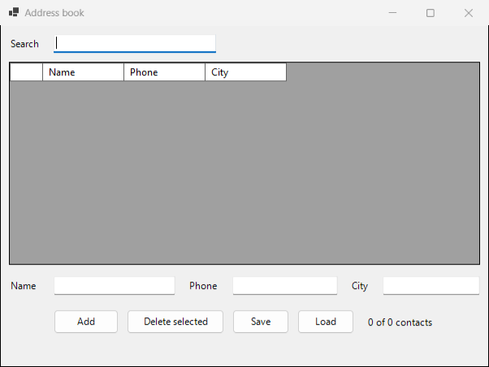
Address Book
Address book - a DataGridView bound to a DataTable, search, edit, delete and save/load as XML
cd samples/UsingDotNet/applications/AddressBook then ring main.ringSource code
# Address book - a DataGridView bound to a DataTable, search, edit, delete and save/load as XML
load "dotnet.ring"
using {
"System"
"System.IO"
"System.Data"
"System.Drawing"
"System.Windows.Forms"
}
cFile = ""
if uiSelfTest()
cFile = new Path().Combine([new Path().GetTempPath(),"addressbook_selftest.xml"])
else
cFile = new Path().Combine([new Path().GetTempPath(),"ringdotnet_addressbook.xml"])
ok
oTable = new DataTable()
oTable.TableName = "Contacts"
oTable.Columns.Add([ :columnName = "Name", :type = "System.String" ])
oTable.Columns.Add([ :columnName = "Phone", :type = "System.String" ])
oTable.Columns.Add([ :columnName = "City", :type = "System.String" ])
oForm = uiForm("Address book",600,420)
uiLabel(oForm,"Search",10,14,50,22)
oSearch = uiTextBox(oForm,65,11,200,26)
oSearch.setTextChangedEvent("applyFilter()")
oGrid = new DataGridView() {
Location = new Point(10,45)
Size = new Size(580,250)
AllowUserToAddRows = False
ReadOnly = True
SelectionMode = "FullRowSelect"
DataSource = oTable
}
oForm.Controls.Add(oGrid)
uiLabel(oForm,"Name",10,312,50,22)
oName = uiTextBox(oForm,65,309,150,26)
uiLabel(oForm,"Phone",230,312,50,22)
oPhone = uiTextBox(oForm,285,309,130,26)
uiLabel(oForm,"City",430,312,40,22)
oCity = uiTextBox(oForm,470,309,120,26)
uiButton(oForm,"Add",65,350,80,30,"addContact()")
uiButton(oForm,"Delete selected",155,350,120,30,"deleteSelected()")
uiButton(oForm,"Save",285,350,70,30,"saveBook()")
uiButton(oForm,"Load",365,350,70,30,"loadBook()")
oCount = uiLabel(oForm,"",450,357,140,22)
oMessage = uiLabel(oForm,"",10,392,580,22)
if new File().Exists(cFile) and not uiSelfTest()
loadBook()
ok
showCount()
uiTest(oForm,"selfTest()")
uiRun(oForm)
uiEnd()
# --------------------------------------------------------------------------
func showCount
oCount.Text = string(oTable.DefaultView.Count) + " of " + oTable.Rows.Count + " contacts"
func addContact
if trim(oName.Text) = ""
return
ok
oTable.Rows.Add([trim(oName.Text),trim(oPhone.Text),trim(oCity.Text)])
oName.Text = ""
oPhone.Text = ""
oCity.Text = ""
showCount()
func deleteSelected
if oGrid.SelectedRows.Count > 0
nIndex = oGrid.SelectedRows.Item(0).Index
oTable.DefaultView.Delete(nIndex)
showCount()
ok
func applyFilter
cText = trim(oSearch.Text)
if cText = ""
oTable.DefaultView.RowFilter = ""
else
# quotes in the text are doubled for the filter expression
cText = substr(cText,"'","''")
oTable.DefaultView.RowFilter = "Name LIKE '%" + cText + "%' OR City LIKE '%" + cText + "%'"
ok
showCount()
func saveBook
try
oTable.WriteXml(cFile)
oMessage.Text = "Saved " + oTable.Rows.Count + " contacts to " + cFile
catch
oMessage.Text = "Can't save: " + cCatchError
done
func loadBook
if not new File().Exists(cFile)
oMessage.Text = "Nothing to load yet: save the address book first (" + cFile + ")"
return
ok
try
oTable.Clear()
oTable.ReadXml(cFile)
oMessage.Text = "Loaded " + oTable.Rows.Count + " contacts"
catch
oMessage.Text = "Can't load: " + cCatchError
done
showCount()
func selfTest
for aContact in [["Ann Lee","555-0101","Cairo"],["Bob Stone","555-0102","Oslo"],["Cy Young","555-0103","Cairo"]]
oName.Text = aContact[1]
oPhone.Text = aContact[2]
oCity.Text = aContact[3]
addContact()
next
dnAssert("three contacts",oTable.Rows.Count,3)
dnAssert("grid shows them",oGrid.Rows.Count,3)
dnAssert("fields are cleared",oName.Text,"")
oSearch.Text = "cairo"
dnAssert("filter by city",oGrid.Rows.Count,2)
oSearch.Text = "stone"
dnAssert("filter by name",oGrid.Rows.Item(0).Cells.Item(0).Value,"Bob Stone")
oSearch.Text = ""
dnAssert("no filter",oGrid.Rows.Count,3)
oName.Text = ""
addContact()
dnAssert("an empty name is ignored",oTable.Rows.Count,3)
saveBook()
dnAssert("saved as xml",new File().Exists(cFile),True)
oGrid.Rows.Item(1).Selected = True
deleteSelected()
dnAssert("deleted",oTable.Rows.Count,2)
loadBook()
dnAssert("loaded again",oTable.Rows.Count,3)
dnAssert("data is back",oTable.Rows.Item(1).Item("Name"),"Bob Stone")
dnAssert("count text",oCount.Text,"3 of 3 contacts")
new File().Delete(cFile)
# loading without a saved file is a message, not a crash
oTable.Clear()
loadBook()
dnAssert("no file message",left(oMessage.Text,15),"Nothing to load")
dnAssert("nothing was loaded",oTable.Rows.Count,0)
oName.Text = "Zed"
addContact()
saveBook()
dnAssert("save message",left(oMessage.Text,7),"Saved 1")
new File().Delete(cFile)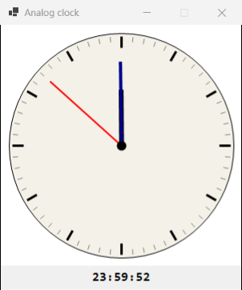
Analog Clock
Analog clock - a port of ring/applications/analogclock to RingDotNet
cd samples/UsingDotNet/applications/AnalogClock then ring main.ringSource code
# Analog clock - a port of ring/applications/analogclock to RingDotNet
load "dotnet.ring"
using {
"System"
"System.Drawing"
"System.Windows.Forms"
}
C_CENTER = 150
C_PI = 3.14159265358979
oForm = uiForm("Analog clock",300,330)
oForm {
FormBorderStyle = "FixedSingle"
MaximizeBox = False
}
oPicture = uiPictureBox(oForm,0,0,300,300)
oCanvas = new UiCanvas(oPicture)
oDigital = uiLabel(oForm,"",0,302,300,24)
oDigital {
TextAlign = "MiddleCenter"
Font = uiFont("Consolas",12,true)
}
oTimer = uiTimer(1000,"tick()")
tick()
oTimer.Start()
uiTest(oForm,"selfTest()")
uiRun(oForm)
uiEnd()
# --------------------------------------------------------------------------
# the end of a hand: nAngle in degrees (0 = 12 o'clock, clockwise)
func handX nAngle, nLength
return C_CENTER + nLength * sin(nAngle * C_PI / 180)
func handY nAngle, nLength
return C_CENTER - nLength * cos(nAngle * C_PI / 180)
func drawClock nHour, nMinute, nSecond
oCanvas.clear("White")
oCanvas.fillCircle(C_CENTER,C_CENTER,140,"#f4f1e8")
oCanvas.drawCircle(C_CENTER,C_CENTER,140,"Black")
for nMark = 0 to 59
nAngle = nMark * 6
if nMark % 5 = 0
oCanvas.line(handX(nAngle,122),handY(nAngle,122),handX(nAngle,136),handY(nAngle,136),"Black",3)
else
oCanvas.line(handX(nAngle,130),handY(nAngle,130),handX(nAngle,136),handY(nAngle,136),"Gray",1)
ok
next
nHourAngle = (nHour % 12) * 30 + nMinute * 0.5
nMinuteAngle = nMinute * 6 + nSecond * 0.1
nSecondAngle = nSecond * 6
oCanvas.line(C_CENTER,C_CENTER,handX(nHourAngle,70),handY(nHourAngle,70),"Black",6)
oCanvas.line(C_CENTER,C_CENTER,handX(nMinuteAngle,105),handY(nMinuteAngle,105),"DarkBlue",4)
oCanvas.line(C_CENTER,C_CENTER,handX(nSecondAngle,120),handY(nSecondAngle,120),"Red",2)
oCanvas.fillCircle(C_CENTER,C_CENTER,6,"Black")
oCanvas.show()
func twoDigits n
cText = "" + floor(n)
if len(cText) < 2
cText = "0" + cText
ok
return cText
func tick
oNow = dnType("System.DateTime").getProp("Now")
drawClock(oNow.Hour,oNow.Minute,oNow.Second)
oDigital.Text = twoDigits(oNow.Hour) + ":" + twoDigits(oNow.Minute) + ":" + twoDigits(oNow.Second)
func selfTest
oTimer.Stop()
drawClock(3,0,30)
dnAssert("hour hand points right at 3:00",oCanvas.pixel(C_CENTER + 40,C_CENTER),"ff000000")
dnAssert("minute hand points up at :00",oCanvas.pixel(C_CENTER + 4,C_CENTER - 80),"ff00008b")
dnAssert("the second hand points down at :30",oCanvas.pixel(C_CENTER,C_CENTER + 60),"ffff0000")
dnAssert("empty face in a quadrant without hands",oCanvas.pixel(C_CENTER + 60,C_CENTER + 60),"fff4f1e8")
drawClock(6,30,0)
dnAssert("hour hand points down at 6:30",oCanvas.pixel(C_CENTER,C_CENTER + 40) != "fff4f1e8",1)
dnAssert("angle math",floor(handX(90,100)),250)
tick()
dnAssert("digital clock text",len(oDigital.Text),8)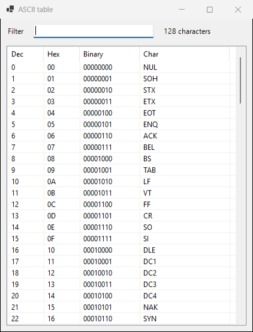
Ascii Table
ASCII table in a ListView with a filter (a port of ring/applications/asciitable)
cd samples/UsingDotNet/applications/AsciiTable then ring main.ringSource code
# ASCII table in a ListView with a filter (a port of ring/applications/asciitable)
load "dotnet.ring"
using {
"System.Drawing"
"System.Windows.Forms"
}
aNames = ["NUL","SOH","STX","ETX","EOT","ENQ","ACK","BEL","BS","TAB","LF","VT","FF","CR","SO","SI","DLE","DC1","DC2","DC3","DC4","NAK","SYN","ETB","CAN","EM","SUB","ESC","FS","GS","RS","US"]
oForm = uiForm("ASCII table",420,520)
uiLabel(oForm,"Filter",10,12,40,22)
oFilter = uiTextBox(oForm,55,9,200,26)
oCount = uiLabel(oForm,"",270,12,140,22)
oList = new ListView() {
Location = new Point(10,45)
Size = new Size(400,465)
View = "Details"
FullRowSelect = True
GridLines = True
}
oList.Columns.Add([ :text = "Dec", :width = 60 ])
oList.Columns.Add([ :text = "Hex", :width = 60 ])
oList.Columns.Add([ :text = "Binary", :width = 100 ])
oList.Columns.Add([ :text = "Char", :width = 150 ])
oForm.Controls.Add(oList)
oFilter.setTextChangedEvent("fillTable()")
fillTable()
uiTest(oForm,"selfTest()")
uiRun(oForm)
uiEnd()
# --------------------------------------------------------------------------
func charName nCode
if nCode < 32
return aNames[nCode + 1]
but nCode = 32
return "SPACE"
but nCode = 127
return "DEL"
ok
return char(nCode)
func binary nCode
cBits = ""
for nBit = 7 to 0 step -1
if floor(nCode / pow(2,nBit)) % 2 = 1
cBits += "1"
else
cBits += "0"
ok
next
return cBits
func fillTable
cFilter = lower(oFilter.Text)
oList.BeginUpdate()
oList.Items.Clear()
nShown = 0
for nCode = 0 to 127
cName = charName(nCode)
cHex = upper(hex(nCode))
if len(cHex) = 1
cHex = "0" + cHex
ok
cRow = "" + nCode + " " + lower(cHex) + " " + lower(cName)
if cFilter = "" or substr(cRow,cFilter)
oItem = dnNew("ListViewItem",[ :text = "" + nCode ])
oItem.SubItems.Add(cHex)
oItem.SubItems.Add(binary(nCode))
oItem.SubItems.Add(cName)
oList.Items.Add(oItem)
nShown++
ok
next
oList.EndUpdate()
oCount.Text = string(nShown) + " characters"
func selfTest
dnAssert("all 128 rows",oList.Items.Count,128)
dnAssert("row 65 is A",oList.Items.Item(65).SubItems.Item(3).Text,"A")
dnAssert("hex of 65",oList.Items.Item(65).SubItems.Item(1).Text,"41")
dnAssert("binary of 65",oList.Items.Item(65).SubItems.Item(2).Text,"01000001")
dnAssert("control name",oList.Items.Item(10).SubItems.Item(3).Text,"LF")
oFilter.Text = "esc"
dnAssert("filter by name",oList.Items.Count,1)
oFilter.Text = "7f"
dnAssert("filter by hex",oList.Items.Count,1)
oFilter.Text = ""
dnAssert("all rows again",oList.Items.Count,128)
dnAssert("count label",oCount.Text,"128 characters")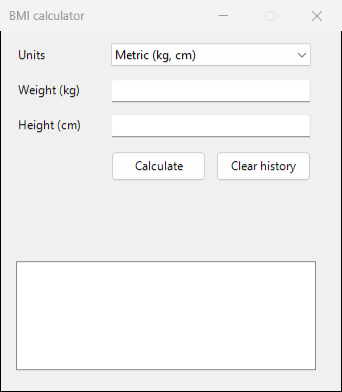
BMICalculator
BMI calculator with history (a port of ring/applications/bmicalculator to RingDotNet)
cd samples/UsingDotNet/applications/BMICalculator then ring main.ringSource code
# BMI calculator with history (a port of ring/applications/bmicalculator to RingDotNet)
load "dotnet.ring"
using {
"System.Drawing"
"System.Windows.Forms"
}
aHistory = []
oForm = uiForm("BMI calculator",340,360)
oForm {
FormBorderStyle = "FixedDialog"
MaximizeBox = False
}
uiLabel(oForm,"Units",15,15,90,24)
oUnits = uiComboBox(oForm,110,12,200,["Metric (kg, cm)","Imperial (lb, in)"])
oWeightLabel = uiLabel(oForm,"Weight (kg)",15,50,90,24)
oWeight = uiTextBox(oForm,110,48,200,26)
oHeightLabel = uiLabel(oForm,"Height (cm)",15,85,90,24)
oHeight = uiTextBox(oForm,110,83,200,26)
uiButton(oForm,"Calculate",110,120,95,30,"calculate()")
uiButton(oForm,"Clear history",215,120,95,30,"oHistory.Items.Clear() aHistory = []")
oBmi = uiLabel(oForm,"",15,160,300,34)
oBmi.Font = uiFont("Segoe UI",16,true)
oCategory = uiLabel(oForm,"",15,195,300,24)
oHistory = uiListBox(oForm,15,230,300,115)
oUnits.setSelectedIndexChangedEvent("unitsChanged()")
uiTest(oForm,"selfTest()")
uiRun(oForm)
uiEnd()
# --------------------------------------------------------------------------
func bmi nKilograms, nMeters
return nKilograms / (nMeters * nMeters)
func category nBmi
if nBmi < 18.5
return "Underweight"
but nBmi < 25
return "Normal weight"
but nBmi < 30
return "Overweight"
ok
return "Obese"
func unitsChanged
if oUnits.SelectedIndex = 0
oWeightLabel.Text = "Weight (kg)"
oHeightLabel.Text = "Height (cm)"
else
oWeightLabel.Text = "Weight (lb)"
oHeightLabel.Text = "Height (in)"
ok
func calculate
nWeight = number(oWeight.Text)
nHeight = number(oHeight.Text)
if nWeight <= 0 or nHeight <= 0
oBmi.Text = "Enter a weight and a height"
oCategory.Text = ""
return
ok
if oUnits.SelectedIndex = 0
nKilograms = nWeight
nMeters = nHeight / 100
else
nKilograms = nWeight * 0.45359237
nMeters = nHeight * 0.0254
ok
nValue = bmi(nKilograms,nMeters)
oBmi.Text = "BMI " + uiNumber(floor(nValue * 10 + 0.5) / 10)
oCategory.Text = category(nValue)
cLine = oBmi.Text + " - " + oCategory.Text
aHistory + cLine
oHistory.Items.Insert(0,cLine)
func selfTest
dnAssert("category underweight",category(17),"Underweight")
dnAssert("category normal",category(22),"Normal weight")
dnAssert("category overweight",category(27),"Overweight")
dnAssert("category obese",category(35),"Obese")
oWeight.Text = "70"
oHeight.Text = "175"
calculate()
dnAssert("metric BMI",oBmi.Text,"BMI 22.9")
dnAssert("metric category",oCategory.Text,"Normal weight")
oUnits.SelectedIndex = 1
dnAssert("labels follow the units",oWeightLabel.Text,"Weight (lb)")
oWeight.Text = "220"
oHeight.Text = "70"
calculate()
dnAssert("imperial BMI",oBmi.Text,"BMI 31.6")
dnAssert("imperial category",oCategory.Text,"Obese")
dnAssert("history",oHistory.Items.Count,2)
oWeight.Text = ""
calculate()
dnAssert("empty input",oBmi.Text,"Enter a weight and a height")
Calculator
Calculator - a port of ring/applications/calculator to RingDotNet (Windows Forms)
cd samples/UsingDotNet/applications/Calculator then ring main.ringSource code
# Calculator - a port of ring/applications/calculator to RingDotNet (Windows Forms)
load "dotnet.ring"
using {
"System.Drawing"
"System.Windows.Forms"
}
cDisplay = "0" # the number being typed or the result
nAccumulator = 0 # the left operand
cOperator = "" # + - * /
lFresh = true # the next digit starts a new number
cHistory = ""
oForm = uiForm("Calculator",280,380)
oForm {
KeyPreview = True
FormBorderStyle = "FixedSingle"
MaximizeBox = False
}
oHistory = uiLabel(oForm,"",10,8,260,18)
oHistory {
TextAlign = "MiddleRight"
ForeColor = uiColor("Gray")
}
oScreen = uiTextBox(oForm,10,30,260,50)
oScreen {
ReadOnly = True
TextAlign = "Right"
Font = uiFont("Segoe UI",24,false)
Text = "0"
}
aKeys = [
["C","±","%","/"],
["7","8","9","*"],
["4","5","6","-"],
["1","2","3","+"],
["0",".","√","="]
]
for nRow = 1 to len(aKeys)
for nCol = 1 to 4
cKey = aKeys[nRow][nCol]
oButton = uiButton(oForm,cKey,10 + (nCol - 1) * 65,95 + (nRow - 1) * 55,60,50,"press('" + cKey + "')")
oButton.Font = uiFont("Segoe UI",14,false)
if find(["/","*","-","+","="],cKey) > 0
oButton.BackColor = uiColor("LightSteelBlue")
ok
next
next
# typing on the keyboard works too: characters arrive in KeyPress, Enter / Escape / Backspace in KeyDown
# (uiInputKeys: a focused button would take Enter and press itself again)
uiInputKeys(oForm)
oForm {
setKeyPressEvent("keyTyped(aDotNetArgs[2])")
setKeyDownEvent("specialKey(aDotNetArgs[2])")
}
uiTest(oForm,"selfTest()")
uiRun(oForm)
uiEnd()
# --------------------------------------------------------------------------
func keyTyped oArgs
cChar = oArgs.KeyChar
if find(["0","1","2","3","4","5","6","7","8","9",".","+","-","*","/","%"],cChar) > 0
press(cChar)
oArgs.Handled = True
but cChar = "="
press("=")
oArgs.Handled = True
but cChar = "c" or cChar = "C"
press("C")
oArgs.Handled = True
ok
func specialKey oArgs
cKey = oArgs.KeyCode
if cKey = "Return" or cKey = "Enter"
press("=")
but cKey = "Escape"
press("C")
but cKey = "Back"
backspace()
else
return
ok
oArgs {
Handled = True
SuppressKeyPress = True
}
func backspace
if not lFresh and len(cDisplay) > 0
cDisplay = left(cDisplay,len(cDisplay) - 1)
if cDisplay = "" or cDisplay = "-"
cDisplay = "0"
lFresh = true
ok
oScreen.Text = cDisplay
ok
func press cKey
if find(["0","1","2","3","4","5","6","7","8","9"],cKey) > 0
if lFresh
cDisplay = cKey
lFresh = false
but len(cDisplay) < 16
if cDisplay = "0"
cDisplay = cKey
else
cDisplay += cKey
ok
ok
but cKey = "."
if lFresh
cDisplay = "0."
lFresh = false
but not substr(cDisplay,".")
cDisplay += "."
ok
but cKey = "C"
cDisplay = "0"
nAccumulator = 0
cOperator = ""
lFresh = true
cHistory = ""
but cKey = "±"
if cDisplay != "0"
if left(cDisplay,1) = "-"
cDisplay = substr(cDisplay,2)
else
cDisplay = "-" + cDisplay
ok
ok
but cKey = "%"
cDisplay = uiNumber(number(cDisplay) / 100)
lFresh = true
but cKey = "√"
if number(cDisplay) < 0
cDisplay = "Error"
else
cDisplay = uiNumber(sqrt(number(cDisplay)))
ok
lFresh = true
but find(["+","-","*","/"],cKey) > 0
if cOperator != "" and not lFresh
calculate()
ok
nAccumulator = number(cDisplay)
cOperator = cKey
cHistory = cDisplay + " " + cKey
lFresh = true
but cKey = "="
if cOperator != ""
cHistory = uiNumber(nAccumulator) + " " + cOperator + " " + cDisplay + " ="
calculate()
cOperator = ""
ok
ok
oScreen.Text = cDisplay
oHistory.Text = cHistory
func calculate
nRight = number(cDisplay)
switch cOperator
on "+"
nResult = nAccumulator + nRight
on "-"
nResult = nAccumulator - nRight
on "*"
nResult = nAccumulator * nRight
on "/"
if nRight = 0
cDisplay = "Cannot divide by zero"
lFresh = true
nAccumulator = 0
cOperator = ""
return
ok
nResult = nAccumulator / nRight
off
cDisplay = uiNumber(nResult)
nAccumulator = nResult
lFresh = true
func typeKeys cKeys
for x = 1 to len(cKeys)
press(cKeys[x])
next
func selfTest
typeKeys("12+30=")
dnAssert("12+30",oScreen.Text,"42")
press("C")
typeKeys("9/3=")
dnAssert("9/3",oScreen.Text,"3")
press("C")
typeKeys("5*0.5=")
dnAssert("5*0.5",oScreen.Text,"2.5")
press("C")
typeKeys("1+2+3=")
dnAssert("chained",oScreen.Text,"6")
press("C")
typeKeys("0.1+0.2=")
dnAssert("floating point",oScreen.Text,"0.30000000000000004")
press("C")
typeKeys("81")
press("√")
dnAssert("square root",oScreen.Text,"9")
press("C")
typeKeys("5/0=")
dnAssert("division by zero",oScreen.Text,"Cannot divide by zero")
press("C")
typeKeys("50")
press("%")
dnAssert("percent",oScreen.Text,"0.5")
press("C")
typeKeys("7")
press("±")
dnAssert("sign",oScreen.Text,"-7")
dnAssert("history shows the keys",oHistory.Text,"")
press("C")
# the buttons work as well
for oControl in oForm.Controls.toList()
if classname(oControl) = "button" and oControl.Text = "7"
oControl.PerformClick()
exit
ok
next
dnAssert("button click",oScreen.Text,"7")
press("C")
# real key presses while a button has the focus (Enter used to press that button again)
oFocused = ""
for oControl in oForm.Controls.toList()
if classname(oControl) = "button" and oControl.Text = "7"
oFocused = oControl
ok
next
oFocused.Focus()
if uiSendKeys(oForm,"12{+}30{ENTER}")
dnAssert("typing 12+30 and Enter",oScreen.Text,"42")
uiSendKeys(oForm,"{ESC}")
dnAssert("Escape clears",oScreen.Text,"0")
uiSendKeys(oForm,"123{BACKSPACE}")
dnAssert("Backspace removes a digit",oScreen.Text,"12")
uiSendKeys(oForm,"{ESC}9{/}3{ENTER}")
dnAssert("division with the keyboard",oScreen.Text,"3")
ok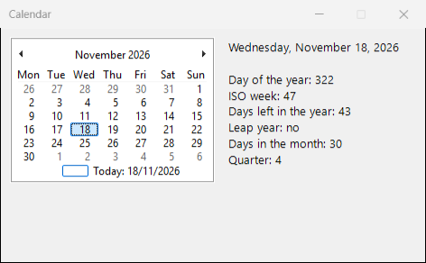
Calendar
Calendar with date facts - MonthCalendar and the .NET date classes (a port of ring/applications/calendar)
cd samples/UsingDotNet/applications/Calendar then ring main.ringSource code
# Calendar with date facts - MonthCalendar and the .NET date classes (a port of ring/applications/calendar)
load "dotnet.ring"
using {
"System"
"System.Globalization"
"System.Drawing"
"System.Windows.Forms"
}
oForm = uiForm("Calendar",470,260)
oForm {
FormBorderStyle = "FixedDialog"
MaximizeBox = False
}
oCalendar = new MonthCalendar() {
Location = new Point(10,10)
MaxSelectionCount = 1
setDateChangedEvent("showFacts()")
}
oForm.Controls.Add(oCalendar)
oFacts = uiLabel(oForm,"",250,12,210,230)
oFacts.Font = uiFont("Segoe UI",10,false)
showFacts()
uiTest(oForm,"selfTest()")
uiRun(oForm)
uiEnd()
# --------------------------------------------------------------------------
func factsOf oDate
oCulture = new CultureInfo("en-US")
nYear = oDate.Year
oEndOfYear = new DateTime(nYear,12,31)
cText = oDate.Format([ :format = "dddd, MMMM d, yyyy", :provider = oCulture ]) + nl + nl
cText += "Day of the year: " + oDate.DayOfYear + nl
cText += "ISO week: " + new ISOWeek().GetWeekOfYear(oDate) + nl
cText += "Days left in the year: " + floor(oEndOfYear.Subtract(oDate).TotalDays) + nl
if dnStatic("System.DateTime","IsLeapYear",[nYear])
cText += "Leap year: yes" + nl
else
cText += "Leap year: no" + nl
ok
cText += "Days in the month: " + dnStatic("System.DateTime","DaysInMonth",[nYear,oDate.Month]) + nl
cText += "Quarter: " + (floor((oDate.Month - 1) / 3) + 1)
return cText
func showFacts
oFacts.Text = factsOf(oCalendar.SelectionStart)
func selfTest
oCalendar.SetDate(new DateTime(2024,2,29))
dnAssert("selected year",oCalendar.SelectionStart.Year,2024)
dnAssert("event updated the facts",substr(oFacts.Text,"Thursday, February 29, 2024") > 0,True)
dnAssert("day of year",substr(oFacts.Text,"Day of the year: 60") > 0,True)
dnAssert("leap year",substr(oFacts.Text,"Leap year: yes") > 0,True)
dnAssert("days in month",substr(oFacts.Text,"Days in the month: 29") > 0,True)
dnAssert("days left",substr(oFacts.Text,"Days left in the year: 306") > 0,True)
oCalendar.SetDate(new DateTime(2023,7,4))
dnAssert("not a leap year",substr(oFacts.Text,"Leap year: no") > 0,True)
dnAssert("quarter 3",substr(oFacts.Text,"Quarter: 3") > 0,True)
dnAssert("weekday",substr(oFacts.Text,"Tuesday") > 0,True)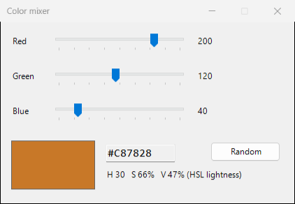
Color Mixer
Color mixer - three track bars, the color, its #RRGGBB code and HSV values
cd samples/UsingDotNet/applications/ColorMixer then ring main.ringSource code
# Color mixer - three track bars, the color, its #RRGGBB code and HSV values
load "dotnet.ring"
using {
"System.Drawing"
"System.Windows.Forms"
}
aBars = []
aValues = []
oForm = uiForm("Color mixer",420,260)
oForm {
FormBorderStyle = "FixedDialog"
MaximizeBox = False
}
nY = 15
for cName in ["Red","Green","Blue"]
uiLabel(oForm,cName,15,nY + 4,50,22)
oBar = new TrackBar() {
Location = new Point(70,nY)
Size = new Size(200,40)
Minimum = 0
Maximum = 255
TickFrequency = 32
setScrollEvent("mix()")
setValueChangedEvent("mix()")
}
oForm.Controls.Add(oBar)
aBars + oBar
aValues + uiLabel(oForm,"0",280,nY + 4,40,22)
nY += 50
next
oSwatch = uiPanel(oForm,15,170,120,70)
oSwatch.BorderStyle = "FixedSingle"
oHex = uiTextBox(oForm,150,175,100,26)
oHex {
ReadOnly = True
Font = uiFont("Consolas",12,false)
}
oHsv = uiLabel(oForm,"",150,210,250,24)
uiButton(oForm,"Random",300,172,100,28,"randomColor()")
aBars[1].Value = 200
aBars[2].Value = 120
aBars[3].Value = 40
uiTest(oForm,"selfTest()")
uiRun(oForm)
uiEnd()
# --------------------------------------------------------------------------
func hex2 nValue
cText = upper(hex(nValue))
if len(cText) < 2
cText = "0" + cText
ok
return cText
func mix
nRed = aBars[1].Value
nGreen = aBars[2].Value
nBlue = aBars[3].Value
for nIndex = 1 to 3
aValues[nIndex].Text = "" + aBars[nIndex].Value
next
oColor = uiRGB(nRed,nGreen,nBlue)
oSwatch.BackColor = oColor
oHex.Text = "#" + hex2(nRed) + hex2(nGreen) + hex2(nBlue)
oHsv.Text = "H " + floor(oColor.GetHue()) + " S " + floor(oColor.GetSaturation() * 100) + "% V " + floor(oColor.GetBrightness() * 100) + "% (HSL lightness)"
func randomColor
for oBar in aBars
oBar.Value = random(255)
next
func selfTest
aBars[1].Value = 255
aBars[2].Value = 0
aBars[3].Value = 0
dnAssert("red hex",oHex.Text,"#FF0000")
dnAssert("swatch color",oSwatch.BackColor.ToArgb(),-65536)
dnAssert("red hue",left(oHsv.Text,3),"H 0")
aBars[1].Value = 0
aBars[2].Value = 128
aBars[3].Value = 255
dnAssert("mixed hex",oHex.Text,"#0080FF")
dnAssert("value label",aValues[2].Text,"128")
aBars[1].Value = 10
aBars[2].Value = 10
aBars[3].Value = 10
dnAssert("dark gray",oHex.Text,"#0A0A0A")
randomColor()
dnAssert("random color has a code",len(oHex.Text),7)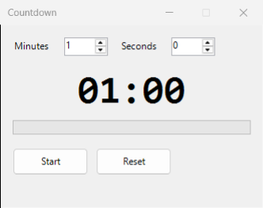
Countdown
Countdown timer with a progress bar (a Windows Forms Timer drives the Ring code)
cd samples/UsingDotNet/applications/Countdown then ring main.ringSource code
# Countdown timer with a progress bar (a Windows Forms Timer drives the Ring code)
load "dotnet.ring"
using {
"System"
"System.Diagnostics"
"System.Threading"
"System.Drawing"
"System.Windows.Forms"
}
nTotal = 0 # seconds when the countdown started
nLeft = 0 # seconds left
lRunning = false
oForm = uiForm("Countdown",330,230)
oForm {
FormBorderStyle = "FixedDialog"
MaximizeBox = False
}
uiLabel(oForm,"Minutes",15,18,60,22)
oMinutes = new NumericUpDown() {
Location = new Point(80,16)
Size = new Size(55,24)
Maximum = 99
Value = 1
}
oForm.Controls.Add(oMinutes)
uiLabel(oForm,"Seconds",150,18,60,22)
oSeconds = new NumericUpDown() {
Location = new Point(215,16)
Size = new Size(55,24)
Maximum = 59
}
oForm.Controls.Add(oSeconds)
oDisplay = uiLabel(oForm,"01:00",15,55,300,60)
oDisplay {
Font = uiFont("Consolas",36,true)
TextAlign = "MiddleCenter"
}
oBar = new ProgressBar() {
Location = new Point(15,120)
Size = new Size(300,18)
Maximum = 100
}
oForm.Controls.Add(oBar)
oStart = uiButton(oForm,"Start",15,155,95,34,"startStop()")
uiButton(oForm,"Reset",120,155,95,34,"resetTimer()")
oTimer = uiTimer(1000,"tick()")
uiTest(oForm,"selfTest()")
uiRun(oForm)
uiEnd()
# --------------------------------------------------------------------------
func twoDigits n
cText = "" + floor(n)
if len(cText) < 2
cText = "0" + cText
ok
return cText
func showTime
oDisplay.Text = twoDigits(floor(nLeft / 60)) + ":" + twoDigits(nLeft % 60)
if nTotal > 0
oBar.Value = floor((nTotal - nLeft) * 100 / nTotal)
else
oBar.Value = 0
ok
func startStop
if lRunning
lRunning = false
oTimer.Stop()
oStart.Text = "Start"
else
if nLeft = 0
nTotal = number(oMinutes.Value) * 60 + number(oSeconds.Value)
nLeft = nTotal
ok
if nLeft > 0
lRunning = true
oTimer.Start()
oStart.Text = "Pause"
ok
ok
showTime()
func resetTimer
lRunning = false
oTimer.Stop()
oStart.Text = "Start"
nTotal = number(oMinutes.Value) * 60 + number(oSeconds.Value)
nLeft = nTotal
showTime()
func tick
if nLeft > 0
nLeft--
ok
showTime()
if nLeft = 0
lRunning = false
oTimer.Stop()
oStart.Text = "Start"
uiMessage("Time is up!","Countdown")
ok
func waitMs nMilliseconds
oClock = new Stopwatch()
oClock.Start()
while oClock.ElapsedMilliseconds < nMilliseconds
new Application().DoEvents()
new Thread().Sleep(5)
end
func selfTest
oMinutes.Value = 0
oSeconds.Value = 3
resetTimer()
dnAssert("display",oDisplay.Text,"00:03")
tick()
dnAssert("one second passed",oDisplay.Text,"00:02")
dnAssert("progress",oBar.Value,33)
tick()
tick()
dnAssert("finished",oDisplay.Text,"00:00")
dnAssert("full bar",oBar.Value,100)
dnAssert("stopped",lRunning,0)
# the real timer ticks once a second
oSeconds.Value = 5
resetTimer()
oStart.PerformClick()
dnAssert("button says Pause",oStart.Text,"Pause")
waitMs(2200)
oStart.PerformClick()
dnAssert("two ticks happened",nLeft <= 3 and nLeft >= 2,True)
resetTimer()
dnAssert("reset",oDisplay.Text,"00:05")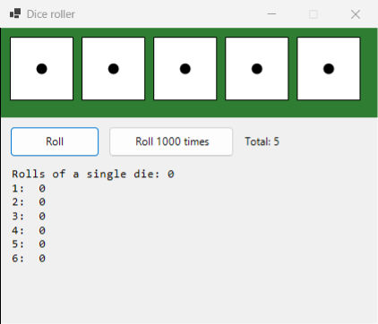
Dice Roller
Dice roller - draws five dice with their pips and keeps statistics
cd samples/UsingDotNet/applications/DiceRoller then ring main.ringSource code
# Dice roller - draws five dice with their pips and keeps statistics
load "dotnet.ring"
using {
"System.Drawing"
"System.Windows.Forms"
}
C_DICE = 5
aDice = [1,1,1,1,1]
aCounts = list(6)
nRolls = 0
oForm = uiForm("Dice roller",420,330)
oForm {
FormBorderStyle = "FixedSingle"
MaximizeBox = False
}
oPicture = uiPictureBox(oForm,0,0,420,100)
oCanvas = new UiCanvas(oPicture)
uiButton(oForm,"Roll",10,110,100,34,"rollAll()")
uiButton(oForm,"Roll 1000 times",120,110,140,34,"rollMany(1000)")
oTotal = uiLabel(oForm,"",270,118,140,24)
oStats = uiLabel(oForm,"",10,155,400,150)
oStats.Font = uiFont("Consolas",10,false)
draw()
uiTest(oForm,"selfTest()")
uiRun(oForm)
uiEnd()
# --------------------------------------------------------------------------
# the pips of a die face: positions in a 3x3 grid
func pips nFace
switch nFace
on 1 return [5]
on 2 return [1,9]
on 3 return [1,5,9]
on 4 return [1,3,7,9]
on 5 return [1,3,5,7,9]
on 6 return [1,3,4,6,7,9]
off
func drawDie nIndex, nFace
nX = 10 + (nIndex - 1) * 80
oCanvas.fillRect(nX,10,70,70,"White")
oCanvas.drawRect(nX,10,70,70,"Black")
for nPip in pips(nFace)
nRow = floor((nPip - 1) / 3)
nCol = (nPip - 1) % 3
oCanvas.fillCircle(nX + 15 + nCol * 20,25 + nRow * 20,6,"Black")
next
func draw
oCanvas.clear("#2e7d32")
for nIndex = 1 to C_DICE
drawDie(nIndex,aDice[nIndex])
next
nSum = 0
for nFace in aDice
nSum += nFace
next
oTotal.Text = "Total: " + nSum
cText = "Rolls of a single die: " + nRolls + nl
for nFace = 1 to 6
nBar = 0
if nRolls > 0
nBar = floor(aCounts[nFace] * 30 / nRolls)
ok
cText += string(nFace) + ": " + copy("#",nBar) + " " + aCounts[nFace] + nl
next
oStats.Text = cText
oCanvas.show()
func rollAll
for nIndex = 1 to C_DICE
aDice[nIndex] = random(5) + 1
aCounts[aDice[nIndex]]++
nRolls++
next
draw()
func rollMany nTimes
for nTime = 1 to nTimes
nFace = random(5) + 1
aCounts[nFace]++
nRolls++
next
draw()
func selfTest
aDice = [1,2,3,4,6]
draw()
dnAssert("total",oTotal.Text,"Total: 16")
dnAssert("the 1 has a center pip",oCanvas.pixel(10 + 35,25 + 20),"ff000000")
dnAssert("the 1 has no corner pip",oCanvas.pixel(10 + 15,25),"ffffffff")
dnAssert("the 6 has a pip in the middle row",oCanvas.pixel(10 + 4 * 80 + 15,25 + 20),"ff000000")
dnAssert("pip counts",len(pips(1)) + len(pips(2)) + len(pips(3)) + len(pips(4)) + len(pips(5)) + len(pips(6)),21)
rollAll()
dnAssert("5 rolls counted",nRolls,5)
rollMany(1000)
dnAssert("1005 rolls",nRolls,1005)
nSum = 0
for nCount in aCounts
nSum += nCount
next
dnAssert("statistics add up",nSum,1005)
dnAssert("each face came up",aCounts[1] > 80 and aCounts[6] > 80,True)
lValid = true
for nFace in aDice
if nFace < 1 or nFace > 6
lValid = false
ok
next
dnAssert("dice are between 1 and 6",lValid,1)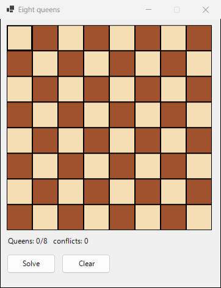
Eight Queens
Eight queens - place 8 queens so that none attacks another (a port of ring/applications/eightqueens) Click a square to put or remove a queen; "Solve" finds a solution with backtracking.
cd samples/UsingDotNet/applications/EightQueens then ring main.ringSource code
# Eight queens - place 8 queens so that none attacks another (a port of ring/applications/eightqueens)
# Click a square to put or remove a queen; "Solve" finds a solution with backtracking.
load "dotnet.ring"
using {
"System.Drawing"
"System.Windows.Forms"
}
C_SIZE = 8
aQueens = list(C_SIZE) # aQueens[column] = the row of the queen of that column (0 = none)
aSquares = []
oForm = uiForm("Eight queens",360,440)
oForm {
FormBorderStyle = "FixedSingle"
MaximizeBox = False
}
for nCell = 1 to C_SIZE * C_SIZE
nRow = floor((nCell - 1) / C_SIZE) + 1
nColumn = (nCell - 1) % C_SIZE + 1
oSquare = uiButton(oForm,"",10 + (nColumn - 1) * 42,10 + (nRow - 1) * 42,42,42,"toggle(" + nRow + "," + nColumn + ")")
oSquare {
FlatStyle = "Flat"
Font = uiFont("Segoe UI",18,true)
}
aSquares + oSquare
next
oInfo = uiLabel(oForm,"",10,355,340,24)
uiButton(oForm,"Solve",10,385,80,32,"solveIt()")
uiButton(oForm,"Clear",100,385,80,32,"clearBoard()")
oCount = uiLabel(oForm,"",190,392,160,22)
showBoard()
uiTest(oForm,"selfTest()")
uiRun(oForm)
uiEnd()
# --------------------------------------------------------------------------
func squareOf nRow, nColumn
return (nRow - 1) * C_SIZE + nColumn
# do two queens (row, column) attack each other
func attacks nRow1, nColumn1, nRow2, nColumn2
if nRow1 = nRow2 or nColumn1 = nColumn2
return true
ok
return fabs(nRow1 - nRow2) = fabs(nColumn1 - nColumn2)
# the columns whose queen is attacked by another queen
func conflicts
aBad = list(C_SIZE)
for nA = 1 to C_SIZE
for nB = nA + 1 to C_SIZE
if aQueens[nA] > 0 and aQueens[nB] > 0 and attacks(aQueens[nA],nA,aQueens[nB],nB)
aBad[nA] = 1
aBad[nB] = 1
ok
next
next
return aBad
func showBoard
aBad = conflicts()
nPlaced = 0
for nRow = 1 to C_SIZE
for nColumn = 1 to C_SIZE
oSquare = aSquares[squareOf(nRow,nColumn)]
if (nRow + nColumn) % 2 = 0
oSquare.BackColor = uiColor("Wheat")
else
oSquare.BackColor = uiColor("Sienna")
ok
if aQueens[nColumn] = nRow
oSquare.Text = "Q"
nPlaced++
if aBad[nColumn]
oSquare.ForeColor = uiColor("Red")
else
oSquare.ForeColor = uiColor("DarkGreen")
ok
else
oSquare.Text = ""
ok
next
next
nBad = 0
for nValue in aBad
nBad += nValue
next
if nPlaced = C_SIZE and nBad = 0
oInfo.Text = "Solved!"
else
oInfo.Text = "Queens: " + nPlaced + "/8 conflicts: " + nBad
ok
func toggle nRow, nColumn
if aQueens[nColumn] = nRow
aQueens[nColumn] = 0
else
aQueens[nColumn] = nRow
ok
showBoard()
func clearBoard
aQueens = list(C_SIZE)
showBoard()
# the number of ways to complete the board from column nColumn (backtracking)
func countSolutions nColumn, aPlaced
if nColumn > C_SIZE
return 1
ok
nTotal = 0
for nRow = 1 to C_SIZE
lSafe = true
for nBefore = 1 to nColumn - 1
if attacks(aPlaced[nBefore],nBefore,nRow,nColumn)
lSafe = false
exit
ok
next
if lSafe
aPlaced[nColumn] = nRow
nTotal += countSolutions(nColumn + 1,aPlaced)
aPlaced[nColumn] = 0
ok
next
return nTotal
func solveIt
aQueens = firstSolution()
showBoard()
oCount.Text = "92 solutions exist"
# a solution found by backtracking
func firstSolution
aResult = list(C_SIZE)
findOne(1,aResult)
return aResult
func findOne nColumn, aPlaced
if nColumn > C_SIZE
return true
ok
for nRow = 1 to C_SIZE
lSafe = true
for nBefore = 1 to nColumn - 1
if attacks(aPlaced[nBefore],nBefore,nRow,nColumn)
lSafe = false
exit
ok
next
if lSafe
aPlaced[nColumn] = nRow
if findOne(nColumn + 1,aPlaced)
return true
ok
aPlaced[nColumn] = 0
ok
next
return false
func selfTest
toggle(1,1)
toggle(2,2)
dnAssert("diagonal conflict",oInfo.Text,"Queens: 2/8 conflicts: 2")
dnAssert("conflicting queens are red",aSquares[squareOf(1,1)].ForeColor.Name,"Red")
toggle(2,2)
dnAssert("one queen is fine",oInfo.Text,"Queens: 1/8 conflicts: 0")
toggle(1,1)
dnAssert("queen removed",oInfo.Text,"Queens: 0/8 conflicts: 0")
solveIt()
dnAssert("solver finds a full solution",oInfo.Text,"Solved!")
dnAssert("a queen in every column",aSquares[squareOf(aQueens[1],1)].Text,"Q")
dnAssert("the number of solutions of the 8 queens problem",countSolutions(1,list(C_SIZE)),92)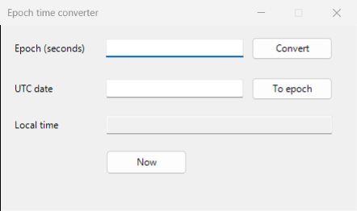
Epoch Time
Epoch (Unix) time converter - both directions, UTC and local time (a port of ring/applications/epochtime)
cd samples/UsingDotNet/applications/EpochTime then ring main.ringSource code
# Epoch (Unix) time converter - both directions, UTC and local time (a port of ring/applications/epochtime)
load "dotnet.ring"
using {
"System"
"System.Globalization"
"System.Drawing"
"System.Windows.Forms"
}
C_FORMAT = "yyyy-MM-dd HH:mm:ss"
oForm = uiForm("Epoch time converter",440,230)
oForm {
FormBorderStyle = "FixedDialog"
MaximizeBox = False
}
uiLabel(oForm,"Epoch (seconds)",15,20,110,24)
oEpoch = uiTextBox(oForm,130,17,170,26)
uiButton(oForm,"Convert",310,15,100,28,"epochToDate()")
uiLabel(oForm,"UTC date",15,70,110,24)
oUtc = uiTextBox(oForm,130,67,170,26)
uiButton(oForm,"To epoch",310,65,100,28,"dateToEpoch()")
uiLabel(oForm,"Local time",15,115,110,24)
oLocal = uiTextBox(oForm,130,112,280,26)
oLocal.ReadOnly = True
uiButton(oForm,"Now",130,155,100,30,"showNow()")
oMessage = uiLabel(oForm,"",15,195,410,24)
oMessage.ForeColor = uiColor("Firebrick")
uiTest(oForm,"selfTest()")
uiRun(oForm)
uiEnd()
# --------------------------------------------------------------------------
# the epoch (seconds) of a UTC date text, raises an error for invalid text
func epochOf cDateText
oDate = new DateTimeOffset().Parse([ :input = cDateText, :formatProvider = new CultureInfo("en-US").InvariantCulture, :styles = "AssumeUniversal" ])
return oDate.ToUnixTimeSeconds()
func dateOf nEpoch
return new DateTimeOffset().FromUnixTimeSeconds(nEpoch)
func epochToDate
oMessage.Text = ""
try
oDate = dateOf(number(oEpoch.Text))
oUtc.Text = oDate.UtcDateTime.Format(C_FORMAT)
oLocal.Text = oDate.LocalDateTime.Format(C_FORMAT)
catch
oMessage.Text = "Invalid epoch value"
done
func dateToEpoch
oMessage.Text = ""
try
nEpoch = epochOf(oUtc.Text)
oEpoch.Text = "" + floor(nEpoch)
epochToDate()
catch
oMessage.Text = "Invalid date (use yyyy-MM-dd HH:mm:ss)"
done
func showNow
# (creating an object while an attribute is being assigned would confuse Ring's setter: use a variable)
nNow = new DateTimeOffset().UtcNow.ToUnixTimeSeconds()
oEpoch.Text = "" + floor(nNow)
epochToDate()
func selfTest
oEpoch.Text = "0"
epochToDate()
dnAssert("epoch 0",oUtc.Text,"1970-01-01 00:00:00")
oEpoch.Text = "1700000000"
epochToDate()
dnAssert("known epoch",oUtc.Text,"2023-11-14 22:13:20")
dnAssert("local time is filled",len(oLocal.Text),19)
oUtc.Text = "2000-01-01 00:00:00"
dateToEpoch()
dnAssert("date to epoch",oEpoch.Text,"946684800")
oUtc.Text = "not a date"
dateToEpoch()
dnAssert("invalid date message",left(oMessage.Text,12),"Invalid date")
oEpoch.Text = "abc"
epochToDate()
dnAssert("invalid epoch message",oMessage.Text,"Invalid epoch value")
showNow()
dnAssert("now is after 2024",number(oEpoch.Text) > 1704067200,True)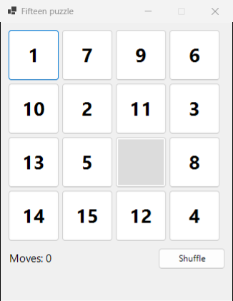
Fifteen Puzzle
Fifteen puzzle (sliding tiles) - a port of ring/applications/fifteenpuzzle to RingDotNet
cd samples/UsingDotNet/applications/FifteenPuzzle then ring main.ringSource code
# Fifteen puzzle (sliding tiles) - a port of ring/applications/fifteenpuzzle to RingDotNet
load "dotnet.ring"
using {
"System.Drawing"
"System.Windows.Forms"
}
C_SIZE = 4
aTiles = [] # aTiles[cell] = tile number (0 = the empty cell)
aCells = [] # the buttons
nMoves = 0
oForm = uiForm("Fifteen puzzle",324,390)
oForm {
FormBorderStyle = "FixedSingle"
MaximizeBox = False
}
for nCell = 1 to C_SIZE * C_SIZE
nRow = floor((nCell - 1) / C_SIZE)
nCol = (nCell - 1) % C_SIZE
oCell = uiButton(oForm,"",10 + nCol * 75,10 + nRow * 75,72,72,"clickCell(" + nCell + ")")
oCell.Font = uiFont("Segoe UI",20,true)
aCells + oCell
aTiles + (nCell % (C_SIZE * C_SIZE))
next
oMoves = uiLabel(oForm,"Moves: 0",10,320,150,24)
oMoves.Font = uiFont("Segoe UI",11,false)
uiButton(oForm,"Shuffle",220,316,94,30,"shuffleBoard()")
oMessage = uiLabel(oForm,"",10,350,300,24)
shuffleBoard()
uiTest(oForm,"selfTest()")
uiRun(oForm)
uiEnd()
# --------------------------------------------------------------------------
func showBoard
for nCell = 1 to len(aTiles)
if aTiles[nCell] = 0
aCells[nCell].Text = ""
aCells[nCell].BackColor = uiColor("Gainsboro")
else
aCells[nCell].Text = "" + aTiles[nCell]
aCells[nCell].BackColor = uiColor("White")
ok
next
oMoves.Text = "Moves: " + nMoves
func emptyCell
return find(aTiles,0)
# cells that touch the cell
func neighbours nCell
aList = []
nRow = floor((nCell - 1) / C_SIZE)
nCol = (nCell - 1) % C_SIZE
if nRow > 0 aList + (nCell - C_SIZE) ok
if nRow < C_SIZE - 1 aList + (nCell + C_SIZE) ok
if nCol > 0 aList + (nCell - 1) ok
if nCol < C_SIZE - 1 aList + (nCell + 1) ok
return aList
func slideTile nCell
nEmpty = emptyCell()
if find(neighbours(nEmpty),nCell) > 0
aTiles[nEmpty] = aTiles[nCell]
aTiles[nCell] = 0
return true
ok
return false
func clickCell nCell
if slideTile(nCell)
nMoves++
showBoard()
if isSolved()
oMessage.Text = "Solved in " + nMoves + " moves!"
ok
ok
func isSolved
for nCell = 1 to len(aTiles) - 1
if aTiles[nCell] != nCell
return false
ok
next
return true
# shuffle with legal moves only, so the puzzle is always solvable
func shuffleBoard
for nCell = 1 to len(aTiles)
aTiles[nCell] = nCell % len(aTiles)
next
for nStep = 1 to 200
aNear = neighbours(emptyCell())
slideTile(aNear[random(len(aNear) - 1) + 1])
next
nMoves = 0
oMessage.Text = ""
showBoard()
func selfTest
# a position one move from solved
for nCell = 1 to 15
aTiles[nCell] = nCell
next
aTiles[16] = 0
aTiles[15] = 0
aTiles[16] = 15
nMoves = 0
showBoard()
dnAssert("not solved",isSolved(),0)
dnAssert("tile text",aCells[16].Text,"15")
dnAssert("neighbours of a corner",len(neighbours(1)),2)
dnAssert("neighbours of the middle",len(neighbours(6)),4)
aCells[16].PerformClick()
dnAssert("tile did not move (it is not next to the empty cell... it is)",aTiles[15],15)
dnAssert("solved after the move",isSolved(),1)
dnAssert("counted the move",nMoves,1)
dnAssert("message",left(oMessage.Text,6),"Solved")
aCells[1].PerformClick()
dnAssert("far tile does not move",nMoves,1)
# shuffling keeps the puzzle solvable and the tiles complete
shuffleBoard()
nTotal = 0
for nTile in aTiles
nTotal += nTile
next
dnAssert("all tiles present",nTotal,120)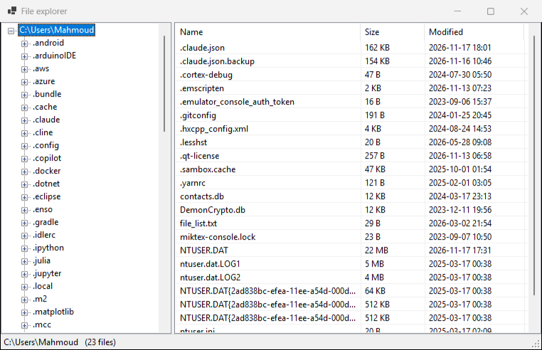
File Explorer
File explorer - a folder tree on the left, the files of the selected folder on the right
cd samples/UsingDotNet/applications/FileExplorer then ring main.ringSource code
# File explorer - a folder tree on the left, the files of the selected folder on the right
load "dotnet.ring"
using {
"System"
"System.IO"
"System.Drawing"
"System.Windows.Forms"
}
cRoot = ""
oForm = uiForm("File explorer",760,460)
oSplit = new SplitContainer()
oSplit.Dock = "Fill"
oForm.Controls.Add(oSplit)
oSplit.SplitterDistance = 240
oTree = new TreeView()
oTree.Dock = "Fill"
oSplit.Panel1.Controls.Add(oTree)
oList = new ListView() {
Dock = "Fill"
View = "Details"
FullRowSelect = True
GridLines = True
}
oList.Columns.Add([ :text = "Name", :width = 260 ])
oList.Columns.Add([ :text = "Size", :width = 90 ])
oList.Columns.Add([ :text = "Modified", :width = 140 ])
oSplit.Panel2.Controls.Add(oList)
oStatus = new StatusStrip()
oStatusText = new ToolStripStatusLabel()
oStatus.Items.Add(oStatusText)
oForm.Controls.Add(oStatus)
oTree {
setAfterSelectEvent("showFolder()")
setBeforeExpandEvent("expandNode(aDotNetArgs[2].Node)")
}
if not uiSelfTest()
setRoot(new Environment().GetFolderPath("UserProfile"))
ok
uiTest(oForm,"selfTest()")
uiRun(oForm)
uiEnd()
# --------------------------------------------------------------------------
# the tree starts at a folder; its sub folders are loaded when a node is expanded
func setRoot cFolder
cRoot = cFolder
oTree.Nodes.Clear()
oNode = oTree.Nodes.Add(cFolder)
oNode.Tag = cFolder
addChildren(oNode)
oNode.Expand()
func addChildren oNode
oNode.Nodes.Clear()
try
for cFolder in new Directory().GetDirectories(oNode.Tag).toList()
oChild = oNode.Nodes.Add(new Path().GetFileName(cFolder))
oChild.Tag = cFolder
# a placeholder child makes the "+" visible
oChild.Nodes.Add("...")
next
catch
# folders without access are shown empty
done
func expandNode oNode
if oNode.Nodes.Count = 1 and oNode.Nodes.Item(0).Text = "..."
addChildren(oNode)
ok
func sizeText nBytes
if nBytes < 1024
return "" + nBytes + " B"
but nBytes < 1024 * 1024
return "" + floor(nBytes / 1024) + " KB"
ok
return "" + floor(nBytes / 1048576) + " MB"
func showFolder
oList.Items.Clear()
if not isobject(oTree.SelectedNode)
return
ok
cFolder = oTree.SelectedNode.Tag
nFiles = 0
try
for cFile in new Directory().GetFiles(cFolder).toList()
oInfo = new FileInfo(cFile)
oItem = dnNew("ListViewItem",[ :text = oInfo.Name ])
oItem.SubItems.Add(sizeText(oInfo.Length))
oItem.SubItems.Add(oInfo.LastWriteTime.Format("yyyy-MM-dd HH:mm"))
oList.Items.Add(oItem)
nFiles++
next
catch
oStatusText.Text = "Can't read " + cFolder
return
done
oStatusText.Text = cFolder + " (" + nFiles + " files)"
func selfTest
# a small folder tree in the temp folder
oPath = new Path()
cBase = oPath.Combine([oPath.GetTempPath(),"explorer_selftest"])
if new Directory().Exists(cBase)
new Directory().Delete([ :path = cBase, :recursive = True ])
ok
new Directory().CreateDirectory(oPath.Combine([cBase,"docs"]))
new Directory().CreateDirectory(oPath.Combine([cBase,"images/icons"]))
new File().WriteAllText([ :path = oPath.Combine([cBase,"readme.txt"]), :contents = "hello" ])
new File().WriteAllText([ :path = oPath.Combine([cBase,"docs/manual.txt"]), :contents = copy("x",2048) ])
setRoot(cBase)
dnAssert("root node",oTree.Nodes.Count,1)
dnAssert("two sub folders",oTree.Nodes.Item(0).Nodes.Count,2)
oTree.SelectedNode = oTree.Nodes.Item(0)
dnAssert("files of the root",oList.Items.Count,1)
dnAssert("file name",oList.Items.Item(0).Text,"readme.txt")
dnAssert("size text",oList.Items.Item(0).SubItems.Item(1).Text,"5 B")
oDocs = oTree.Nodes.Item(0).Nodes.Item(0)
oTree.SelectedNode = oDocs
dnAssert("the docs folder",oList.Items.Item(0).Text,"manual.txt")
dnAssert("2 KB file",oList.Items.Item(0).SubItems.Item(1).Text,"2 KB")
oImages = oTree.Nodes.Item(0).Nodes.Item(1)
dnAssert("placeholder child",oImages.Nodes.Item(0).Text,"...")
expandNode(oImages)
dnAssert("sub folder loaded on expand",oImages.Nodes.Item(0).Text,"icons")
dnAssert("status text",right(oStatusText.Text,9),"(1 files)")
dnAssert("sizes",sizeText(3 * 1048576),"3 MB")
new Directory().Delete([ :path = cBase, :recursive = True ])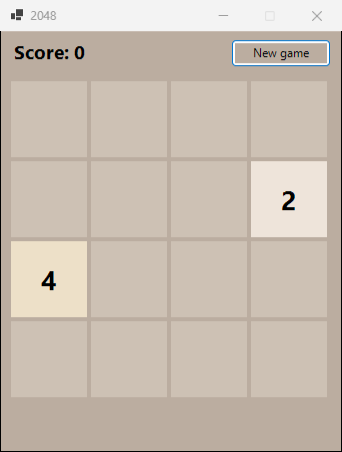
Game2048
2048 - use the arrow keys (a port of ring/applications/game2048 to RingDotNet)
cd samples/UsingDotNet/applications/Game2048 then ring main.ringSource code
# 2048 - use the arrow keys (a port of ring/applications/game2048 to RingDotNet)
load "dotnet.ring"
using {
"System.Drawing"
"System.Windows.Forms"
}
C_SIZE = 4
aBoard = list(C_SIZE * C_SIZE) # 0 = empty
aTileLabels = []
nScore = 0
lGameOver = false
oForm = uiForm("2048",340,420)
oForm {
KeyPreview = True
FormBorderStyle = "FixedSingle"
MaximizeBox = False
BackColor = uiRGB(187,173,160)
}
oScore = uiLabel(oForm,"Score: 0",10,8,200,28)
oScore {
Font = uiFont("Segoe UI",14,true)
BackColor = uiRGB(187,173,160)
}
oNewGame = uiButton(oForm,"New game",230,8,100,28,"newGame()")
for nCell = 1 to C_SIZE * C_SIZE
nRow = floor((nCell - 1) / C_SIZE)
nCol = (nCell - 1) % C_SIZE
oTile = uiLabel(oForm,"",10 + nCol * 80,50 + nRow * 80,76,76)
oTile {
TextAlign = "MiddleCenter"
Font = uiFont("Segoe UI",20,true)
}
aTileLabels + oTile
next
uiGameKeys(oForm,"keyPressed(aDotNetArgs[2].KeyCode)")
newGame()
uiTest(oForm,"selfTest()")
uiRun(oForm)
uiEnd()
# --------------------------------------------------------------------------
func tileColor nValue
switch nValue
on 0 return uiRGB(205,193,180)
on 2 return uiRGB(238,228,218)
on 4 return uiRGB(237,224,200)
on 8 return uiRGB(242,177,121)
on 16 return uiRGB(245,149,99)
on 32 return uiRGB(246,124,95)
on 64 return uiRGB(246,94,59)
on 128 return uiRGB(237,207,114)
on 256 return uiRGB(237,204,97)
on 512 return uiRGB(237,200,80)
other return uiRGB(237,194,46)
off
func showBoard
for nCell = 1 to len(aBoard)
if aBoard[nCell] = 0
aTileLabels[nCell].Text = ""
else
aTileLabels[nCell].Text = "" + aBoard[nCell]
ok
aTileLabels[nCell].BackColor = tileColor(aBoard[nCell])
next
oScore.Text = "Score: " + nScore
# slide one line to the left: [new line, points gained]
func slideLine aLine
aKept = []
for nValue in aLine
if nValue != 0
aKept + nValue
ok
next
aOut = []
nGained = 0
nIndex = 1
while nIndex <= len(aKept)
if nIndex < len(aKept) and aKept[nIndex] = aKept[nIndex + 1]
aOut + (aKept[nIndex] * 2)
nGained += aKept[nIndex] * 2
nIndex += 2
else
aOut + aKept[nIndex]
nIndex++
ok
end
while len(aOut) < len(aLine)
aOut + 0
end
return [aOut,nGained]
# move the whole board: "Left" "Right" "Up" "Down"; true when something moved
func moveBoard cDirection
lMoved = false
for nLine = 1 to C_SIZE
aLine = []
for nStep = 1 to C_SIZE
aLine + aBoard[cellIndex(nLine,nStep,cDirection)]
next
aResult = slideLine(aLine)
for nStep = 1 to C_SIZE
nIndex = cellIndex(nLine,nStep,cDirection)
if aBoard[nIndex] != aResult[1][nStep]
lMoved = true
aBoard[nIndex] = aResult[1][nStep]
ok
next
nScore += aResult[2]
next
return lMoved
# the cell that is the nStep-th of line nLine when sliding in cDirection (nStep 1 = the cell the tiles slide to)
func cellIndex nLine, nStep, cDirection
switch cDirection
on "Left"
return (nLine - 1) * C_SIZE + nStep
on "Right"
return (nLine - 1) * C_SIZE + (C_SIZE + 1 - nStep)
on "Up"
return (nStep - 1) * C_SIZE + nLine
on "Down"
return (C_SIZE - nStep) * C_SIZE + nLine
off
func addRandomTile
aFree = []
for nCell = 1 to len(aBoard)
if aBoard[nCell] = 0
aFree + nCell
ok
next
if len(aFree) > 0
if random(9) = 0
aBoard[aFree[random(len(aFree) - 1) + 1]] = 4
else
aBoard[aFree[random(len(aFree) - 1) + 1]] = 2
ok
ok
func canMove
for cDirection in ["Left","Right","Up","Down"]
aSaved = aBoard
nSavedScore = nScore
lPossible = moveBoard(cDirection)
aBoard = aSaved
nScore = nSavedScore
if lPossible
return true
ok
next
return false
func keyPressed cKey
if lGameOver or find(["Left","Right","Up","Down"],cKey) = 0
return
ok
if moveBoard(cKey)
addRandomTile()
if not canMove()
lGameOver = true
uiMessage("Game over! Score: " + nScore,"2048")
ok
ok
showBoard()
func newGame
aBoard = list(C_SIZE * C_SIZE)
nScore = 0
lGameOver = false
addRandomTile()
addRandomTile()
showBoard()
func selfTest
aResult = slideLine([2,2,4,0])
dnAssert("slide merges",list2str(aResult[1]),list2str([4,4,0,0]))
dnAssert("slide score",aResult[2],4)
dnAssert("slide does not merge twice",list2str(slideLine([2,2,2,2])[1]),list2str([4,4,0,0]))
dnAssert("slide gaps",list2str(slideLine([0,2,0,2])[1]),list2str([4,0,0,0]))
aBoard = list(16)
aBoard[1] = 2
aBoard[4] = 2
aBoard[5] = 4
nScore = 0
dnAssert("move left moved",moveBoard("Left"),1)
dnAssert("left merged row 1",aBoard[1],4)
aBoard = list(16)
aBoard[1] = 2
aBoard[2] = 2
nScore = 0
moveBoard("Right")
dnAssert("right slides to the end",aBoard[4],4)
aBoard = list(16)
aBoard[1] = 8
aBoard[5] = 8
moveBoard("Down")
dnAssert("down merges",aBoard[13],16)
moveBoard("Up")
dnAssert("up moves back",aBoard[1],16)
dnAssert("score counts merges",nScore,20)
dnAssert("no move possible when nothing changes",moveBoard("Up"),0)
# keyboard handling goes through the KeyDown event handler
newGame()
nTiles = 0
for nCell in aBoard
if nCell > 0 nTiles++ ok
next
dnAssert("new game starts with two tiles",nTiles,2)
keyPressed("Left")
keyPressed("Up")
dnAssert("game goes on",lGameOver,0)
# real key presses, with the New game button focused (it used to take the arrow keys)
oNewGame.Focus()
aBoard = list(16)
aBoard[1] = 2
aBoard[2] = 2
aBoard[16] = 4
nScore = 0
lGameOver = false
if uiSendKeys(oForm,"{LEFT}")
dnAssert("the left arrow key reaches the game",aBoard[1],4)
aBoard = list(16)
aBoard[1] = 8
aBoard[5] = 8
uiSendKeys(oForm,"{DOWN}")
dnAssert("the down arrow key reaches the game",aBoard[13],16)
aBoard = list(16)
aBoard[13] = 16
uiSendKeys(oForm,"{UP}")
dnAssert("the up arrow key reaches the game",aBoard[1],16)
uiSendKeys(oForm," ")
dnAssert("Space does not press the New game button",nScore > 0,True)
ok
# a full board without equal neighbours is game over
aBoard = [2,4,2,4, 4,2,4,2, 2,4,2,4, 4,2,4,2]
dnAssert("no moves left",canMove(),0)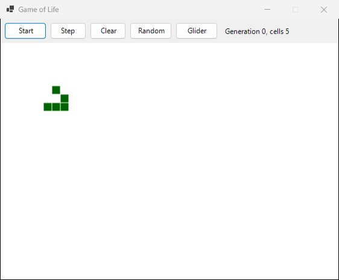
Game Of Life
Conway's Game of Life - click cells to toggle them, Start runs the generations (a port of ring/applications/gameoflife to RingDotNet)
cd samples/UsingDotNet/applications/GameOfLife then ring main.ringSource code
# Conway's Game of Life - click cells to toggle them, Start runs the generations
# (a port of ring/applications/gameoflife to RingDotNet)
load "dotnet.ring"
using {
"System.Drawing"
"System.Windows.Forms"
}
C_COLUMNS = 40
C_ROWS = 28
C_CELL = 14
aCells = list(C_COLUMNS * C_ROWS) # 1 = alive
nGeneration = 0
oForm = uiForm("Game of Life",C_COLUMNS * C_CELL,C_ROWS * C_CELL + 40)
oForm {
FormBorderStyle = "FixedSingle"
MaximizeBox = False
}
oPicture = uiPictureBox(oForm,0,40,C_COLUMNS * C_CELL,C_ROWS * C_CELL)
oCanvas = new UiCanvas(oPicture)
oPicture.setMouseDownEvent("clickCell(aDotNetArgs[2].X,aDotNetArgs[2].Y)")
oRun = uiButton(oForm,"Start",6,6,70,28,"startStop()")
uiButton(oForm,"Step",82,6,60,28,"nextGeneration()")
uiButton(oForm,"Clear",148,6,60,28,"clearAll()")
uiButton(oForm,"Random",214,6,70,28,"randomFill()")
uiButton(oForm,"Glider",290,6,70,28,"glider()")
oInfo = uiLabel(oForm,"",370,12,180,20)
oTimer = uiTimer(120,"nextGeneration()")
glider()
uiTest(oForm,"selfTest()")
uiRun(oForm)
uiEnd()
# --------------------------------------------------------------------------
func cellIndex nColumn, nRow
return nRow * C_COLUMNS + nColumn + 1
func isAlive nColumn, nRow
# the world wraps around
nColumn = (nColumn + C_COLUMNS) % C_COLUMNS
nRow = (nRow + C_ROWS) % C_ROWS
return aCells[cellIndex(nColumn,nRow)]
func countNeighbours nColumn, nRow
nTotal = 0
for nDy = -1 to 1
for nDx = -1 to 1
if nDx != 0 or nDy != 0
nTotal += isAlive(nColumn + nDx,nRow + nDy)
ok
next
next
return nTotal
func nextGeneration
aNext = list(C_COLUMNS * C_ROWS)
for nRow = 0 to C_ROWS - 1
for nColumn = 0 to C_COLUMNS - 1
nNear = countNeighbours(nColumn,nRow)
if aCells[cellIndex(nColumn,nRow)]
aNext[cellIndex(nColumn,nRow)] = (nNear = 2 or nNear = 3)
else
aNext[cellIndex(nColumn,nRow)] = (nNear = 3)
ok
next
next
aCells = aNext
nGeneration++
draw()
func population
nTotal = 0
for nCell in aCells
nTotal += nCell
next
return nTotal
func draw
oCanvas.clear("White")
for nRow = 0 to C_ROWS - 1
for nColumn = 0 to C_COLUMNS - 1
if aCells[cellIndex(nColumn,nRow)]
oCanvas.fillRect(nColumn * C_CELL + 1,nRow * C_CELL + 1,C_CELL - 1,C_CELL - 1,"DarkGreen")
ok
next
next
oInfo.Text = "Generation " + nGeneration + ", cells " + population()
oCanvas.show()
func clickCell nMouseX, nMouseY
nColumn = floor(nMouseX / C_CELL)
nRow = floor(nMouseY / C_CELL)
nIndex = cellIndex(nColumn,nRow)
aCells[nIndex] = not aCells[nIndex]
draw()
func startStop
if oRun.Text = "Start"
oRun.Text = "Stop"
oTimer.Start()
else
oRun.Text = "Start"
oTimer.Stop()
ok
func clearAll
aCells = list(C_COLUMNS * C_ROWS)
nGeneration = 0
draw()
func randomFill
for nCell = 1 to len(aCells)
aCells[nCell] = (random(3) = 0)
next
nGeneration = 0
draw()
func glider
aCells = list(C_COLUMNS * C_ROWS)
for aPoint in [[1,0],[2,1],[0,2],[1,2],[2,2]]
aCells[cellIndex(aPoint[1] + 5,aPoint[2] + 5)] = 1
next
nGeneration = 0
draw()
func selfTest
dnAssert("glider has 5 cells",population(),5)
for nStep = 1 to 4
nextGeneration()
next
dnAssert("still 5 cells after 4 generations",population(),5)
dnAssert("the glider moved by (1,1)",isAlive(7,6) + isAlive(8,7) + isAlive(6,8) + isAlive(7,8) + isAlive(8,8),5)
dnAssert("cell is drawn",oCanvas.pixel(8 * C_CELL + 5,8 * C_CELL + 5),"ff006400")
# a blinker flips between horizontal and vertical
clearAll()
for nColumn = 10 to 12
aCells[cellIndex(nColumn,10)] = 1
next
nextGeneration()
dnAssert("blinker is vertical",isAlive(11,9) + isAlive(11,10) + isAlive(11,11),3)
nextGeneration()
dnAssert("blinker is horizontal again",isAlive(10,10) + isAlive(11,10) + isAlive(12,10),3)
# a click toggles a cell
clearAll()
clickCell(3 * C_CELL + 2,4 * C_CELL + 2)
dnAssert("click makes a cell alive",isAlive(3,4),1)
clickCell(3 * C_CELL + 2,4 * C_CELL + 2)
dnAssert("second click removes it",isAlive(3,4),0)
oRun.PerformClick()
dnAssert("button starts the timer",oRun.Text,"Stop")
oRun.PerformClick()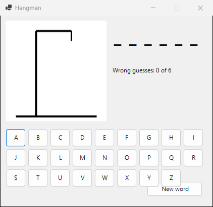
Hangman
Hangman - guess the word letter by letter
cd samples/UsingDotNet/applications/Hangman then ring main.ringSource code
# Hangman - guess the word letter by letter
load "dotnet.ring"
using {
"System.Drawing"
"System.Windows.Forms"
}
aWords = ["RING","PROGRAMMING","LANGUAGE","WINDOWS","FORMS","EXTENSION","CALCULATOR","KEYBOARD","DEVELOPER","FUNCTION"]
cWord = ""
cGuessed = ""
nWrong = 0
C_MAXWRONG = 6
aLetterButtons = []
oForm = uiForm("Hangman",420,380)
oForm {
FormBorderStyle = "FixedSingle"
MaximizeBox = False
}
oPicture = uiPictureBox(oForm,10,10,200,200)
oCanvas = new UiCanvas(oPicture)
oWord = uiLabel(oForm,"",220,30,190,50)
oWord.Font = uiFont("Consolas",20,true)
oInfo = uiLabel(oForm,"",220,100,190,60)
for nLetter = 0 to 25
cLetter = char(65 + nLetter)
oButton = uiButton(oForm,cLetter,10 + (nLetter % 9) * 44,225 + floor(nLetter / 9) * 40,40,36,"letter('" + cLetter + "')")
aLetterButtons + oButton
next
uiButton(oForm,"New word",290,330,110,30,"newGame()")
newGame()
uiTest(oForm,"selfTest()")
uiRun(oForm)
uiEnd()
# --------------------------------------------------------------------------
func newGame
cWord = aWords[random(len(aWords) - 1) + 1]
cGuessed = ""
nWrong = 0
for oButton in aLetterButtons
oButton.Enabled = True
next
showState()
# the word with the unknown letters as underscores
func maskedWord
cMask = ""
for x = 1 to len(cWord)
if substr(cGuessed,cWord[x])
cMask += cWord[x] + " "
else
cMask += "_ "
ok
next
return trim(cMask)
func isWon
return substr(maskedWord(),"_") = 0
func letter cLetter
if substr(cGuessed,cLetter) or nWrong >= C_MAXWRONG or isWon()
return
ok
cGuessed += cLetter
aLetterButtons[ascii(cLetter) - 64].Enabled = False
if not substr(cWord,cLetter)
nWrong++
ok
showState()
func drawGallows
oCanvas.clear("White")
oCanvas.line(20,190,180,190,"Black",4)
oCanvas.line(60,190,60,20,"Black",4)
oCanvas.line(60,20,130,20,"Black",4)
oCanvas.line(130,20,130,40,"Black",3)
if nWrong >= 1 oCanvas.drawCircle(130,52,12,"Black") ok
if nWrong >= 2 oCanvas.line(130,64,130,115,"Black",3) ok
if nWrong >= 3 oCanvas.line(130,75,110,100,"Black",3) ok
if nWrong >= 4 oCanvas.line(130,75,150,100,"Black",3) ok
if nWrong >= 5 oCanvas.line(130,115,112,145,"Black",3) ok
if nWrong >= 6 oCanvas.line(130,115,148,145,"Black",3) ok
oCanvas.show()
func showState
oWord.Text = maskedWord()
if isWon()
oInfo.Text = "You won!"
but nWrong >= C_MAXWRONG
oInfo.Text = "You lost. The word was " + cWord
oWord.Text = cWord
else
oInfo.Text = "Wrong guesses: " + nWrong + " of " + C_MAXWRONG
ok
drawGallows()
func selfTest
cWord = "RING"
cGuessed = ""
nWrong = 0
showState()
dnAssert("masked",oWord.Text,"_ _ _ _")
letter("R")
dnAssert("letter revealed",oWord.Text,"R _ _ _")
letter("Z")
dnAssert("wrong guess counted",nWrong,1)
dnAssert("the button is disabled",aLetterButtons[26].Enabled,False)
dnAssert("no body yet",oCanvas.pixel(130,90),"ffffffff")
letter("Z")
dnAssert("same letter twice is ignored",nWrong,1)
letter("Q")
dnAssert("the body is drawn at the second mistake",oCanvas.pixel(130,90),"ff000000")
letter("I")
letter("N")
letter("G")
dnAssert("won",oInfo.Text,"You won!")
cWord = "RING"
cGuessed = ""
nWrong = 0
for cLetter in ["A","B","C","D","E","F"]
letter(cLetter)
next
dnAssert("lost after 6 wrong guesses",left(oInfo.Text,8),"You lost")
dnAssert("the word is shown",oWord.Text,"RING")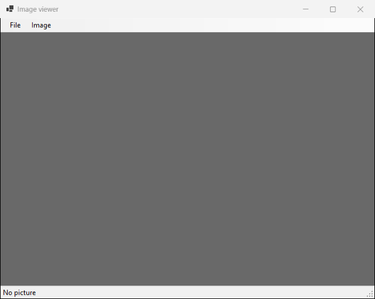
Image Viewer
Image viewer - open a picture, zoom, rotate, flip, grayscale and save (System.Drawing)
cd samples/UsingDotNet/applications/ImageViewer then ring main.ringSource code
# Image viewer - open a picture, zoom, rotate, flip, grayscale and save (System.Drawing)
load "dotnet.ring"
using {
"System"
"System.IO"
"System.Drawing"
"System.Drawing.Imaging"
"System.Windows.Forms"
}
oImage = "" # the picture being shown (a Bitmap)
nZoom = 100
oForm = uiForm("Image viewer",640,480)
uiMenu(oForm,[
["File",[["Open...","openDialog()","Control, O"],["Save As...","saveDialog()","Control, S"],["-",""],["Exit","oForm.Close()"]]],
["Image",[["Rotate right","rotate()"],["Flip horizontal","flip()"],["Grayscale","grayscale()"],["-",""],["Zoom in","zoomBy(25)"],["Zoom out","zoomBy(-25)"],["Actual size","setZoom(100)"]]]
])
oBox = new PictureBox() {
Dock = "Fill"
SizeMode = "Zoom"
BackColor = uiColor("DimGray")
}
oForm.Controls.Add(oBox)
oInfo = new StatusStrip()
oInfoText = new ToolStripStatusLabel()
oInfoText.Text = "No picture"
oInfo.Items.Add(oInfoText)
oForm.Controls.Add(oInfo)
oBox.BringToFront()
uiTest(oForm,"selfTest()")
uiRun(oForm)
uiEnd()
# --------------------------------------------------------------------------
func showImage
if isobject(oImage)
oBox.Image = oImage
oInfoText.Text = "" + oImage.Width + " x " + oImage.Height + " zoom " + nZoom + "%"
ok
func openDialog
cFile = uiOpenFileName("Open picture","Pictures|*.png;*.jpg;*.jpeg;*.bmp;*.gif|All files|*.*")
if cFile != ""
loadFile(cFile)
ok
func loadFile cFile
try
oLoaded = new Bitmap(cFile,0)
catch
uiMessage("Can't open " + cFile + nl + "(is it a picture?)","Image viewer")
return
done
oImage = oLoaded
nZoom = 100
cName = new Path().GetFileName(cFile)
oForm.Text = cName + " - Image viewer"
showImage()
func saveDialog
cFile = uiSaveFileName("Save picture","PNG|*.png")
if cFile != ""
saveTo(cFile)
ok
func saveTo cFile
oImage.Save([ :filename = cFile, :format = new ImageFormat().Png ])
func rotate
if isobject(oImage)
oImage.RotateFlip("Rotate90FlipNone")
showImage()
ok
func flip
if isobject(oImage)
oImage.RotateFlip("RotateNoneFlipX")
showImage()
ok
func grayscale
if not isobject(oImage)
return
ok
for nY = 0 to oImage.Height - 1
for nX = 0 to oImage.Width - 1
oPixel = oImage.GetPixel(nX,nY)
nGray = floor(oPixel.R * 0.299 + oPixel.G * 0.587 + oPixel.B * 0.114)
oImage.SetPixel(nX,nY,uiRGB(nGray,nGray,nGray))
next
next
showImage()
func setZoom nPercent
nZoom = nPercent
if nZoom = 100
oBox.SizeMode = "Zoom"
else
oBox.SizeMode = "CenterImage"
ok
showImage()
func zoomBy nDelta
nZoom += nDelta
if nZoom < 25
nZoom = 25
ok
showImage()
func selfTest
# make a small picture: red on the left half, blue on the right half
oSample = new Bitmap(40,20)
for nY = 0 to 19
for nX = 0 to 39
if nX < 20
oSample.SetPixel(nX,nY,uiColor("Red"))
else
oSample.SetPixel(nX,nY,uiColor("Blue"))
ok
next
next
cFile = new Path().Combine([new Path().GetTempPath(),"imageviewer_selftest.png"])
oSample.Save([ :filename = cFile, :format = new ImageFormat().Png ])
loadFile(cFile)
dnAssert("loaded size",oInfoText.Text,"40 x 20 zoom 100%")
dnAssert("title",oForm.Text,"imageviewer_selftest.png - Image viewer")
dnAssert("left is red",oImage.GetPixel(5,5).Name,"ffff0000")
flip()
dnAssert("flipped: left is blue",oImage.GetPixel(5,5).Name,"ff0000ff")
rotate()
dnAssert("rotated size",oInfoText.Text,"20 x 40 zoom 100%")
grayscale()
oGray = oImage.GetPixel(5,5)
dnAssert("gray has equal channels",oGray.R = oGray.G and oGray.G = oGray.B,True)
zoomBy(50)
dnAssert("zoom",nZoom,150)
zoomBy(-500)
dnAssert("zoom has a minimum",nZoom,25)
cOut = new Path().Combine([new Path().GetTempPath(),"imageviewer_saved.png"])
saveTo(cOut)
dnAssert("saved",new File().Exists(cOut),True)
oBox.Image = dnNull()
oImage.Dispose()
new File().Delete(cFile)
new File().Delete(cOut)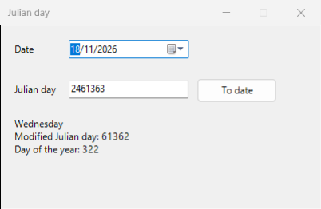
Julian Day
Julian day converter - dates and Julian day numbers in both directions (a port of ring/applications/juliandaycalendar)
cd samples/UsingDotNet/applications/JulianDay then ring main.ringSource code
# Julian day converter - dates and Julian day numbers in both directions (a port of ring/applications/juliandaycalendar)
load "dotnet.ring"
using {
"System"
"System.Drawing"
"System.Windows.Forms"
}
oForm = uiForm("Julian day",400,230)
oForm {
FormBorderStyle = "FixedDialog"
MaximizeBox = False
}
uiLabel(oForm,"Date",15,22,60,22)
oPicker = new DateTimePicker() {
Location = new Point(85,19)
Size = new Size(150,26)
Format = "Short"
}
oForm.Controls.Add(oPicker)
uiLabel(oForm,"Julian day",15,72,70,22)
oJulian = uiTextBox(oForm,85,69,150,26)
uiButton(oForm,"To date",245,67,100,30,"fromJulian()")
oInfo = uiLabel(oForm,"",15,115,370,80)
oPicker.setValueChangedEvent("fromDate()")
fromDate()
uiTest(oForm,"selfTest()")
uiRun(oForm)
uiEnd()
# --------------------------------------------------------------------------
# Julian day number of a calendar date (at noon)
func julianDay nYear, nMonth, nDay
nA = floor((14 - nMonth) / 12)
nY = nYear + 4800 - nA
nM = nMonth + 12 * nA - 3
return nDay + floor((153 * nM + 2) / 5) + 365 * nY + floor(nY / 4) - floor(nY / 100) + floor(nY / 400) - 32045
# the calendar date of a Julian day number: [year, month, day]
func calendarDate nJulian
nA = nJulian + 32044
nB = floor((4 * nA + 3) / 146097)
nC = nA - floor(146097 * nB / 4)
nD = floor((4 * nC + 3) / 1461)
nE = nC - floor(1461 * nD / 4)
nM = floor((5 * nE + 2) / 153)
nDay = nE - floor((153 * nM + 2) / 5) + 1
nMonth = nM + 3 - 12 * floor(nM / 10)
nYear = 100 * nB + nD - 4800 + floor(nM / 10)
return [nYear,nMonth,nDay]
func fromDate
oDate = oPicker.Value
nJulian = julianDay(oDate.Year,oDate.Month,oDate.Day)
oJulian.Text = "" + nJulian
oInfo.Text = oDate.DayOfWeek + nl + "Modified Julian day: " + (nJulian - 2400001) + nl + "Day of the year: " + oDate.DayOfYear
func fromJulian
nJulian = floor(number(oJulian.Text))
aDate = calendarDate(nJulian)
oDate = new DateTime(aDate[1],aDate[2],aDate[3])
oPicker.Value = oDate
func selfTest
dnAssert("Julian day of 2000-01-01",julianDay(2000,1,1),2451545)
dnAssert("Julian day of 1970-01-01",julianDay(1970,1,1),2440588)
aDate = calendarDate(2451545)
dnAssert("back to the date",aDate[1] * 10000 + aDate[2] * 100 + aDate[3],20000101)
dnAssert("leap day",calendarDate(julianDay(2024,2,29))[3],29)
oDate = new DateTime(2024,12,25)
oPicker.Value = oDate
dnAssert("picker converts the date",oJulian.Text,"2460670")
dnAssert("weekday shown",left(oInfo.Text,9),"Wednesday")
oJulian.Text = "2451545"
fromJulian()
dnAssert("julian to the picker",oPicker.Value.Year,2000)
dnAssert("the picker event updated the text",oJulian.Text,"2451545")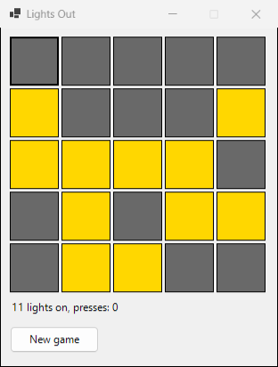
Lights Out
Lights Out - press a cell to toggle it and its neighbours until all the lights are off (a port of ring/applications/lightsout to RingDotNet)
cd samples/UsingDotNet/applications/LightsOut then ring main.ringSource code
# Lights Out - press a cell to toggle it and its neighbours until all the lights are off
# (a port of ring/applications/lightsout to RingDotNet)
load "dotnet.ring"
using {
"System.Drawing"
"System.Windows.Forms"
}
C_SIZE = 5
aLights = list(C_SIZE * C_SIZE)
aCells = []
nPresses = 0
oForm = uiForm("Lights Out",310,380)
oForm {
FormBorderStyle = "FixedSingle"
MaximizeBox = False
}
for nCell = 1 to C_SIZE * C_SIZE
nRow = floor((nCell - 1) / C_SIZE)
nCol = (nCell - 1) % C_SIZE
oCell = uiButton(oForm,"",10 + nCol * 58,10 + nRow * 58,55,55,"press(" + nCell + ")")
oCell.FlatStyle = "Flat"
aCells + oCell
next
oInfo = uiLabel(oForm,"",10,305,290,24)
uiButton(oForm,"New game",10,335,100,30,"newGame()")
newGame()
uiTest(oForm,"selfTest()")
uiRun(oForm)
uiEnd()
# --------------------------------------------------------------------------
func showLights
for nCell = 1 to len(aLights)
if aLights[nCell]
aCells[nCell].BackColor = uiColor("Gold")
else
aCells[nCell].BackColor = uiColor("DimGray")
ok
next
nOn = 0
for nLight in aLights
nOn += nLight
next
if nOn = 0
oInfo.Text = "All lights are off - you won in " + nPresses + " presses!"
else
oInfo.Text = string(nOn) + " lights on, presses: " + nPresses
ok
func toggle nCell
aLights[nCell] = not aLights[nCell]
# toggle the cell and its neighbours
func flip nCell
nRow = floor((nCell - 1) / C_SIZE)
nCol = (nCell - 1) % C_SIZE
toggle(nCell)
if nRow > 0 toggle(nCell - C_SIZE) ok
if nRow < C_SIZE - 1 toggle(nCell + C_SIZE) ok
if nCol > 0 toggle(nCell - 1) ok
if nCol < C_SIZE - 1 toggle(nCell + 1) ok
func press nCell
flip(nCell)
nPresses++
showLights()
func newGame
aLights = list(C_SIZE * C_SIZE)
# random presses keep the game solvable
for nStep = 1 to 12
flip(random(C_SIZE * C_SIZE - 1) + 1)
next
nPresses = 0
showLights()
func selfTest
aLights = list(C_SIZE * C_SIZE)
showLights()
aCells[13].PerformClick()
dnAssert("center flips 5 lights",aLights[13] + aLights[8] + aLights[18] + aLights[12] + aLights[14],5)
dnAssert("others stay off",aLights[1] + aLights[25],0)
aCells[13].PerformClick()
dnAssert("pressing twice undoes it",aLights[13] + aLights[8],0)
dnAssert("win message",left(oInfo.Text,10),"All lights")
aLights = list(C_SIZE * C_SIZE)
aCells[1].PerformClick()
dnAssert("corner flips 3 lights",aLights[1] + aLights[2] + aLights[6],3)
dnAssert("button color on",aCells[1].BackColor.Name,"Gold")
dnAssert("button color off",aCells[25].BackColor.Name,"DimGray")
newGame()
dnAssert("new game resets the counter",nPresses,0)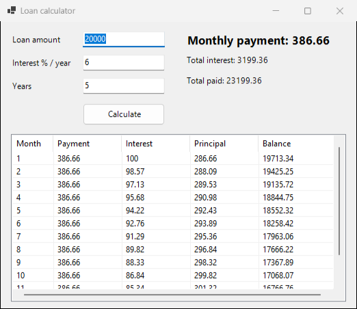
Loan Calculator
Loan calculator - monthly payment, total interest and the first rows of the amortization table
cd samples/UsingDotNet/applications/LoanCalculator then ring main.ringSource code
# Loan calculator - monthly payment, total interest and the first rows of the amortization table
load "dotnet.ring"
using {
"System.Drawing"
"System.Windows.Forms"
}
oForm = uiForm("Loan calculator",520,420)
uiLabel(oForm,"Loan amount",15,18,100,22)
oAmount = uiTextBox(oForm,120,15,120,26)
oAmount.Text = "20000"
uiLabel(oForm,"Interest % / year",15,52,105,22)
oRate = uiTextBox(oForm,120,49,120,26)
oRate.Text = "6"
uiLabel(oForm,"Years",15,86,100,22)
oYears = uiTextBox(oForm,120,83,120,26)
oYears.Text = "5"
uiButton(oForm,"Calculate",120,120,120,32,"calculate()")
oPayment = uiLabel(oForm,"",270,15,240,24)
oPayment.Font = uiFont("Segoe UI",13,true)
oInterest = uiLabel(oForm,"",270,48,240,24)
oTotal = uiLabel(oForm,"",270,78,240,24)
oTable = new ListView() {
Location = new Point(15,165)
Size = new Size(490,245)
View = "Details"
GridLines = True
FullRowSelect = True
}
for aColumn in [["Month",60],["Payment",100],["Interest",100],["Principal",100],["Balance",110]]
oTable.Columns.Add([ :text = aColumn[1], :width = aColumn[2] ])
next
oForm.Controls.Add(oTable)
uiTest(oForm,"selfTest()")
calculate()
uiRun(oForm)
uiEnd()
# --------------------------------------------------------------------------
func money nValue
return uiNumber(floor(nValue * 100 + 0.5) / 100)
# the monthly payment of a loan
func monthlyPayment nAmount, nYearlyRate, nYears
nMonths = nYears * 12
nMonthlyRate = nYearlyRate / 100 / 12
if nMonthlyRate = 0
return nAmount / nMonths
ok
return nAmount * nMonthlyRate / (1 - pow(1 + nMonthlyRate,-nMonths))
func calculate
nAmount = number(oAmount.Text)
nRate = number(oRate.Text)
nYears = number(oYears.Text)
oTable.Items.Clear()
if nAmount <= 0 or nYears <= 0 or nRate < 0
oPayment.Text = "Check the input"
oInterest.Text = ""
oTotal.Text = ""
return
ok
nPayment = monthlyPayment(nAmount,nRate,nYears)
nMonths = floor(nYears * 12)
nBalance = nAmount
nTotalInterest = 0
for nMonth = 1 to nMonths
nInterestPart = nBalance * nRate / 100 / 12
nPrincipal = nPayment - nInterestPart
nBalance -= nPrincipal
nTotalInterest += nInterestPart
if nMonth <= 12
oItem = dnNew("ListViewItem",[ :text = "" + nMonth ])
oItem.SubItems.Add(money(nPayment))
oItem.SubItems.Add(money(nInterestPart))
oItem.SubItems.Add(money(nPrincipal))
oItem.SubItems.Add(money(fabs(nBalance)))
oTable.Items.Add(oItem)
ok
next
oPayment.Text = "Monthly payment: " + money(nPayment)
oInterest.Text = "Total interest: " + money(nTotalInterest)
oTotal.Text = "Total paid: " + money(nAmount + nTotalInterest)
func selfTest
calculate()
dnAssert("known payment",oPayment.Text,"Monthly payment: 386.66")
dnAssert("total interest",oInterest.Text,"Total interest: 3199.36")
dnAssert("12 rows shown",oTable.Items.Count,12)
dnAssert("first month interest",oTable.Items.Item(0).SubItems.Item(2).Text,"100")
oRate.Text = "0"
calculate()
dnAssert("no interest",oPayment.Text,"Monthly payment: 333.33")
oAmount.Text = "-5"
calculate()
dnAssert("invalid input",oPayment.Text,"Check the input")
dnAssert("annuity formula",floor(monthlyPayment(1000,12,1) * 100),8884)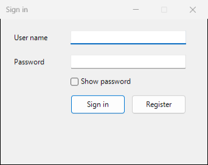
Login Form
Login form with validation, a password hash and an error provider
cd samples/UsingDotNet/applications/LoginForm then ring main.ringSource code
# Login form with validation, a password hash and an error provider
load "dotnet.ring"
using {
"System"
"System.Text"
"System.Security.Cryptography"
"System.Drawing"
"System.Windows.Forms"
}
# the "database": user name -> SHA-256 hash of the password
aUsers = []
nAttempts = 0
oForm = uiForm("Sign in",340,240)
oForm {
FormBorderStyle = "FixedDialog"
MaximizeBox = False
}
uiLabel(oForm,"User name",20,22,90,22)
oUser = uiTextBox(oForm,115,19,190,26)
uiLabel(oForm,"Password",20,62,90,22)
oPassword = uiTextBox(oForm,115,59,190,26)
oPassword.UseSystemPasswordChar = True
oShow = uiCheckBox(oForm,"Show password",115,92,150,24,"togglePassword()")
oSignIn = uiButton(oForm,"Sign in",115,125,90,32,"signIn()")
uiButton(oForm,"Register",215,125,90,32,"registerUser()")
oMessage = uiLabel(oForm,"",20,170,300,40)
oErrors = new ErrorProvider()
oForm.AcceptButton = oSignIn
register("admin","secret")
uiTest(oForm,"selfTest()")
uiRun(oForm)
uiEnd()
# --------------------------------------------------------------------------
func hashOf cPassword
cBytes = new SHA256().HashData(cPassword)
return lower(new Convert().ToHexString(cBytes))
func register cName, cPassword
for aUser in aUsers
if aUser[1] = lower(cName)
return false
ok
next
aUsers + [lower(cName),hashOf(cPassword)]
return true
func checkLogin cName, cPassword
for aUser in aUsers
if aUser[1] = lower(cName) and aUser[2] = hashOf(cPassword)
return true
ok
next
return false
func togglePassword
oPassword.UseSystemPasswordChar = not oShow.Checked
# true when the fields are filled (the error provider shows an icon next to an empty one)
func validate
lValid = true
if trim(oUser.Text) = ""
oErrors.SetError(oUser,"Enter the user name")
lValid = false
else
oErrors.SetError(oUser,"")
ok
if oPassword.Text = ""
oErrors.SetError(oPassword,"Enter the password")
lValid = false
else
oErrors.SetError(oPassword,"")
ok
return lValid
func signIn
if not validate()
oMessage.Text = "Please fill in both fields"
return
ok
nAttempts++
if checkLogin(oUser.Text,oPassword.Text)
oMessage {
ForeColor = uiColor("DarkGreen")
Text = "Welcome, " + oUser.Text + "!"
}
nAttempts = 0
else
oMessage {
ForeColor = uiColor("Firebrick")
Text = "Wrong user name or password (attempt " + nAttempts + " of 3)"
}
if nAttempts >= 3
oSignIn.Enabled = False
oMessage.Text = "Too many attempts: sign in is disabled"
ok
ok
func registerUser
if validate()
if register(oUser.Text,oPassword.Text)
oMessage {
ForeColor = uiColor("DarkGreen")
Text = "User " + oUser.Text + " created"
}
else
oMessage {
ForeColor = uiColor("Firebrick")
Text = "That user name is taken"
}
ok
ok
func selfTest
dnAssert("sha-256 of abc",hashOf("abc"),"ba7816bf8f01cfea414140de5dae2223b00361a396177a9cb410ff61f20015ad")
oSignIn.PerformClick()
dnAssert("empty fields",oMessage.Text,"Please fill in both fields")
dnAssert("error provider message",oErrors.GetError(oUser),"Enter the user name")
oUser.Text = "admin"
oPassword.Text = "secret"
oSignIn.PerformClick()
dnAssert("login ok",oMessage.Text,"Welcome, admin!")
dnAssert("errors cleared",oErrors.GetError(oUser),"")
oPassword.Text = "wrong"
oSignIn.PerformClick()
dnAssert("wrong password",left(oMessage.Text,5),"Wrong")
oSignIn.PerformClick()
oSignIn.PerformClick()
dnAssert("locked after 3 attempts",oSignIn.Enabled,False)
oSignIn.Enabled = True
nAttempts = 0
oUser.Text = "newuser"
oPassword.Text = "pw123"
registerUser()
dnAssert("registered",oMessage.Text,"User newuser created")
registerUser()
dnAssert("duplicate user",oMessage.Text,"That user name is taken")
dnAssert("password char hidden",oPassword.UseSystemPasswordChar,True)
oShow.Checked = True
togglePassword()
dnAssert("show password turns the mask off",oPassword.UseSystemPasswordChar,False)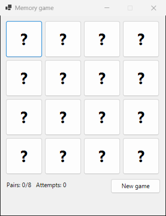
Memory Game
Memory game - find the pairs (a port of ring/applications/memorygame to RingDotNet)
cd samples/UsingDotNet/applications/MemoryGame then ring main.ringSource code
# Memory game - find the pairs (a port of ring/applications/memorygame to RingDotNet)
load "dotnet.ring"
using {
"System"
"System.Diagnostics"
"System.Threading"
"System.Drawing"
"System.Windows.Forms"
}
C_CARDS = 16
aSymbols = [] # the symbol hidden behind each card
aCardButtons = []
aMatched = list(C_CARDS)
nFirst = 0 # the first card turned in this attempt
nSecond = 0
nAttempts = 0
nPairs = 0
lBusy = false
oForm = uiForm("Memory game",330,400)
oForm {
FormBorderStyle = "FixedSingle"
MaximizeBox = False
}
for nCard = 1 to C_CARDS
nRow = floor((nCard - 1) / 4)
nCol = (nCard - 1) % 4
oCard = uiButton(oForm,"?",10 + nCol * 78,10 + nRow * 78,74,74,"turn(" + nCard + ")")
oCard.Font = uiFont("Segoe UI",24,true)
aCardButtons + oCard
next
oInfo = uiLabel(oForm,"",10,330,200,24)
uiButton(oForm,"New game",220,326,100,30,"newGame()")
oHideTimer = uiTimer(700,"hideCards()")
newGame()
uiTest(oForm,"selfTest()")
uiRun(oForm)
uiEnd()
# --------------------------------------------------------------------------
func newGame
oHideTimer.Stop()
# two cards of each of the 8 letters, shuffled
aSymbols = []
for cLetter in ["A","B","C","D","E","F","G","H"]
aSymbols + cLetter
aSymbols + cLetter
next
for nIndex = len(aSymbols) to 2 step -1
nOther = random(nIndex - 1) + 1
cTemp = aSymbols[nIndex]
aSymbols[nIndex] = aSymbols[nOther]
aSymbols[nOther] = cTemp
next
aMatched = list(C_CARDS)
nFirst = 0
nSecond = 0
nAttempts = 0
nPairs = 0
lBusy = false
for oCard in aCardButtons
oCard {
Text = "?"
Enabled = True
BackColor = new Color().Empty
}
next
showInfo()
func showInfo
oInfo.Text = "Pairs: " + nPairs + "/8 Attempts: " + nAttempts
func turn nCard
if lBusy or aMatched[nCard] or nCard = nFirst
return
ok
aCardButtons[nCard].Text = aSymbols[nCard]
aCardButtons[nCard].BackColor = uiColor("LightYellow")
if nFirst = 0
nFirst = nCard
return
ok
nSecond = nCard
nAttempts++
if aSymbols[nFirst] = aSymbols[nSecond]
aMatched[nFirst] = true
aMatched[nSecond] = true
aCardButtons[nFirst].BackColor = uiColor("LightGreen")
aCardButtons[nSecond].BackColor = uiColor("LightGreen")
nPairs++
nFirst = 0
nSecond = 0
if nPairs = 8
uiMessage("You found all the pairs in " + nAttempts + " attempts!","Memory game")
ok
else
lBusy = true
oHideTimer.Start()
ok
showInfo()
func hideCards
oHideTimer.Stop()
for nCard in [nFirst,nSecond]
aCardButtons[nCard].Text = "?"
aCardButtons[nCard].BackColor = new Color().Empty
next
nFirst = 0
nSecond = 0
lBusy = false
func waitMs nMilliseconds
oClock = new Stopwatch()
oClock.Start()
while oClock.ElapsedMilliseconds < nMilliseconds
new Application().DoEvents()
new Thread().Sleep(5)
end
func selfTest
# a known layout: pairs next to each other
aSymbols = ["A","A","B","B","C","C","D","D","E","E","F","F","G","G","H","H"]
aCardButtons[1].PerformClick()
dnAssert("card shows its symbol",aCardButtons[1].Text,"A")
aCardButtons[2].PerformClick()
dnAssert("a pair is kept",nPairs,1)
dnAssert("matched color",aCardButtons[1].BackColor.Name,"LightGreen")
aCardButtons[3].PerformClick()
aCardButtons[5].PerformClick()
dnAssert("a wrong pair is turned back after a moment",lBusy,1)
dnAssert("both cards are still shown",aCardButtons[5].Text,"C")
waitMs(1100)
dnAssert("cards hidden again",aCardButtons[5].Text,"?")
dnAssert("attempts counted",nAttempts,2)
aCardButtons[3].PerformClick()
aCardButtons[4].PerformClick()
dnAssert("second pair",nPairs,2)
newGame()
dnAssert("new game hides everything",aCardButtons[1].Text,"?")
dnAssert("16 symbols",len(aSymbols),16)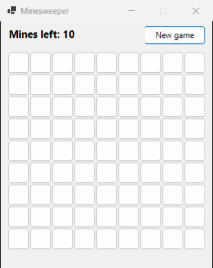
Minesweeper
Minesweeper - left click reveals, right click flags (a port of ring/applications/minesweeper)
cd samples/UsingDotNet/applications/Minesweeper then ring main.ringSource code
# Minesweeper - left click reveals, right click flags (a port of ring/applications/minesweeper)
load "dotnet.ring"
using {
"System.Drawing"
"System.Windows.Forms"
}
C_COLUMNS = 9
C_ROWS = 9
C_MINES = 10
C_SIZE = 32
aMine = list(C_COLUMNS * C_ROWS) # 1 = mine
aRevealed = list(C_COLUMNS * C_ROWS)
aFlagged = list(C_COLUMNS * C_ROWS)
aButtons = []
lPlaying = true
nFlags = 0
oForm = uiForm("Minesweeper",C_COLUMNS * C_SIZE + 20,C_ROWS * C_SIZE + 70)
oForm {
FormBorderStyle = "FixedSingle"
MaximizeBox = False
}
oInfo = uiLabel(oForm,"",10,8,200,24)
oInfo.Font = uiFont("Segoe UI",11,true)
uiButton(oForm,"New game",C_COLUMNS * C_SIZE - 80,6,90,28,"newGame()")
for nCell = 1 to C_COLUMNS * C_ROWS
nRow = floor((nCell - 1) / C_COLUMNS)
nColumn = (nCell - 1) % C_COLUMNS
oButton = uiButton(oForm,"",10 + nColumn * C_SIZE,44 + nRow * C_SIZE,C_SIZE,C_SIZE,"")
oButton {
Font = uiFont("Segoe UI",11,true)
Margin = dnNew("Padding",[ :all = 0 ])
setMouseUpEvent("cellClicked(" + nCell + ",aDotNetArgs[2].Button)")
}
aButtons + oButton
next
newGame()
uiTest(oForm,"selfTest()")
uiRun(oForm)
uiEnd()
# --------------------------------------------------------------------------
func neighbours nCell
aList = []
nRow = floor((nCell - 1) / C_COLUMNS)
nColumn = (nCell - 1) % C_COLUMNS
for nDy = -1 to 1
for nDx = -1 to 1
if nDx != 0 or nDy != 0
nR = nRow + nDy
nC = nColumn + nDx
if nR >= 0 and nR < C_ROWS and nC >= 0 and nC < C_COLUMNS
aList + (nR * C_COLUMNS + nC + 1)
ok
ok
next
next
return aList
func mineCount nCell
nTotal = 0
for nNear in neighbours(nCell)
nTotal += aMine[nNear]
next
return nTotal
func newGame
aMine = list(C_COLUMNS * C_ROWS)
aRevealed = list(C_COLUMNS * C_ROWS)
aFlagged = list(C_COLUMNS * C_ROWS)
nPlaced = 0
while nPlaced < C_MINES
nCell = random(C_COLUMNS * C_ROWS - 1) + 1
if not aMine[nCell]
aMine[nCell] = 1
nPlaced++
ok
end
startPlay()
func startPlay
lPlaying = true
nFlags = 0
for oButton in aButtons
oButton {
Text = ""
Enabled = True
BackColor = new Color().Empty
}
next
showInfo()
func showInfo
if lPlaying
oInfo.Text = "Mines left: " + (C_MINES - nFlags)
ok
func cellClicked nCell, cButton
if not lPlaying
return
ok
if cButton = "Right"
toggleFlag(nCell)
else
reveal(nCell)
ok
func toggleFlag nCell
if aRevealed[nCell]
return
ok
aFlagged[nCell] = not aFlagged[nCell]
if aFlagged[nCell]
aButtons[nCell].Text = "F"
aButtons[nCell].ForeColor = uiColor("Red")
nFlags++
else
aButtons[nCell].Text = ""
nFlags--
ok
showInfo()
func reveal nCell
if aRevealed[nCell] or aFlagged[nCell]
return
ok
if aMine[nCell]
gameOver()
return
ok
# flood fill over the cells without mines around
aQueue = [nCell]
while len(aQueue) > 0
nCurrent = aQueue[len(aQueue)]
del(aQueue,len(aQueue))
if aRevealed[nCurrent]
loop
ok
aRevealed[nCurrent] = 1
aButtons[nCurrent].BackColor = uiColor("LightGray")
nNear = mineCount(nCurrent)
if nNear > 0
aButtons[nCurrent].Text = "" + nNear
aButtons[nCurrent].ForeColor = numberColor(nNear)
else
aButtons[nCurrent].Text = ""
for nOther in neighbours(nCurrent)
if not aRevealed[nOther] and not aFlagged[nOther]
aQueue + nOther
ok
next
ok
end
checkWin()
func numberColor nNear
aColors = ["Blue","Green","Red","DarkBlue","Brown","Teal","Black","Gray"]
return uiColor(aColors[nNear])
func checkWin
nHidden = 0
for nCell = 1 to len(aRevealed)
if not aRevealed[nCell]
nHidden++
ok
next
if nHidden = C_MINES
lPlaying = false
oInfo.Text = "You won!"
ok
func gameOver
lPlaying = false
for nCell = 1 to len(aMine)
if aMine[nCell]
aButtons[nCell].Text = "*"
aButtons[nCell].BackColor = uiColor("Tomato")
ok
next
oInfo.Text = "Boom! Game over"
func selfTest
# a known layout: mines in the top row, cells 1 to 9, except 5
aMine = list(C_COLUMNS * C_ROWS)
for nCell in [1,3,5,7,9]
aMine[nCell] = 1
next
# C_MINES stays 10 so the win check below uses its own counts
startPlay()
dnAssert("neighbour count",mineCount(11),2)
dnAssert("corner has 3 neighbours",len(neighbours(1)),3)
dnAssert("middle has 8 neighbours",len(neighbours(41)),8)
aButtons[11].PerformClick()
cButton = "Left"
cellClicked(11,"Left")
dnAssert("number shown",aButtons[11].Text,"2")
cellClicked(81,"Left")
dnAssert("flood fill opened far cells",aRevealed[72] + aRevealed[73] + aRevealed[40],3)
cellClicked(2,"Right")
dnAssert("flag placed",aButtons[2].Text,"F")
dnAssert("flag counter",nFlags,1)
cellClicked(2,"Left")
dnAssert("flagged cell is protected",aRevealed[2],0)
cellClicked(2,"Right")
dnAssert("flag removed",aButtons[2].Text,"")
# the right mouse button on the real button
cellClicked(1,"Left")
dnAssert("mine ends the game",lPlaying,0)
dnAssert("message",oInfo.Text,"Boom! Game over")
dnAssert("mines shown",aButtons[3].Text,"*")
Notepad
Notepad - a text editor (menu, file dialogs, status bar, find) written with RingDotNet
cd samples/UsingDotNet/applications/Notepad then ring main.ringSource code
# Notepad - a text editor (menu, file dialogs, status bar, find) written with RingDotNet
load "dotnet.ring"
using {
"System"
"System.IO"
"System.Drawing"
"System.Windows.Forms"
}
cFileName = "" # the file being edited ("" = untitled)
lModified = false
lLoading = false
oForm = uiForm("Untitled - Notepad",640,440)
uiMenu(oForm,[
["File",[["New","newFile()","Control, N"],["Open...","openDialog()","Control, O"],["Save","saveFile()","Control, S"],["Save As...","saveAsDialog()"],["-",""],["Exit","oForm.Close()"]]],
["Edit",[["Cut","oEditor.Cut()","Control, X"],["Copy","oEditor.Copy()","Control, C"],["Paste","oEditor.Paste()","Control, V"],["Select All","oEditor.SelectAll()","Control, A"],["-",""],["Find...","toggleFind()","Control, F"]]],
["Format",[["Word Wrap","toggleWrap()"]]],
["Help",[["About","uiMessage('Notepad written in Ring with RingDotNet','About')"]]]
])
oEditor = uiMemo(oForm,0,24,640,370)
oEditor {
Dock = "Fill"
Font = new Font("Consolas",11)
setTextChangedEvent("textChanged()")
setKeyUpEvent("showPosition()")
setMouseUpEvent("showPosition()")
}
oStatus = new StatusStrip()
oPosition = new ToolStripStatusLabel()
oPosition.Text = "Ln 1, Col 1"
oStatus.Items.Add(oPosition)
oForm.Controls.Add(oStatus)
oEditor.BringToFront() # the control that fills is docked last: otherwise its first line is under the menu
# find bar
oFindPanel = uiPanel(oForm,0,0,640,30)
oFindPanel {
Dock = "Bottom"
Visible = False
}
uiLabel(oFindPanel,"Find:",6,6,40,20)
oFindText = uiTextBox(oFindPanel,50,4,200,24)
uiButton(oFindPanel,"Find next",260,3,80,26,"findNext()")
oFound = uiLabel(oFindPanel,"",350,6,200,20)
oForm.setFormClosingEvent("closing(aDotNetArgs[2])")
uiTest(oForm,"selfTest()")
uiRun(oForm)
uiEnd()
# --------------------------------------------------------------------------
func textChanged
if not lLoading
lModified = true
ok
updateTitle()
showPosition()
func updateTitle
cName = "Untitled"
if cFileName != ""
cName = new Path().GetFileName(cFileName)
ok
if lModified
cName += "*"
ok
oForm.Text = cName + " - Notepad"
func showPosition
nIndex = oEditor.SelectionStart
nLine = oEditor.GetLineFromCharIndex(nIndex)
nColumn = nIndex - oEditor.GetFirstCharIndexFromLine(nLine)
oPosition.Text = "Ln " + (nLine + 1) + ", Col " + (nColumn + 1)
# true when it is fine to throw away the current text
func canDiscard
if not lModified
return true
ok
return uiAsk("Discard the changes?","Notepad")
func newFile
if canDiscard()
setText("",true)
cFileName = ""
lModified = false
updateTitle()
ok
func setText cText, lKeepFlag
lLoading = true
oEditor.Text = cText
lLoading = false
func openDialog
if canDiscard()
cName = uiOpenFileName("Open","Text files (*.txt)|*.txt|All files (*.*)|*.*")
if cName != ""
loadFile(cName)
ok
ok
func loadFile cName
try
cContent = new File().ReadAllText(cName)
catch
uiMessage("Can't open " + cName + nl + cCatchError,"Notepad")
return
done
setText(cContent,false)
cFileName = cName
lModified = false
updateTitle()
func saveFile
if cFileName = ""
saveAsDialog()
else
saveTo(cFileName)
ok
func saveAsDialog
cName = uiSaveFileName("Save As","Text files (*.txt)|*.txt|All files (*.*)|*.*")
if cName != ""
saveTo(cName)
ok
func saveTo cName
try
new File().WriteAllText([ :path = cName, :contents = oEditor.Text ])
catch
uiMessage("Can't save " + cName + nl + cCatchError,"Notepad")
return
done
cFileName = cName
lModified = false
updateTitle()
func toggleWrap
oEditor.WordWrap = not oEditor.WordWrap
if oEditor.WordWrap
oEditor.ScrollBars = "Vertical"
else
oEditor.ScrollBars = "Both"
ok
func toggleFind
oFindPanel.Visible = not oFindPanel.Visible
if oFindPanel.Visible
oFindText.Focus()
ok
func findNext
cWhat = oFindText.Text
if cWhat = ""
return
ok
cText = oEditor.Text
nStart = oEditor.SelectionStart + oEditor.SelectionLength
nIndex = findFrom(cText,cWhat,nStart)
if nIndex < 0 and nStart > 0
nIndex = findFrom(cText,cWhat,0) # wrap around
ok
if nIndex < 0
oFound.Text = "Not found"
else
oFound.Text = ""
oEditor.Select([ :start = nIndex, :length = len(cWhat) ])
oEditor.ScrollToCaret()
oEditor.Focus()
ok
# 0-based position of cWhat in cText at or after nStart (-1 = not found); positions are bytes, so it is meant for ASCII text
func findFrom cText, cWhat, nStart
if nStart >= len(cText)
return -1
ok
cRest = substr(cText,nStart + 1,len(cText) - nStart)
nPos = substr(cRest,cWhat)
if nPos = 0
return -1
ok
return nStart + nPos - 1
func closing oArgs
if not canDiscard()
oArgs.Cancel = True
ok
func selfTest
oEditor.Text = "Hello" + windowsnl() + "Ring and .NET"
dnAssert("modified after typing",lModified,1)
dnAssert("title has a star","*" = right(left(oForm.Text,len("Untitled*")),1),True)
cTemp = new Path().Combine([new Path().GetTempPath(),"notepad_selftest.txt"])
saveTo(cTemp)
dnAssert("saved",new File().Exists(cTemp),True)
dnAssert("not modified after save",lModified,0)
dnAssert("title is the file name",oForm.Text,"notepad_selftest.txt - Notepad")
oEditor.Text = "other"
dnAssert("modified again",lModified,1)
lModified = false
loadFile(cTemp)
dnAssert("loaded text",left(oEditor.Text,5),"Hello")
dnAssert("line count",oEditor.Lines.Length,2)
new File().Delete(cTemp)
oEditor.SelectionStart = 3
showPosition()
dnAssert("status position",oPosition.Text,"Ln 1, Col 4")
oEditor {
Text = "one two three two"
SelectionStart = 0
SelectionLength = 0
}
oFindText.Text = "two"
findNext()
dnAssert("find first",oEditor.SelectionStart,4)
findNext()
dnAssert("find next",oEditor.SelectionStart,14)
findNext()
dnAssert("find wraps",oEditor.SelectionStart,4)
oFindText.Text = "zzz"
findNext()
dnAssert("not found message",oFound.Text,"Not found")
lModified = false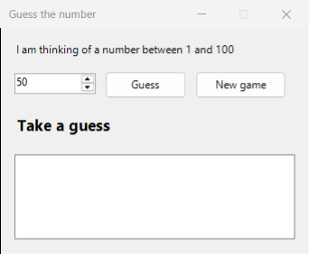
Number Guess
Guess the number between 1 and 100 - higher/lower hints and an attempts counter
cd samples/UsingDotNet/applications/NumberGuess then ring main.ringSource code
# Guess the number between 1 and 100 - higher/lower hints and an attempts counter
load "dotnet.ring"
using {
"System.Drawing"
"System.Windows.Forms"
}
nSecret = 0
nAttempts = 0
nBest = 0
oForm = uiForm("Guess the number",340,250)
oForm {
FormBorderStyle = "FixedDialog"
MaximizeBox = False
}
uiLabel(oForm,"I am thinking of a number between 1 and 100",15,15,310,22)
oGuess = new NumericUpDown() {
Location = new Point(15,50)
Size = new Size(90,26)
Minimum = 1
Maximum = 100
Value = 50
}
oForm.Controls.Add(oGuess)
uiButton(oForm,"Guess",115,48,90,30,"guess()")
uiButton(oForm,"New game",215,48,100,30,"newGame()")
oHint = uiLabel(oForm,"",15,95,310,40)
oHint.Font = uiFont("Segoe UI",13,true)
oHistory = uiListBox(oForm,15,140,310,95)
newGame()
uiTest(oForm,"selfTest()")
uiRun(oForm)
uiEnd()
# --------------------------------------------------------------------------
func newGame
nSecret = random(99) + 1
nAttempts = 0
oHint.Text = "Take a guess"
oHistory.Items.Clear()
oGuess.Value = 50
func guess
nNumber = number(oGuess.Value)
nAttempts++
if nNumber < nSecret
cResult = "too low"
but nNumber > nSecret
cResult = "too high"
else
cResult = "correct"
ok
oHistory.Items.Insert(0,"" + nAttempts + ". " + nNumber + " is " + cResult)
if cResult = "correct"
oHint.Text = "Yes! " + nNumber + " in " + nAttempts + " attempts"
if nBest = 0 or nAttempts < nBest
nBest = nAttempts
ok
else
oHint.Text = "Try a number that is " + substr(cResult,"too ","") + "er"
ok
func selfTest
nSecret = 37
nAttempts = 0
oGuess.Value = 50
guess()
dnAssert("high hint",oHint.Text,"Try a number that is higher")
oGuess.Value = 20
guess()
dnAssert("low hint",oHint.Text,"Try a number that is lower")
oGuess.Value = 37
guess()
dnAssert("win message",left(oHint.Text,4),"Yes!")
dnAssert("attempts",nAttempts,3)
dnAssert("best score",nBest,3)
dnAssert("history has 3 lines",oHistory.Items.Count,3)
newGame()
dnAssert("new game resets",nAttempts,0)
dnAssert("secret in range",nSecret >= 1 and nSecret <= 100,True)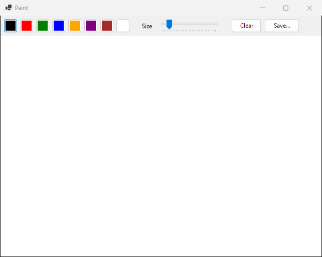
Paint
Paint - draw with the mouse (mouse events and UiCanvas), save the picture as PNG
cd samples/UsingDotNet/applications/Paint then ring main.ringSource code
# Paint - draw with the mouse (mouse events and UiCanvas), save the picture as PNG
load "dotnet.ring"
using {
"System"
"System.IO"
"System.Drawing"
"System.Drawing.Imaging"
"System.Windows.Forms"
}
cColor = "Black"
nPenSize = 4
lDrawing = false
nLastX = 0
nLastY = 0
oForm = uiForm("Paint",640,480)
oPicture = uiPictureBox(oForm,0,40,640,440)
oCanvas = new UiCanvas(oPicture)
oCanvas.clear("White")
oCanvas.show()
oPicture {
setMouseDownEvent("mouseDown(aDotNetArgs[2].X,aDotNetArgs[2].Y)")
setMouseMoveEvent("mouseMove(aDotNetArgs[2].X,aDotNetArgs[2].Y)")
setMouseUpEvent("lDrawing = false")
}
nX = 6
for cName in ["Black","Red","Green","Blue","Orange","Purple","Brown","White"]
oSwatch = uiButton(oForm,"",nX,6,28,28,"cColor = '" + cName + "'")
oSwatch.BackColor = uiColor(cName)
nX += 32
next
uiLabel(oForm,"Size",280,12,32,20)
oSize = new TrackBar() {
Location = new Point(312,6)
Size = new Size(130,30)
Minimum = 1
Maximum = 30
Value = 4
setScrollEvent("nPenSize = oSize.Value")
}
oForm.Controls.Add(oSize)
uiButton(oForm,"Clear",460,6,60,28,"clearCanvas()")
uiButton(oForm,"Save...",526,6,70,28,"saveDialog()")
uiTest(oForm,"selfTest()")
uiRun(oForm)
uiEnd()
# --------------------------------------------------------------------------
func mouseDown nX, nY
lDrawing = true
nLastX = nX
nLastY = nY
oCanvas.fillCircle(nX,nY,nPenSize / 2,cColor)
oCanvas.show()
func mouseMove nX, nY
if lDrawing
oCanvas.line(nLastX,nLastY,nX,nY,cColor,nPenSize)
oCanvas.fillCircle(nX,nY,nPenSize / 2,cColor)
nLastX = nX
nLastY = nY
oCanvas.show()
ok
func clearCanvas
oCanvas.clear("White")
oCanvas.show()
func saveTo cFile
oCanvas.oBitmap.Save([ :filename = cFile, :format = new ImageFormat().Png ])
func saveDialog
cFile = uiSaveFileName("Save picture","PNG image (*.png)|*.png")
if cFile != ""
saveTo(cFile)
ok
func selfTest
# a stroke from (50,50) to (150,50), then a red dot
mouseDown(50,50)
mouseMove(100,50)
mouseMove(150,50)
lDrawing = false
dnAssert("black line in the middle",oCanvas.pixel(100,50),"ff000000")
dnAssert("white outside the line",oCanvas.pixel(100,90),"ffffffff")
cColor = "Red"
nPenSize = 10
mouseDown(300,200)
lDrawing = false
dnAssert("red dot",oCanvas.pixel(300,200),"ffff0000")
# buttons change the color: the 2nd swatch is red, the 3rd green
oForm.Controls.Item(3).PerformClick()
dnAssert("swatch sets the color",cColor,"Green")
oSize.Value = 12
dnAssert("pen size from the track bar value",oSize.Value,12)
cFile = new Path().Combine([new Path().GetTempPath(),"paint_selftest.png"])
saveTo(cFile)
dnAssert("picture saved",new File().Exists(cFile),True)
dnAssert("PNG signature",substr(new File().ReadAllBytes(cFile),"PNG") > 0,True)
new File().Delete(cFile)
clearCanvas()
dnAssert("cleared",oCanvas.pixel(100,50),"ffffffff")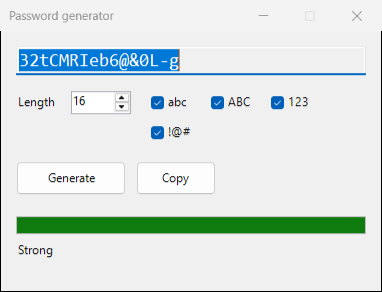
Password Generator
Password generator - uses the .NET cryptographic random number generator
cd samples/UsingDotNet/applications/PasswordGenerator then ring main.ringSource code
# Password generator - uses the .NET cryptographic random number generator
load "dotnet.ring"
using {
"System"
"System.Security.Cryptography"
"System.Drawing"
"System.Windows.Forms"
}
oForm = uiForm("Password generator",380,260)
oForm {
FormBorderStyle = "FixedDialog"
MaximizeBox = False
}
oPassword = uiTextBox(oForm,15,15,350,32)
oPassword {
Font = uiFont("Consolas",14,false)
ReadOnly = True
}
uiLabel(oForm,"Length",15,62,50,22)
oLength = new NumericUpDown() {
Location = new Point(70,60)
Size = new Size(60,26)
Minimum = 4
Maximum = 64
Value = 16
}
oForm.Controls.Add(oLength)
oLower = uiCheckBox(oForm,"abc",150,60,60,24,"")
oUpper = uiCheckBox(oForm,"ABC",210,60,60,24,"")
oDigits = uiCheckBox(oForm,"123",270,60,60,24,"")
oSymbols = uiCheckBox(oForm,"!@#",150,90,70,24,"")
oLower.Checked = True
oUpper.Checked = True
oDigits.Checked = True
oSymbols.Checked = True
uiButton(oForm,"Generate",15,130,110,34,"generate()")
uiButton(oForm,"Copy",135,130,80,34,"copyIt()")
oStrength = new ProgressBar() {
Location = new Point(15,185)
Size = new Size(350,18)
Maximum = 100
}
oForm.Controls.Add(oStrength)
oStrengthText = uiLabel(oForm,"",15,210,350,24)
generate()
uiTest(oForm,"selfTest()")
uiRun(oForm)
uiEnd()
# --------------------------------------------------------------------------
func alphabet
cChars = ""
if oLower.Checked cChars += "abcdefghijklmnopqrstuvwxyz" ok
if oUpper.Checked cChars += "ABCDEFGHIJKLMNOPQRSTUVWXYZ" ok
if oDigits.Checked cChars += "0123456789" ok
if oSymbols.Checked cChars += "!@#$%^&*()-_=+[]{};:,.?" ok
return cChars
# a random number from 0 to nMax - 1 taken from the operating system's random generator
func secureRandom nMax
return new RandomNumberGenerator().GetInt32(nMax)
func strength cPassword
nScore = len(cPassword) * 4
nClasses = 0
if hasAny(cPassword,"abcdefghijklmnopqrstuvwxyz") nClasses++ ok
if hasAny(cPassword,"ABCDEFGHIJKLMNOPQRSTUVWXYZ") nClasses++ ok
if hasAny(cPassword,"0123456789") nClasses++ ok
if hasAny(cPassword,"!@#$%^&*()-_=+[]{};:,.?") nClasses++ ok
nScore += nClasses * 10
if nScore > 100
nScore = 100
ok
return nScore
func hasAny cText, cChars
for x = 1 to len(cText)
if substr(cChars,cText[x])
return true
ok
next
return false
func generate
cChars = alphabet()
if cChars = ""
oPassword.Text = ""
oStrengthText.Text = "Choose at least one kind of characters"
oStrength.Value = 0
return
ok
cPassword = ""
for x = 1 to number(oLength.Value)
cPassword += cChars[secureRandom(len(cChars)) + 1]
next
oPassword.Text = cPassword
nScore = strength(cPassword)
oStrength.Value = nScore
if nScore < 50
oStrengthText.Text = "Weak"
but nScore < 80
oStrengthText.Text = "Good"
else
oStrengthText.Text = "Strong"
ok
func copyIt
if oPassword.Text != "" and not uiSelfTest()
new Clipboard().SetText(oPassword.Text)
ok
func selfTest
dnAssert("default length",len(oPassword.Text),16)
dnAssert("strong by default",oStrengthText.Text,"Strong")
oLength.Value = 30
generate()
dnAssert("longer password",len(oPassword.Text),30)
oUpper.Checked = False
oDigits.Checked = False
oSymbols.Checked = False
oLength.Value = 20
generate()
dnAssert("only lower case",hasAny(oPassword.Text,"ABCDEFGHIJKLMNOPQRSTUVWXYZ0123456789!@#"),0)
dnAssert("lower case letters present",hasAny(oPassword.Text,"abcdefghijklmnopqrstuvwxyz"),1)
oLength.Value = 4
generate()
dnAssert("short and simple is weak",oStrengthText.Text,"Weak")
oLower.Checked = False
generate()
dnAssert("no characters selected",oStrengthText.Text,"Choose at least one kind of characters")
dnAssert("the random numbers are in range",secureRandom(10) < 10,True)
nSeen = ""
for x = 1 to 200
nSeen += "" + secureRandom(3)
next
dnAssert("all values appear",substr(nSeen,"0") > 0 and substr(nSeen,"1") > 0 and substr(nSeen,"2") > 0,True)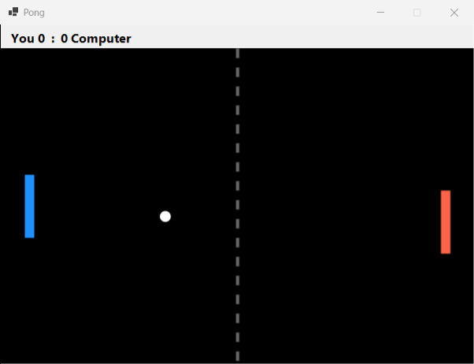
Pong
Pong - Up/Down (or W/S) move your paddle, the computer plays the other one (a port of ring/applications/pong)
cd samples/UsingDotNet/applications/Pong then ring main.ringSource code
# Pong - Up/Down (or W/S) move your paddle, the computer plays the other one (a port of ring/applications/pong)
load "dotnet.ring"
using {
"System.Drawing"
"System.Windows.Forms"
}
C_WIDTH = 600
C_HEIGHT = 400
C_PADDLE_HEIGHT = 80
C_PADDLE_WIDTH = 12
nPlayerY = 160 # the top of the paddles
nComputerY = 160
nBallX = 300
nBallY = 200
nBallDX = 5
nBallDY = 3
nPlayerScore = 0
nComputerScore = 0
nPlayerMove = 0 # -1, 0 or 1 while a key is held
nKeyEvents = 0 # key events seen (for the test)
oForm = uiForm("Pong",C_WIDTH,C_HEIGHT + 30)
oForm {
KeyPreview = True
FormBorderStyle = "FixedSingle"
MaximizeBox = False
}
oPicture = uiPictureBox(oForm,0,30,C_WIDTH,C_HEIGHT)
oCanvas = new UiCanvas(oPicture)
oScore = uiLabel(oForm,"",10,6,400,22)
oScore.Font = uiFont("Segoe UI",12,true)
uiGameKeys(oForm,"keyChanged(aDotNetArgs[2].KeyCode,true)")
oForm.setKeyUpEvent("keyChanged(aDotNetArgs[2].KeyCode,false)")
oTimer = uiTimer(20,"tick()")
oTimer.Start()
draw()
uiTest(oForm,"selfTest()")
uiRun(oForm)
uiEnd()
# --------------------------------------------------------------------------
func keyChanged cKey, lDown
nKeyEvents++
if cKey = "Up" or cKey = "W"
if lDown
nPlayerMove = -1
else
nPlayerMove = 0
ok
but cKey = "Down" or cKey = "S"
if lDown
nPlayerMove = 1
else
nPlayerMove = 0
ok
ok
func clampPaddle nY
if nY < 0
return 0
but nY > C_HEIGHT - C_PADDLE_HEIGHT
return C_HEIGHT - C_PADDLE_HEIGHT
ok
return nY
func serve nDirection
nBallX = C_WIDTH / 2
nBallY = C_HEIGHT / 2
nBallDX = 5 * nDirection
nBallDY = 3
# one step of the game
func tick
nPlayerY = clampPaddle(nPlayerY + nPlayerMove * 7)
# the computer follows the ball slowly
nTarget = nBallY - C_PADDLE_HEIGHT / 2
if nComputerY < nTarget - 4
nComputerY = clampPaddle(nComputerY + 4)
but nComputerY > nTarget + 4
nComputerY = clampPaddle(nComputerY - 4)
ok
nBallX += nBallDX
nBallY += nBallDY
if nBallY < 6 or nBallY > C_HEIGHT - 6
nBallDY = -nBallDY
ok
# paddles
if nBallDX < 0 and nBallX < 30 + C_PADDLE_WIDTH and nBallY >= nPlayerY and nBallY <= nPlayerY + C_PADDLE_HEIGHT
nBallDX = -nBallDX * 1.05
nBallDY += (nBallY - (nPlayerY + C_PADDLE_HEIGHT / 2)) / 12
ok
if nBallDX > 0 and nBallX > C_WIDTH - 30 - C_PADDLE_WIDTH and nBallY >= nComputerY and nBallY <= nComputerY + C_PADDLE_HEIGHT
nBallDX = -nBallDX * 1.05
nBallDY += (nBallY - (nComputerY + C_PADDLE_HEIGHT / 2)) / 12
ok
# goals
if nBallX < 0
nComputerScore++
serve(1)
but nBallX > C_WIDTH
nPlayerScore++
serve(-1)
ok
draw()
func draw
oCanvas.clear("Black")
for nY = 0 to C_HEIGHT step 24
oCanvas.fillRect(C_WIDTH / 2 - 2,nY,4,12,"DimGray")
next
oCanvas.fillRect(30,nPlayerY,C_PADDLE_WIDTH,C_PADDLE_HEIGHT,"DodgerBlue")
oCanvas.fillRect(C_WIDTH - 30 - C_PADDLE_WIDTH,nComputerY,C_PADDLE_WIDTH,C_PADDLE_HEIGHT,"Tomato")
oCanvas.fillCircle(nBallX,nBallY,7,"White")
oScore.Text = "You " + nPlayerScore + " : " + nComputerScore + " Computer"
oCanvas.show()
func selfTest
oTimer.Stop()
# keys
keyChanged("Down",true)
nPlayerY = 100
tick()
dnAssert("paddle moves down while the key is held",nPlayerY,107)
keyChanged("Down",false)
tick()
dnAssert("paddle stops",nPlayerY,107)
nPlayerY = 0
keyChanged("Up",true)
tick()
dnAssert("paddle stays inside the field",nPlayerY,0)
keyChanged("Up",false)
nKeyEvents = 0
if uiSendKeys(oForm,"{DOWN}{UP}")
dnAssert("real arrow keys reach the game (down and up, and their releases)",nKeyEvents,4)
ok
# the ball bounces on the top
nBallX = 300
nBallY = 8
nBallDY = -3
tick()
dnAssert("bounce",nBallDY,3)
# a goal for the player
nBallX = C_WIDTH - 2
nBallDX = 5
nBallY = 200
nComputerY = 0
tick()
dnAssert("player scores",nPlayerScore,1)
dnAssert("the ball is served again",nBallX,300)
# the paddle returns the ball
nPlayerY = 150
nBallX = 40
nBallY = 190
nBallDX = -5
nBallDY = 0
tick()
dnAssert("paddle hit reverses the ball",nBallDX > 0,True)
dnAssert("score text",oScore.Text,"You 1 : 0 Computer")
dnAssert("the paddle is drawn",oCanvas.pixel(36,nPlayerY + 10),"ff1e90ff")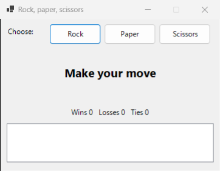
Rock Paper Scissors
Rock, paper, scissors against the computer (a port of ring/applications/rockpaperscissors)
cd samples/UsingDotNet/applications/RockPaperScissors then ring main.ringSource code
# Rock, paper, scissors against the computer (a port of ring/applications/rockpaperscissors)
load "dotnet.ring"
using {
"System.Drawing"
"System.Windows.Forms"
}
aNames = ["Rock","Paper","Scissors"]
nWins = 0
nLosses = 0
nTies = 0
oForm = uiForm("Rock, paper, scissors",360,250)
oForm {
FormBorderStyle = "FixedSingle"
MaximizeBox = False
}
uiLabel(oForm,"Choose:",10,12,60,24)
for nChoice = 1 to 3
uiButton(oForm,aNames[nChoice],80 + (nChoice - 1) * 90,8,85,34,"play(" + nChoice + ")")
next
oResult = uiLabel(oForm,"Make your move",10,60,340,60)
oResult {
Font = uiFont("Segoe UI",14,true)
TextAlign = "MiddleCenter"
}
oScore = uiLabel(oForm,"",10,140,340,28)
oScore.TextAlign = "MiddleCenter"
oHistory = uiListBox(oForm,10,172,340,70)
showScore()
uiTest(oForm,"selfTest()")
uiRun(oForm)
uiEnd()
# --------------------------------------------------------------------------
# 1 = the player wins, 0 = tie, -1 = the computer wins (rock = 1, paper = 2, scissors = 3)
func compare nPlayer, nComputer
if nPlayer = nComputer
return 0
ok
if (nPlayer = 1 and nComputer = 3) or (nPlayer = 2 and nComputer = 1) or (nPlayer = 3 and nComputer = 2)
return 1
ok
return -1
func showScore
oScore.Text = "Wins " + nWins + " Losses " + nLosses + " Ties " + nTies
func playAgainst nPlayer, nComputer
nOutcome = compare(nPlayer,nComputer)
switch nOutcome
on 1
nWins++
cText = "You win! " + aNames[nPlayer] + " beats " + aNames[nComputer]
on 0
nTies++
cText = "Tie: both chose " + aNames[nPlayer]
on -1
nLosses++
cText = "You lose. " + aNames[nComputer] + " beats " + aNames[nPlayer]
off
oResult.Text = cText
oHistory.Items.Insert(0,cText)
showScore()
return nOutcome
func play nPlayer
playAgainst(nPlayer,random(2) + 1)
func selfTest
dnAssert("rock beats scissors",compare(1,3),1)
dnAssert("scissors beat paper",compare(3,2),1)
dnAssert("paper beats rock",compare(2,1),1)
dnAssert("paper loses to scissors",compare(2,3),-1)
dnAssert("tie",compare(2,2),0)
playAgainst(1,3)
dnAssert("win recorded",nWins,1)
dnAssert("win message",left(oResult.Text,8),"You win!")
playAgainst(1,2)
dnAssert("loss recorded",nLosses,1)
playAgainst(3,3)
dnAssert("tie recorded",nTies,1)
dnAssert("history has 3 lines",oHistory.Items.Count,3)
dnAssert("score label",oScore.Text,"Wins 1 Losses 1 Ties 1")
# a real click plays against a random computer move
oForm.Controls.Item(1).PerformClick()
dnAssert("a click counts one game",nWins + nLosses + nTies,4)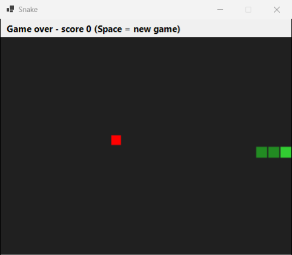
Snake
Snake - arrow keys, eat the food, do not hit the walls or yourself (a port of ring/applications/snake)
cd samples/UsingDotNet/applications/Snake then ring main.ringSource code
# Snake - arrow keys, eat the food, do not hit the walls or yourself (a port of ring/applications/snake)
load "dotnet.ring"
using {
"System.Drawing"
"System.Windows.Forms"
}
C_COLUMNS = 24
C_ROWS = 18
C_CELL = 20
aSnake = [] # [[x,y], ...] the head first
cDirection = "Right"
cNextDirection = "Right"
aFood = [0,0]
nScore = 0
lAlive = true
oForm = uiForm("Snake",C_COLUMNS * C_CELL,C_ROWS * C_CELL + 30)
oForm {
KeyPreview = True
FormBorderStyle = "FixedSingle"
MaximizeBox = False
}
oPicture = uiPictureBox(oForm,0,30,C_COLUMNS * C_CELL,C_ROWS * C_CELL)
oCanvas = new UiCanvas(oPicture)
oInfo = uiLabel(oForm,"",8,6,300,20)
oInfo.Font = uiFont("Segoe UI",11,true)
uiGameKeys(oForm,"keyPressed(aDotNetArgs[2].KeyCode)")
oTimer = uiTimer(130,"tick()")
newGame()
uiTest(oForm,"selfTest()")
uiRun(oForm)
uiEnd()
# --------------------------------------------------------------------------
func newGame
aSnake = [[12,9],[11,9],[10,9]]
cDirection = "Right"
cNextDirection = "Right"
nScore = 0
lAlive = true
placeFood()
draw()
oTimer.Start()
func placeFood
while true
aFood = [random(C_COLUMNS - 1),random(C_ROWS - 1)]
if not onSnake(aFood[1],aFood[2])
exit
ok
end
func onSnake nX, nY
for aPart in aSnake
if aPart[1] = nX and aPart[2] = nY
return true
ok
next
return false
func keyPressed cKey
if cKey = "Left" and cDirection != "Right"
cNextDirection = "Left"
but cKey = "Right" and cDirection != "Left"
cNextDirection = "Right"
but cKey = "Up" and cDirection != "Down"
cNextDirection = "Up"
but cKey = "Down" and cDirection != "Up"
cNextDirection = "Down"
but cKey = "Space" and not lAlive
newGame()
ok
# one step of the game
func tick
if not lAlive
return
ok
cDirection = cNextDirection
nX = aSnake[1][1]
nY = aSnake[1][2]
switch cDirection
on "Left" nX--
on "Right" nX++
on "Up" nY--
on "Down" nY++
off
if nX < 0 or nY < 0 or nX >= C_COLUMNS or nY >= C_ROWS or onSnake(nX,nY)
lAlive = false
oTimer.Stop()
draw()
return
ok
insert(aSnake,0,[nX,nY])
if nX = aFood[1] and nY = aFood[2]
nScore += 10
placeFood()
else
del(aSnake,len(aSnake))
ok
draw()
func draw
oCanvas.clear("#202020")
oCanvas.fillRect(aFood[1] * C_CELL + 2,aFood[2] * C_CELL + 2,C_CELL - 4,C_CELL - 4,"Red")
for nIndex = 1 to len(aSnake)
if nIndex = 1
oCanvas.fillRect(aSnake[nIndex][1] * C_CELL + 1,aSnake[nIndex][2] * C_CELL + 1,C_CELL - 2,C_CELL - 2,"LimeGreen")
else
oCanvas.fillRect(aSnake[nIndex][1] * C_CELL + 1,aSnake[nIndex][2] * C_CELL + 1,C_CELL - 2,C_CELL - 2,"ForestGreen")
ok
next
if lAlive
oInfo.Text = "Score: " + nScore
else
oInfo.Text = "Game over - score " + nScore + " (Space = new game)"
ok
oCanvas.show()
func selfTest
oTimer.Stop()
aSnake = [[5,5],[4,5],[3,5]]
cDirection = "Right"
cNextDirection = "Right"
aFood = [7,5]
nScore = 0
tick()
tick()
dnAssert("moved right",aSnake[1][1],7)
dnAssert("ate the food and grew",len(aSnake),4)
dnAssert("score",nScore,10)
keyPressed("Left")
dnAssert("cannot reverse",cNextDirection,"Right")
keyPressed("Down")
tick()
dnAssert("turned down",aSnake[1][2],6)
dnAssert("food pixel is red",oCanvas.pixel(aFood[1] * C_CELL + 10,aFood[2] * C_CELL + 10),"ffff0000")
dnAssert("head pixel is green",oCanvas.pixel(aSnake[1][1] * C_CELL + 10,aSnake[1][2] * C_CELL + 10),"ff32cd32")
# hit the bottom wall
aSnake = [[5,C_ROWS - 1],[5,C_ROWS - 2],[5,C_ROWS - 3]]
cDirection = "Down"
cNextDirection = "Down"
tick()
dnAssert("game over at the wall",lAlive,0)
keyPressed("Space")
dnAssert("space starts again",lAlive,1)
oTimer.Stop()
cDirection = "Right"
cNextDirection = "Right"
if uiSendKeys(oForm,"{DOWN}")
dnAssert("the down arrow key reaches the game",cNextDirection,"Down")
uiSendKeys(oForm,"{UP}")
dnAssert("the up arrow key reaches the game",cNextDirection,"Up")
ok
# hit itself
aSnake = [[5,5],[5,6],[6,6],[6,5],[6,4]]
cDirection = "Up"
cNextDirection = "Right"
tick()
dnAssert("game over on itself",lAlive,0)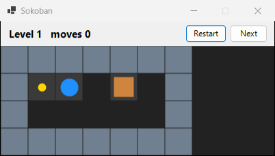
Sokoban
Sokoban - push every box onto a target with the arrow keys (a port of ring/applications/sokoban) # wall @ player $ box . target * box on a target + player on a target
cd samples/UsingDotNet/applications/Sokoban then ring main.ringSource code
# Sokoban - push every box onto a target with the arrow keys (a port of ring/applications/sokoban)
# # wall @ player $ box . target * box on a target + player on a target
load "dotnet.ring"
using {
"System.Drawing"
"System.Windows.Forms"
}
C_CELL = 40
aLevels = [
["#######",
"#.@ $ #",
"# #",
"#######"],
["########",
"# #",
"# .$.$ #",
"# @ #",
"########"],
[" #####",
"### #",
"#.@$ #",
"### $.#",
"#.##$ #",
"# # . ##",
"#$ *$$.#",
"# . #",
"########"]
]
nLevel = 1
aMap = [] # list of strings
nPlayerColumn = 0
nPlayerRow = 0
nMoves = 0
oForm = uiForm("Sokoban",400,300)
oForm {
KeyPreview = True
FormBorderStyle = "FixedSingle"
MaximizeBox = False
}
oPicture = uiPictureBox(oForm,0,36,400,264)
oCanvas = new UiCanvas(oPicture)
oInfo = uiLabel(oForm,"",10,8,250,22)
oInfo.Font = uiFont("Segoe UI",11,true)
oRestart = uiButton(oForm,"Restart",270,5,60,26,"loadLevel(nLevel)")
oNext = uiButton(oForm,"Next",335,5,55,26,"nextLevel()")
uiGameKeys(oForm,"keyPressed(aDotNetArgs[2].KeyCode)")
loadLevel(1)
uiTest(oForm,"selfTest()")
uiRun(oForm)
uiEnd()
# --------------------------------------------------------------------------
func loadLevel nNumber
nLevel = nNumber
aMap = []
for cRow in aLevels[nLevel]
aMap + cRow
next
nMoves = 0
fitWindow()
for nRow = 1 to len(aMap)
for nColumn = 1 to len(aMap[nRow])
if aMap[nRow][nColumn] = "@" or aMap[nRow][nColumn] = "+"
nPlayerColumn = nColumn
nPlayerRow = nRow
ok
next
next
draw()
# the window and the picture follow the size of the level
func fitWindow
nColumns = 0
for cRow in aMap
if len(cRow) > nColumns
nColumns = len(cRow)
ok
next
nWidth = nColumns * C_CELL
if nWidth < 400
nWidth = 400
ok
nHeight = len(aMap) * C_CELL
oPicture.Size = new Size(nWidth,nHeight)
oForm.ClientSize = new Size(nWidth,nHeight + 36)
oCanvas = new UiCanvas(oPicture)
oRestart.Left = nWidth - 130
oNext.Left = nWidth - 65
func nextLevel
loadLevel(nLevel % len(aLevels) + 1)
func tileAt nColumn, nRow
if nRow < 1 or nRow > len(aMap) or nColumn < 1 or nColumn > len(aMap[nRow])
return "#"
ok
return aMap[nRow][nColumn]
func setTile nColumn, nRow, cTile
aMap[nRow][nColumn] = cTile
func isTarget cTile
return cTile = "." or cTile = "*" or cTile = "+"
func isBox cTile
return cTile = "$" or cTile = "*"
# the tile left behind: a target stays a target
func without cTile
if isTarget(cTile)
return "."
ok
return " "
func move nDx, nDy
nTargetColumn = nPlayerColumn + nDx
nTargetRow = nPlayerRow + nDy
cTarget = tileAt(nTargetColumn,nTargetRow)
if cTarget = "#"
return false
ok
if isBox(cTarget)
cBeyond = tileAt(nTargetColumn + nDx,nTargetRow + nDy)
if cBeyond = "#" or isBox(cBeyond)
return false
ok
# push the box
if isTarget(cBeyond)
setTile(nTargetColumn + nDx,nTargetRow + nDy,"*")
else
setTile(nTargetColumn + nDx,nTargetRow + nDy,"$")
ok
ok
# move the player
cHere = tileAt(nPlayerColumn,nPlayerRow)
setTile(nPlayerColumn,nPlayerRow,without(cHere))
if isTarget(cTarget)
setTile(nTargetColumn,nTargetRow,"+")
else
setTile(nTargetColumn,nTargetRow,"@")
ok
nPlayerColumn = nTargetColumn
nPlayerRow = nTargetRow
nMoves++
return true
func boxesLeft
nCount = 0
for cRow in aMap
for x = 1 to len(cRow)
if cRow[x] = "$"
nCount++
ok
next
next
return nCount
func keyPressed cKey
switch cKey
on "Left" move(-1,0)
on "Right" move(1,0)
on "Up" move(0,-1)
on "Down" move(0,1)
off
draw()
func draw
oCanvas.clear("#222222")
for nRow = 1 to len(aMap)
for nColumn = 1 to len(aMap[nRow])
nX = (nColumn - 1) * C_CELL
nY = (nRow - 1) * C_CELL
cTile = aMap[nRow][nColumn]
if cTile = "#"
oCanvas.fillRect(nX,nY,C_CELL - 1,C_CELL - 1,"SlateGray")
but cTile != " "
oCanvas.fillRect(nX,nY,C_CELL - 1,C_CELL - 1,"#3a3a3a")
ok
if isTarget(cTile)
oCanvas.fillCircle(nX + C_CELL / 2,nY + C_CELL / 2,6,"Gold")
ok
if cTile = "$"
oCanvas.fillRect(nX + 5,nY + 5,C_CELL - 11,C_CELL - 11,"Peru")
but cTile = "*"
oCanvas.fillRect(nX + 5,nY + 5,C_CELL - 11,C_CELL - 11,"ForestGreen")
but cTile = "@" or cTile = "+"
oCanvas.fillCircle(nX + C_CELL / 2,nY + C_CELL / 2,13,"DodgerBlue")
ok
next
next
if boxesLeft() = 0
oInfo.Text = "Level " + nLevel + " solved in " + nMoves + " moves!"
else
oInfo.Text = "Level " + nLevel + " moves " + nMoves
ok
oCanvas.show()
func selfTest
# real key presses with the Restart button focused
loadLevel(1)
oRestart.Focus()
if uiSendKeys(oForm,"{LEFT}")
dnAssert("the arrow key moves the player",nPlayerColumn,2)
uiSendKeys(oForm,"{RIGHT}")
dnAssert("the right arrow key too",nPlayerColumn,3)
uiSendKeys(oForm," ")
dnAssert("Space does not press the Restart button",nMoves,2)
ok
loadLevel(1)
dnAssert("player found",nPlayerColumn,3)
keyPressed("Left")
dnAssert("the target square is entered",tileAt(2,2),"+")
keyPressed("Left")
dnAssert("the wall stops the player",nPlayerColumn,2)
keyPressed("Right")
keyPressed("Right")
dnAssert("the box is pushed",tileAt(5,2),"$")
dnAssert("the target is visible again",tileAt(2,2),".")
dnAssert("moves counted",nMoves,3)
# push the box left onto the target: go around it
keyPressed("Down")
keyPressed("Right")
keyPressed("Right")
keyPressed("Up")
dnAssert("player is right of the box",tileAt(6,2),"@")
keyPressed("Left")
keyPressed("Left")
keyPressed("Left")
dnAssert("the box is on the target",tileAt(2,2),"*")
dnAssert("level solved",oInfo.Text,"Level 1 solved in 10 moves!")
# a box can not be pushed into a wall
loadLevel(2)
keyPressed("Down")
keyPressed("Down")
dnAssert("wall at the bottom",nPlayerRow,4)
nextLevel()
dnAssert("next level",nLevel,3)
nextLevel()
nextLevel()
dnAssert("levels wrap around",nLevel,2)
loadLevel(3)
dnAssert("the window grows with the level (9 rows)",oForm.ClientSize.Height,9 * C_CELL + 36)
dnAssert("the picture fits the level",oPicture.Height,9 * C_CELL)
dnAssert("the whole level is drawn (last row)",oCanvas.pixel(40,8 * C_CELL + 20) != "ff222222",1)
loadLevel(1)
dnAssert("a small level keeps a usable width",oForm.ClientSize.Width,400)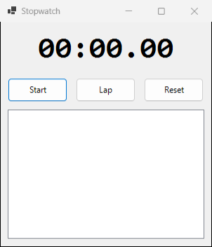
Stopwatch
Stopwatch with laps - a port of ring/applications/stopwatch to RingDotNet
cd samples/UsingDotNet/applications/Stopwatch then ring main.ringSource code
# Stopwatch with laps - a port of ring/applications/stopwatch to RingDotNet
load "dotnet.ring"
using {
"System"
"System.Diagnostics"
"System.Threading"
"System.Drawing"
"System.Windows.Forms"
}
oWatch = new Stopwatch()
nLastLap = 0
oForm = uiForm("Stopwatch",300,320)
oTime = uiLabel(oForm,"00:00.00",10,10,280,60)
oTime {
Font = uiFont("Consolas",32,true)
TextAlign = "MiddleCenter"
}
oStart = uiButton(oForm,"Start",10,80,85,34,"startStop()")
oLap = uiButton(oForm,"Lap",107,80,85,34,"lap()")
oReset = uiButton(oForm,"Reset",204,80,85,34,"reset()")
oLaps = uiListBox(oForm,10,125,280,185)
oTimer = uiTimer(50,"showTime()")
uiTest(oForm,"selfTest()")
uiRun(oForm)
uiEnd()
# --------------------------------------------------------------------------
func formatTime nMilliseconds
nSeconds = floor(nMilliseconds / 1000)
nMinutes = floor(nSeconds / 60)
return twoDigits(nMinutes) + ":" + twoDigits(nSeconds % 60) + "." + twoDigits(floor((nMilliseconds % 1000) / 10))
func twoDigits n
cText = "" + floor(n)
if len(cText) < 2
cText = "0" + cText
ok
return cText
func showTime
oTime.Text = formatTime(oWatch.ElapsedMilliseconds)
func startStop
if oWatch.IsRunning
oWatch.Stop()
oTimer.Stop()
oStart.Text = "Start"
else
oWatch.Start()
oTimer.Start()
oStart.Text = "Stop"
ok
showTime()
func lap
if oWatch.ElapsedMilliseconds > 0
nNow = oWatch.ElapsedMilliseconds
oLaps.Items.Add("Lap " + (oLaps.Items.Count + 1) + " " + formatTime(nNow) + " (+" + formatTime(nNow - nLastLap) + ")")
nLastLap = nNow
ok
func reset
oWatch.Reset()
oTimer.Stop()
oStart.Text = "Start"
oLaps.Items.Clear()
nLastLap = 0
showTime()
# let the form process the timer messages for a while
func waitMs nMilliseconds
oClock = new Stopwatch()
oClock.Start()
while oClock.ElapsedMilliseconds < nMilliseconds
new Application().DoEvents()
new Thread().Sleep(5)
end
func selfTest
dnAssert("format",formatTime(83450),"01:23.45")
oStart.PerformClick()
dnAssert("running",oWatch.IsRunning,1)
dnAssert("button says Stop",oStart.Text,"Stop")
waitMs(300)
oLap.PerformClick()
dnAssert("one lap",oLaps.Items.Count,1)
dnAssert("time moved",oWatch.ElapsedMilliseconds >= 250,True)
dnAssert("display updated by the timer",oTime.Text != "00:00.00",1)
oStart.PerformClick()
dnAssert("stopped",oWatch.IsRunning,0)
oReset.PerformClick()
dnAssert("reset",oTime.Text,"00:00.00")
dnAssert("laps cleared",oLaps.Items.Count,0)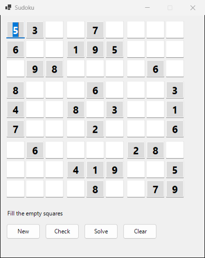
Sudoku
Sudoku - type the digits, "Check" finds mistakes, "Solve" uses backtracking (a port of ring/applications/sudoku)
cd samples/UsingDotNet/applications/Sudoku then ring main.ringSource code
# Sudoku - type the digits, "Check" finds mistakes, "Solve" uses backtracking (a port of ring/applications/sudoku)
load "dotnet.ring"
using {
"System.Drawing"
"System.Windows.Forms"
}
aPuzzle = "530070000600195000098000060800060003400803001700020006060000280000419005000080079"
lLoading = false # true while the program fills the boxes (the TextChanged events are ignored)
aGrid = list(81) # the digits, 0 = empty
aFixed = list(81) # 1 for the digits that belong to the puzzle
aBoxes = []
oForm = uiForm("Sudoku",420,500)
oForm {
FormBorderStyle = "FixedSingle"
MaximizeBox = False
}
for nCell = 1 to 81
nRow = floor((nCell - 1) / 9)
nColumn = (nCell - 1) % 9
nX = 12 + nColumn * 40 + floor(nColumn / 3) * 4
nY = 12 + nRow * 40 + floor(nRow / 3) * 4
oBox = uiTextBox(oForm,nX,nY,38,38)
oBox {
MaxLength = 1
TextAlign = "Center"
Font = uiFont("Segoe UI",16,true)
setTextChangedEvent("typed(" + nCell + ")")
}
aBoxes + oBox
next
oInfo = uiLabel(oForm,"",12,400,396,24)
uiButton(oForm,"New",12,430,70,32,"loadPuzzle(aPuzzle)")
uiButton(oForm,"Check",92,430,70,32,"checkBoard()")
uiButton(oForm,"Solve",172,430,70,32,"solveBoard()")
uiButton(oForm,"Clear",252,430,70,32,"loadPuzzle(copy('0',81))")
loadPuzzle(aPuzzle)
uiTest(oForm,"selfTest()")
uiRun(oForm)
uiEnd()
# --------------------------------------------------------------------------
func loadPuzzle cDigits
lLoading = true
for nCell = 1 to 81
aGrid[nCell] = number(cDigits[nCell])
aFixed[nCell] = (aGrid[nCell] > 0)
if aGrid[nCell] > 0
aBoxes[nCell].Text = "" + aGrid[nCell]
else
aBoxes[nCell].Text = ""
ok
aBoxes[nCell].ReadOnly = aFixed[nCell]
if aFixed[nCell]
aBoxes[nCell].BackColor = uiColor("Gainsboro")
else
aBoxes[nCell].BackColor = uiColor("White")
ok
next
lLoading = false
oInfo.Text = "Fill the empty squares"
func typed nCell
if lLoading or aFixed[nCell]
return
ok
cText = aBoxes[nCell].Text
if cText = "" or (len(cText) = 1 and isdigit(cText) and cText != "0")
if cText = ""
aGrid[nCell] = 0
else
aGrid[nCell] = number(cText)
ok
aBoxes[nCell].ForeColor = uiColor("Black")
else
lLoading = true
aBoxes[nCell].Text = ""
lLoading = false
aGrid[nCell] = 0
ok
# can nDigit go in the cell without breaking a rule
func canPlace aCells, nCell, nDigit
nRow = floor((nCell - 1) / 9)
nColumn = (nCell - 1) % 9
for nOther = 0 to 8
if aCells[nRow * 9 + nOther + 1] = nDigit and nRow * 9 + nOther + 1 != nCell
return false
ok
if aCells[nOther * 9 + nColumn + 1] = nDigit and nOther * 9 + nColumn + 1 != nCell
return false
ok
next
nBoxRow = floor(nRow / 3) * 3
nBoxColumn = floor(nColumn / 3) * 3
for nR = 0 to 2
for nC = 0 to 2
nIndex = (nBoxRow + nR) * 9 + nBoxColumn + nC + 1
if aCells[nIndex] = nDigit and nIndex != nCell
return false
ok
next
next
return true
# backtracking solver; fills aCells and returns true when the puzzle has a solution
func solve aCells
nEmpty = 0
for nCell = 1 to 81
if aCells[nCell] = 0
nEmpty = nCell
exit
ok
next
if nEmpty = 0
return true
ok
for nDigit = 1 to 9
if canPlace(aCells,nEmpty,nDigit)
aCells[nEmpty] = nDigit
if solve(aCells)
return true
ok
aCells[nEmpty] = 0
ok
next
return false
func solveBoard
aWork = aGrid
if solve(aWork)
lLoading = true
for nCell = 1 to 81
aGrid[nCell] = aWork[nCell]
aBoxes[nCell].Text = "" + aWork[nCell]
next
lLoading = false
oInfo.Text = "Solved"
else
oInfo.Text = "This puzzle has no solution"
ok
# mark the digits that break a rule
func checkBoard
nWrong = 0
for nCell = 1 to 81
if aGrid[nCell] > 0 and not canPlace(aGrid,nCell,aGrid[nCell])
aBoxes[nCell].ForeColor = uiColor("Red")
nWrong++
else
aBoxes[nCell].ForeColor = uiColor("Black")
ok
next
nEmpty = 0
for nValue in aGrid
if nValue = 0
nEmpty++
ok
next
if nWrong > 0
oInfo.Text = "" + nWrong + " digits break the rules"
but nEmpty > 0
oInfo.Text = "So far so good, " + nEmpty + " squares left"
else
oInfo.Text = "Complete and correct!"
ok
func selfTest
dnAssert("puzzle loaded",aGrid[1],5)
dnAssert("empty square",aBoxes[3].Text,"")
dnAssert("given digits are read only",aBoxes[1].ReadOnly,True)
aBoxes[3].Text = "4"
dnAssert("typed digit",aGrid[3],4)
checkBoard()
dnAssert("correct digit",oInfo.Text,"So far so good, 50 squares left")
aBoxes[3].Text = "5"
checkBoard()
dnAssert("a repeated digit is marked",aBoxes[3].ForeColor.Name,"Red")
aBoxes[3].Text = "x"
dnAssert("letters are rejected",aBoxes[3].Text,"")
loadPuzzle(aPuzzle)
solveBoard()
dnAssert("solved",oInfo.Text,"Solved")
dnAssert("known solution, first row",aBoxes[3].Text,"4")
dnAssert("known solution, last square",aBoxes[81].Text,"9")
checkBoard()
dnAssert("the solution is valid",oInfo.Text,"Complete and correct!")
aImpossible = aPuzzle
aImpossible[3] = "5"
loadPuzzle(aImpossible)
solveBoard()
dnAssert("impossible puzzle",oInfo.Text,"This puzzle has no solution")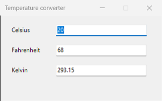
Temperature Converter
Temperature converter: type in any box and the others follow (TextChanged events)
cd samples/UsingDotNet/applications/TemperatureConverter then ring main.ringSource code
# Temperature converter: type in any box and the others follow (TextChanged events)
load "dotnet.ring"
using {
"System.Drawing"
"System.Windows.Forms"
}
lUpdating = false
oForm = uiForm("Temperature converter",320,170)
oForm {
FormBorderStyle = "FixedDialog"
MaximizeBox = False
}
uiLabel(oForm,"Celsius",20,20,80,24)
uiLabel(oForm,"Fahrenheit",20,60,80,24)
uiLabel(oForm,"Kelvin",20,100,80,24)
oCelsius = uiTextBox(oForm,110,18,180,26)
oFahrenheit = uiTextBox(oForm,110,58,180,26)
oKelvin = uiTextBox(oForm,110,98,180,26)
oCelsius.setTextChangedEvent("fromCelsius()")
oFahrenheit.setTextChangedEvent("fromFahrenheit()")
oKelvin.setTextChangedEvent("fromKelvin()")
oCelsius.Text = "20"
uiTest(oForm,"selfTest()")
uiRun(oForm)
uiEnd()
# --------------------------------------------------------------------------
func isValidNumber cText
cText = trim(cText)
if cText = "" or cText = "-" or cText = "."
return false
ok
cDigits = substr(substr(cText,"-",""),".","")
for x = 1 to len(cDigits)
if not isdigit(cDigits[x])
return false
ok
next
return true
func show oBox, nValue
lUpdating = true
oBox.Text = uiNumber(floor(nValue * 100 + 0.5) / 100)
lUpdating = false
func fromCelsius
if lUpdating or not isValidNumber(oCelsius.Text)
return
ok
nValue = number(oCelsius.Text)
show(oFahrenheit,nValue * 9 / 5 + 32)
show(oKelvin,nValue + 273.15)
func fromFahrenheit
if lUpdating or not isValidNumber(oFahrenheit.Text)
return
ok
nValue = (number(oFahrenheit.Text) - 32) * 5 / 9
show(oCelsius,nValue)
show(oKelvin,nValue + 273.15)
func fromKelvin
if lUpdating or not isValidNumber(oKelvin.Text)
return
ok
nValue = number(oKelvin.Text) - 273.15
show(oCelsius,nValue)
show(oFahrenheit,nValue * 9 / 5 + 32)
func selfTest
dnAssert("20 C in F",oFahrenheit.Text,"68")
dnAssert("20 C in K",oKelvin.Text,"293.15")
oCelsius.Text = "100"
dnAssert("100 C in F",oFahrenheit.Text,"212")
oFahrenheit.Text = "32"
dnAssert("32 F in C",oCelsius.Text,"0")
oKelvin.Text = "0"
dnAssert("0 K in C",oCelsius.Text,"-273.15")
oCelsius.Text = "abc"
dnAssert("invalid text is ignored",oFahrenheit.Text,"-459.67")
Tetris
Tetris - Left/Right move, Up rotates, Down drops one row, Space drops all the way (a port of ring/applications/tetris)
cd samples/UsingDotNet/applications/Tetris then ring main.ringSource code
# Tetris - Left/Right move, Up rotates, Down drops one row, Space drops all the way (a port of ring/applications/tetris)
load "dotnet.ring"
using {
"System.Drawing"
"System.Windows.Forms"
}
C_COLUMNS = 10
C_ROWS = 20
C_CELL = 24
# the 7 pieces: each is a list of [column, row] cells (rotated around the first cell)
aPieces = [
[[0,0],[-1,0],[1,0],[2,0]], # I
[[0,0],[1,0],[0,1],[1,1]], # O
[[0,0],[-1,0],[1,0],[0,1]], # T
[[0,0],[-1,0],[1,0],[1,1]], # L
[[0,0],[-1,0],[1,0],[-1,1]], # J
[[0,0],[1,0],[-1,1],[0,1]], # S
[[0,0],[-1,0],[0,1],[1,1]] # Z
]
aColors = ["Cyan","Gold","Purple","Orange","RoyalBlue","LimeGreen","Red"]
aBoard = list(C_COLUMNS * C_ROWS) # 0 = empty, otherwise the piece number
aCurrent = [] # the cells of the falling piece (offsets)
nPiece = 0
nPieceX = 0
nPieceY = 0
nScore = 0
nLines = 0
lGameOver = false
oForm = uiForm("Tetris",C_COLUMNS * C_CELL + 150,C_ROWS * C_CELL)
oForm {
KeyPreview = True
FormBorderStyle = "FixedSingle"
MaximizeBox = False
}
oPicture = uiPictureBox(oForm,0,0,C_COLUMNS * C_CELL,C_ROWS * C_CELL)
oCanvas = new UiCanvas(oPicture)
oInfo = uiLabel(oForm,"",C_COLUMNS * C_CELL + 10,10,130,120)
oInfo.Font = uiFont("Segoe UI",11,true)
oNewGame = uiButton(oForm,"New game",C_COLUMNS * C_CELL + 10,140,120,30,"newGame()")
uiGameKeys(oForm,"keyPressed(aDotNetArgs[2].KeyCode)")
oTimer = uiTimer(500,"tick()")
newGame()
uiTest(oForm,"selfTest()")
uiRun(oForm)
uiEnd()
# --------------------------------------------------------------------------
func cellOf nColumn, nRow
return nRow * C_COLUMNS + nColumn + 1
# does the piece fit at the position
func fits aCells, nX, nY
for aCell in aCells
nColumn = nX + aCell[1]
nRow = nY + aCell[2]
if nColumn < 0 or nColumn >= C_COLUMNS or nRow >= C_ROWS
return false
ok
if nRow >= 0 and aBoard[cellOf(nColumn,nRow)] != 0
return false
ok
next
return true
func rotated aCells
aNew = []
for aCell in aCells
aNew + [-aCell[2],aCell[1]]
next
return aNew
func newPiece
nPiece = random(len(aPieces) - 1) + 1
aCurrent = aPieces[nPiece]
nPieceX = 4
nPieceY = 0
if not fits(aCurrent,nPieceX,nPieceY)
lGameOver = true
oTimer.Stop()
ok
func newGame
aBoard = list(C_COLUMNS * C_ROWS)
nScore = 0
nLines = 0
lGameOver = false
newPiece()
draw()
oTimer.Start()
# lock the piece into the board and clear the full rows
func lockPiece
for aCell in aCurrent
nColumn = nPieceX + aCell[1]
nRow = nPieceY + aCell[2]
if nRow >= 0
aBoard[cellOf(nColumn,nRow)] = nPiece
ok
next
nCleared = clearRows()
aPoints = [0,100,300,500,800]
nScore += aPoints[nCleared + 1]
nLines += nCleared
newPiece()
func clearRows
nCleared = 0
nRow = C_ROWS - 1
while nRow >= 0
lFull = true
for nColumn = 0 to C_COLUMNS - 1
if aBoard[cellOf(nColumn,nRow)] = 0
lFull = false
exit
ok
next
if lFull
# move everything above one row down
for nMove = nRow to 1 step -1
for nColumn = 0 to C_COLUMNS - 1
aBoard[cellOf(nColumn,nMove)] = aBoard[cellOf(nColumn,nMove - 1)]
next
next
for nColumn = 0 to C_COLUMNS - 1
aBoard[cellOf(nColumn,0)] = 0
next
nCleared++
else
nRow--
ok
end
return nCleared
func tick
if lGameOver
return
ok
if fits(aCurrent,nPieceX,nPieceY + 1)
nPieceY++
else
lockPiece()
ok
draw()
func keyPressed cKey
if lGameOver
return
ok
switch cKey
on "Left"
if fits(aCurrent,nPieceX - 1,nPieceY)
nPieceX--
ok
on "Right"
if fits(aCurrent,nPieceX + 1,nPieceY)
nPieceX++
ok
on "Up"
aTurned = rotated(aCurrent)
if fits(aTurned,nPieceX,nPieceY)
aCurrent = aTurned
ok
on "Down"
tick()
on "Space"
while fits(aCurrent,nPieceX,nPieceY + 1)
nPieceY++
end
lockPiece()
off
draw()
func draw
oCanvas.clear("#101820")
for nRow = 0 to C_ROWS - 1
for nColumn = 0 to C_COLUMNS - 1
nValue = aBoard[cellOf(nColumn,nRow)]
if nValue > 0
oCanvas.fillRect(nColumn * C_CELL + 1,nRow * C_CELL + 1,C_CELL - 2,C_CELL - 2,aColors[nValue])
ok
next
next
if not lGameOver
for aCell in aCurrent
oCanvas.fillRect((nPieceX + aCell[1]) * C_CELL + 1,(nPieceY + aCell[2]) * C_CELL + 1,C_CELL - 2,C_CELL - 2,aColors[nPiece])
next
ok
cText = "Score " + nScore + nl + "Lines " + nLines
if lGameOver
cText += nl + nl + "GAME OVER"
ok
oInfo.Text = cText
oCanvas.show()
func selfTest
oTimer.Stop()
# a flat I piece falls to the bottom
aBoard = list(C_COLUMNS * C_ROWS)
nPiece = 1
aCurrent = aPieces[1]
nPieceX = 4
nPieceY = 0
keyPressed("Left")
dnAssert("moved left",nPieceX,3)
keyPressed("Right")
keyPressed("Right")
dnAssert("moved right",nPieceX,5)
keyPressed("Up")
dnAssert("rotated to vertical",aCurrent[2][1],0)
keyPressed("Space")
dnAssert("locked at the bottom",aBoard[cellOf(5,C_ROWS - 1)],1)
# fill the bottom row except one cell and drop a vertical I there to clear rows
aBoard = list(C_COLUMNS * C_ROWS)
for nColumn = 0 to C_COLUMNS - 2
aBoard[cellOf(nColumn,C_ROWS - 1)] = 2
next
nScore = 0
nLines = 0
nPiece = 1
aCurrent = rotated(aPieces[1])
nPieceX = 9
nPieceY = 1
keyPressed("Space")
dnAssert("a row was cleared",nLines,1)
dnAssert("score for one row",nScore,100)
dnAssert("the cleared row is replaced",aBoard[cellOf(0,C_ROWS - 1)],0)
# real key presses with the New game button focused (it used to take the arrow keys and Space)
oNewGame.Focus()
aBoard = list(C_COLUMNS * C_ROWS)
lGameOver = false
nPiece = 3
aCurrent = aPieces[3]
nPieceX = 4
nPieceY = 2
if uiSendKeys(oForm,"{LEFT}")
dnAssert("the left arrow key moves the piece",nPieceX,3)
uiSendKeys(oForm,"{RIGHT}{RIGHT}")
dnAssert("the right arrow key moves the piece",nPieceX,5)
uiSendKeys(oForm,"{UP}")
dnAssert("the up arrow key rotates the piece",aCurrent[2][1],0)
uiSendKeys(oForm,"{DOWN}")
dnAssert("the down arrow key drops one row",nPieceY,3)
nScoreBefore = nScore
uiSendKeys(oForm," ")
dnAssert("Space drops the piece to the bottom",aBoard[cellOf(5,C_ROWS - 1)] > 0 or aBoard[cellOf(5,C_ROWS - 2)] > 0,True)
ok
# the walls stop the piece
nPieceX = 0
aCurrent = aPieces[2]
keyPressed("Left")
dnAssert("wall on the left",nPieceX,0)
# the board fills up
aBoard = list(C_COLUMNS * C_ROWS)
for nColumn = 0 to C_COLUMNS - 1
aBoard[cellOf(nColumn,0)] = 3
aBoard[cellOf(nColumn,1)] = 3
next
newPiece()
dnAssert("game over when the new piece does not fit",lGameOver,1)
newGame()
dnAssert("new game",lGameOver,0)
oTimer.Stop()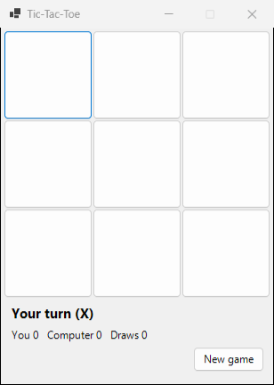
Tic Tac Toe
Tic-Tac-Toe against the computer - a port of ring/applications/tictactoe to RingDotNet
cd samples/UsingDotNet/applications/TicTacToe then ring main.ringSource code
# Tic-Tac-Toe against the computer - a port of ring/applications/tictactoe to RingDotNet
load "dotnet.ring"
using {
"System.Drawing"
"System.Windows.Forms"
}
aBoard = list(9) # 0 = empty, 1 = X (you), 2 = O (computer)
aButtons = []
lGameOver = false
nWinsX = 0
nWinsO = 0
nDraws = 0
aLines = [[1,2,3],[4,5,6],[7,8,9],[1,4,7],[2,5,8],[3,6,9],[1,5,9],[3,5,7]]
oForm = uiForm("Tic-Tac-Toe",306,400)
oForm {
FormBorderStyle = "FixedSingle"
MaximizeBox = False
}
for nIndex = 1 to 9
nRow = floor((nIndex - 1) / 3)
nCol = (nIndex - 1) % 3
oButton = uiButton(oForm,"",3 + nCol * 100,3 + nRow * 100,100,100,"move(" + nIndex + ")")
oButton.Font = uiFont("Segoe UI",36,true)
aButtons + oButton
next
oStatus = uiLabel(oForm,"Your turn (X)",10,310,286,24)
oStatus.Font = uiFont("Segoe UI",11,true)
oScore = uiLabel(oForm,"",10,336,286,20)
uiButton(oForm,"New game",216,358,80,28,"newGame()")
showScore()
uiTest(oForm,"selfTest()")
uiRun(oForm)
uiEnd()
# --------------------------------------------------------------------------
func showScore
oScore.Text = "You " + nWinsX + " Computer " + nWinsO + " Draws " + nDraws
func newGame
aBoard = list(9)
lGameOver = false
for oButton in aButtons
oButton {
Text = ""
BackColor = new Color().Empty
}
next
oStatus.Text = "Your turn (X)"
func move nIndex
if lGameOver or aBoard[nIndex] != 0
return
ok
place(nIndex,1)
if not lGameOver
place(computerMove(),2)
ok
func place nIndex, nPlayer
aBoard[nIndex] = nPlayer
if nPlayer = 1
aButtons[nIndex].Text = "X"
aButtons[nIndex].ForeColor = uiColor("DarkBlue")
else
aButtons[nIndex].Text = "O"
aButtons[nIndex].ForeColor = uiColor("DarkRed")
ok
nWinner = winner(aBoard)
if nWinner > 0
lGameOver = true
for nCell in aLines[nWinner]
aButtons[nCell].BackColor = uiColor("LightGreen")
next
if aBoard[aLines[nWinner][1]] = 1
nWinsX++
oStatus.Text = "You win!"
else
nWinsO++
oStatus.Text = "The computer wins"
ok
showScore()
but isFull(aBoard)
lGameOver = true
nDraws++
oStatus.Text = "Draw"
showScore()
else
oStatus.Text = "Your turn (X)"
ok
# index of the winning line (0 = none)
func winner aCells
for nLine = 1 to len(aLines)
nA = aCells[aLines[nLine][1]]
if nA != 0 and nA = aCells[aLines[nLine][2]] and nA = aCells[aLines[nLine][3]]
return nLine
ok
next
return 0
func isFull aCells
for nCell in aCells
if nCell = 0
return false
ok
next
return true
# a cell that wins or blocks, else the center, a corner, any cell
func computerMove
for nPlayer in [2,1]
for nCell = 1 to 9
if aBoard[nCell] = 0
aBoard[nCell] = nPlayer
nLineFound = winner(aBoard)
aBoard[nCell] = 0
if nLineFound > 0
return nCell
ok
ok
next
next
for nCell in [5,1,3,7,9,2,4,6,8]
if aBoard[nCell] = 0
return nCell
ok
next
func selfTest
# X plays 1 and 2: the computer takes the center, then must block at 3
move(1)
dnAssert("X placed",aButtons[1].Text,"X")
dnAssert("computer answered in the center",aButtons[5].Text,"O")
move(2)
dnAssert("computer blocks the top row",aButtons[3].Text,"O")
move(7)
dnAssert("computer blocks the left column",aBoard[4],2)
dnAssert("game continues",lGameOver,0)
newGame()
dnAssert("board cleared",aButtons[1].Text,"")
# the computer wins when the player ignores it
move(1)
move(9)
move(8)
dnAssert("game ended",lGameOver,1)
dnAssert("score updated",nWinsO + nDraws + nWinsX >= 1,True)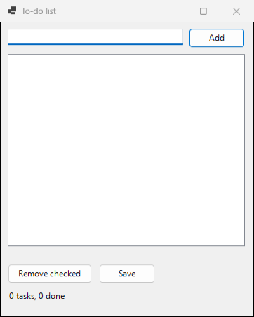
Todo List
To-do list with check boxes, saved to a text file
cd samples/UsingDotNet/applications/TodoList then ring main.ringSource code
# To-do list with check boxes, saved to a text file
load "dotnet.ring"
using {
"System"
"System.IO"
"System.Drawing"
"System.Windows.Forms"
}
cFile = new Path().Combine([new Path().GetTempPath(),"ringdotnet_todo.txt"])
if uiSelfTest()
cFile = new Path().Combine([new Path().GetTempPath(),"ringdotnet_todo_selftest.txt"])
ok
oForm = uiForm("To-do list",360,420)
oInput = uiTextBox(oForm,10,10,250,26)
uiButton(oForm,"Add",268,9,80,28,"addTask()")
oList = new CheckedListBox() {
Location = new Point(10,46)
Size = new Size(338,290)
CheckOnClick = True
}
# ItemCheck fires before the state changes, so the counters are refreshed after the mouse or key press
oList {
setMouseUpEvent("updateInfo()")
setKeyUpEvent("updateInfo()")
}
oForm.Controls.Add(oList)
uiButton(oForm,"Remove checked",10,345,120,28,"removeDone()")
uiButton(oForm,"Save",140,345,80,28,"saveTasks()")
oInfo = uiLabel(oForm,"",10,382,338,22)
oForm.AcceptButton = oForm.Controls.Item(1)
loadTasks()
uiTest(oForm,"selfTest()")
uiRun(oForm)
uiEnd()
# --------------------------------------------------------------------------
func updateInfo
nDone = oList.CheckedItems.Count
oInfo.Text = string(oList.Items.Count) + " tasks, " + nDone + " done"
func addTask
cTask = trim(oInput.Text)
if cTask != ""
oList.Items.Add([ :item = cTask, :isChecked = False ])
oInput.Text = ""
updateInfo()
ok
func removeDone
for nIndex = oList.Items.Count - 1 to 0 step -1
if oList.GetItemChecked(nIndex)
oList.Items.RemoveAt(nIndex)
ok
next
updateInfo()
# one line per task: "[x] text" or "[ ] text"
func saveTasks
cText = ""
for nIndex = 0 to oList.Items.Count - 1
if oList.GetItemChecked(nIndex)
cText += "[x] "
else
cText += "[ ] "
ok
cText += oList.Items.Item(nIndex) + nl
next
new File().WriteAllText([ :path = cFile, :contents = cText ])
func loadTasks
oList.Items.Clear()
if new File().Exists(cFile)
for cLine in str2list(new File().ReadAllText(cFile))
cLine = trim(cLine)
if len(cLine) > 4
oList.Items.Add([ :item = substr(cLine,5), :isChecked = (left(cLine,3) = "[x]") ])
ok
next
ok
updateInfo()
func selfTest
if new File().Exists(cFile)
new File().Delete(cFile)
ok
loadTasks()
dnAssert("starts empty",oList.Items.Count,0)
oInput.Text = "write Ring code"
addTask()
oInput.Text = "call .NET"
addTask()
oInput.Text = " "
addTask()
dnAssert("two tasks (blank is ignored)",oList.Items.Count,2)
oList.SetItemChecked(0,1)
updateInfo()
dnAssert("one task done",oList.CheckedItems.Count,1)
dnAssert("info label",oInfo.Text,"2 tasks, 1 done")
saveTasks()
oList.Items.Clear()
loadTasks()
dnAssert("reloaded two tasks",oList.Items.Count,2)
dnAssert("check state restored",oList.GetItemChecked(0),1)
dnAssert("text restored",oList.Items.Item(1),"call .NET")
removeDone()
dnAssert("checked task removed",oList.Items.Count,1)
dnAssert("the other one stays",oList.Items.Item(0),"call .NET")
new File().Delete(cFile)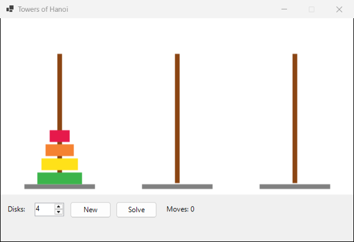
Towers Of Hanoi
Towers of Hanoi - click a peg to pick the top disk, click another peg to drop it; or let it solve itself (a port of ring/applications/towersofhanoi to RingDotNet)
cd samples/UsingDotNet/applications/TowersOfHanoi then ring main.ringSource code
# Towers of Hanoi - click a peg to pick the top disk, click another peg to drop it; or let it solve itself
# (a port of ring/applications/towersofhanoi to RingDotNet)
load "dotnet.ring"
using {
"System.Drawing"
"System.Windows.Forms"
}
nDisks = 4
aPegs = [[],[],[]] # each peg is a list of disk sizes, the bottom disk first
nHeld = 0 # the peg we picked from (0 = nothing in the hand)
nMoves = 0
aPlan = [] # the moves of the solver: [from,to]
nPlanned = 0
oForm = uiForm("Towers of Hanoi",600,380)
oForm {
FormBorderStyle = "FixedSingle"
MaximizeBox = False
}
oPicture = uiPictureBox(oForm,0,0,600,300)
oCanvas = new UiCanvas(oPicture)
oPicture.setMouseDownEvent("clicked(aDotNetArgs[2].X)")
uiLabel(oForm,"Disks:",10,316,45,24)
oCount = new NumericUpDown() {
Location = new Point(58,314)
Size = new Size(50,24)
Minimum = 1
Maximum = 8
Value = 4
}
oForm.Controls.Add(oCount)
uiButton(oForm,"New",118,312,70,28,"newGame()")
uiButton(oForm,"Solve",196,312,70,28,"startSolver()")
oInfo = uiLabel(oForm,"",280,316,310,24)
oSolver = uiTimer(300,"solverStep()")
newGame()
uiTest(oForm,"selfTest()")
uiRun(oForm)
uiEnd()
# --------------------------------------------------------------------------
func newGame
oSolver.Stop()
nDisks = number(oCount.Value)
aPegs = [[],[],[]]
for nSize = nDisks to 1 step -1
aPegs[1] + nSize
next
nHeld = 0
nMoves = 0
draw()
func draw
oCanvas.clear("White")
for nPeg = 1 to 3
nX = 100 + (nPeg - 1) * 200
oCanvas.fillRect(nX - 4,60,8,220,"SaddleBrown")
if nPeg = nHeld
oCanvas.fillRect(nX - 60,282,120,8,"Orange")
else
oCanvas.fillRect(nX - 60,282,120,8,"Gray")
ok
for nLevel = 1 to len(aPegs[nPeg])
nSize = aPegs[nPeg][nLevel]
nWidth = 20 + nSize * 14
oCanvas.fillRect(nX - nWidth / 2,262 - (nLevel - 1) * 24,nWidth,20,diskColor(nSize))
next
next
if isSolved()
oInfo.Text = "Solved in " + nMoves + " moves (minimum " + (pow(2,nDisks) - 1) + ")"
else
oInfo.Text = "Moves: " + nMoves
ok
oCanvas.show()
func diskColor nSize
aColors = ["#e6194b","#f58231","#ffe119","#3cb44b","#4363d8","#911eb4","#f032e6","#808000"]
return aColors[nSize]
func isSolved
return len(aPegs[3]) = nDisks
# can the top disk of nFrom go to nTo
func canMove nFrom, nTo
if nFrom = nTo or len(aPegs[nFrom]) = 0
return false
ok
if len(aPegs[nTo]) = 0
return true
ok
return aPegs[nFrom][len(aPegs[nFrom])] < aPegs[nTo][len(aPegs[nTo])]
func moveDisk nFrom, nTo
if not canMove(nFrom,nTo)
return false
ok
aPegs[nTo] + aPegs[nFrom][len(aPegs[nFrom])]
del(aPegs[nFrom],len(aPegs[nFrom]))
nMoves++
return true
func clicked nMouseX
nPeg = floor(nMouseX / 200) + 1
if nPeg > 3
nPeg = 3
ok
if nHeld = 0
if len(aPegs[nPeg]) > 0
nHeld = nPeg
ok
else
moveDisk(nHeld,nPeg)
nHeld = 0
ok
draw()
# the recursive solution, collected as a list of moves
func solve nCount, nFrom, nTo, nVia
if nCount = 0
return
ok
solve(nCount - 1,nFrom,nVia,nTo)
aPlan + [nFrom,nTo]
solve(nCount - 1,nVia,nTo,nFrom)
func startSolver
newGame()
aPlan = []
solve(nDisks,1,3,2)
nPlanned = 0
oSolver.Start()
func solverStep
nPlanned++
if nPlanned > len(aPlan)
oSolver.Stop()
return
ok
moveDisk(aPlan[nPlanned][1],aPlan[nPlanned][2])
draw()
func selfTest
oCount.Value = 3
newGame()
dnAssert("three disks on the first peg",len(aPegs[1]),3)
dnAssert("cannot move an empty peg",canMove(2,3),0)
dnAssert("move a small disk",moveDisk(1,2),1)
dnAssert("cannot put a big disk on a small one",canMove(1,2),0)
# click-based play: pick from peg 1, drop on peg 3
clicked(100)
dnAssert("picked",nHeld,1)
clicked(500)
dnAssert("dropped",len(aPegs[3]),1)
# the solver
newGame()
aPlan = []
solve(nDisks,1,3,2)
dnAssert("7 moves for 3 disks",len(aPlan),7)
for aStep in aPlan
moveDisk(aStep[1],aStep[2])
next
draw()
dnAssert("solved by the plan",isSolved(),1)
dnAssert("minimum number of moves",nMoves,7)
dnAssert("message",left(oInfo.Text,6),"Solved")
oCount.Value = 5
newGame()
aPlan = []
solve(nDisks,1,3,2)
dnAssert("31 moves for 5 disks",len(aPlan),31)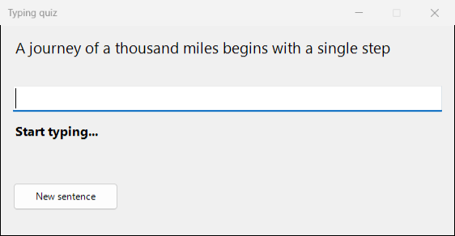
Typing Quiz
Typing quiz - type the sentence, the quiz measures the speed and the mistakes (a port of ring/applications/typingquiz)
cd samples/UsingDotNet/applications/TypingQuiz then ring main.ringSource code
# Typing quiz - type the sentence, the quiz measures the speed and the mistakes (a port of ring/applications/typingquiz)
load "dotnet.ring"
using {
"System"
"System.Diagnostics"
"System.Drawing"
"System.Windows.Forms"
}
aSentences = [
"The quick brown fox jumps over the lazy dog",
"Ring is a practical language for building applications",
"Windows Forms controls can be used from Ring programs",
"A journey of a thousand miles begins with a single step"
]
cTarget = ""
oWatch = new Stopwatch()
lStarted = false
nBest = 0
oForm = uiForm("Typing quiz",560,260)
oForm {
FormBorderStyle = "FixedDialog"
MaximizeBox = False
}
oSentence = uiLabel(oForm,"",15,15,530,50)
oSentence.Font = uiFont("Segoe UI",14,false)
oInput = uiTextBox(oForm,15,75,530,30)
oInput {
Font = uiFont("Segoe UI",14,false)
setTextChangedEvent("typed()")
}
oResult = uiLabel(oForm,"",15,120,530,60)
oResult.Font = uiFont("Segoe UI",12,true)
uiButton(oForm,"New sentence",15,195,130,34,"newSentence()")
oBest = uiLabel(oForm,"",160,203,300,22)
newSentence()
uiTest(oForm,"selfTest()")
uiRun(oForm)
uiEnd()
# --------------------------------------------------------------------------
func newSentence
cTarget = aSentences[random(len(aSentences) - 1) + 1]
showTarget(cTarget)
oInput.Text = ""
oResult {
Text = "Start typing..."
ForeColor = uiColor("Black")
}
oWatch.Reset()
lStarted = false
oInput.Focus()
func showTarget cText
cTarget = cText
oSentence.Text = cText
# the number of typed characters that differ from the target (the part that is not typed yet does not count)
func mistakes cTyped
nWrong = 0
for x = 1 to len(cTarget)
if x <= len(cTyped) and cTyped[x] != cTarget[x]
nWrong++
ok
next
if len(cTyped) > len(cTarget)
nWrong += len(cTyped) - len(cTarget)
ok
return nWrong
# words per minute: five characters make a word
func wordsPerMinute nCharacters, nMilliseconds
if nMilliseconds <= 0
return 0
ok
return floor((nCharacters / 5) / (nMilliseconds / 60000))
func typed
cTyped = oInput.Text
if cTyped = "" or cTarget = ""
return
ok
if not lStarted
oWatch.Start()
lStarted = true
ok
if cTyped = cTarget
oWatch.Stop()
nSpeed = wordsPerMinute(len(cTarget),oWatch.ElapsedMilliseconds)
oResult {
Text = "Done! " + nSpeed + " words per minute"
ForeColor = uiColor("DarkGreen")
}
if nSpeed > nBest
nBest = nSpeed
oBest.Text = "Best: " + nBest + " wpm"
ok
else
nWrong = mistakes(cTyped)
if nWrong = 0
oResult {
Text = "Good so far..."
ForeColor = uiColor("Black")
}
else
oResult {
Text = "" + nWrong + " characters are different"
ForeColor = uiColor("Firebrick")
}
ok
ok
func selfTest
showTarget("hello ring")
dnAssert("a correct start has no mistakes",mistakes("hello"),0)
dnAssert("one mistake",mistakes("hallo ring"),1)
dnAssert("extra characters count",mistakes("hello ring!!"),2)
dnAssert("speed",wordsPerMinute(50,60000),10)
oInput.Text = "hel"
dnAssert("good so far",oResult.Text,"Good so far...")
dnAssert("the watch started",oWatch.IsRunning,1)
oInput.Text = "hex"
dnAssert("mistake message",oResult.Text,"1 characters are different")
oInput.Text = "hello ring"
dnAssert("finished",left(oResult.Text,5),"Done!")
dnAssert("the watch stopped",oWatch.IsRunning,0)
dnAssert("best recorded",left(oBest.Text,5),"Best:")
newSentence()
dnAssert("new sentence is one of the list",find(aSentences,cTarget) > 0,True)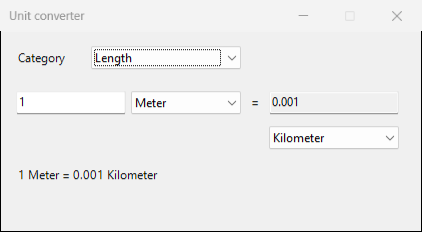
Unit Converter
Unit converter - length, weight, volume and temperature
cd samples/UsingDotNet/applications/UnitConverter then ring main.ringSource code
# Unit converter - length, weight, volume and temperature
load "dotnet.ring"
using {
"System.Drawing"
"System.Windows.Forms"
}
# each category: [name, [[unit, factor to the base unit], ...]] (temperature is handled separately)
aCategories = [
["Length",[["Meter",1],["Kilometer",1000],["Centimeter",0.01],["Millimeter",0.001],["Mile",1609.344],["Yard",0.9144],["Foot",0.3048],["Inch",0.0254]]],
["Weight",[["Kilogram",1],["Gram",0.001],["Milligram",0.000001],["Pound",0.45359237],["Ounce",0.028349523125],["Ton",1000]]],
["Volume",[["Liter",1],["Milliliter",0.001],["Cubic meter",1000],["Gallon (US)",3.785411784],["Quart (US)",0.946352946],["Cup (US)",0.2365882365]]],
["Temperature",[["Celsius",0],["Fahrenheit",0],["Kelvin",0]]]
]
oForm = uiForm("Unit converter",420,200)
oForm {
FormBorderStyle = "FixedDialog"
MaximizeBox = False
}
aNames = []
for aCategory in aCategories
aNames + aCategory[1]
next
uiLabel(oForm,"Category",15,18,70,22)
oCategory = uiComboBox(oForm,90,15,150,aNames)
oValue = uiTextBox(oForm,15,60,110,26)
oFrom = uiComboBox(oForm,130,60,110,["-"])
uiLabel(oForm,"=",248,62,16,22)
oResult = uiTextBox(oForm,268,60,130,26)
oResult.ReadOnly = True
oTo = uiComboBox(oForm,268,95,130,["-"])
oFormula = uiLabel(oForm,"",15,135,380,40)
oCategory.setSelectedIndexChangedEvent("fillUnits()")
oValue.setTextChangedEvent("convert()")
oFrom.setSelectedIndexChangedEvent("convert()")
oTo.setSelectedIndexChangedEvent("convert()")
fillUnits()
oValue.Text = "1"
uiTest(oForm,"selfTest()")
uiRun(oForm)
uiEnd()
# --------------------------------------------------------------------------
func fillUnits
aUnits = aCategories[oCategory.SelectedIndex + 1][2]
oFrom.Items.Clear()
oTo.Items.Clear()
for aUnit in aUnits
oFrom.Items.Add(aUnit[1])
oTo.Items.Add(aUnit[1])
next
oFrom.SelectedIndex = 0
oTo.SelectedIndex = 1
convert()
func toCelsius cUnit, nValue
switch cUnit
on "Celsius" return nValue
on "Fahrenheit" return (nValue - 32) * 5 / 9
on "Kelvin" return nValue - 273.15
off
func fromCelsius cUnit, nValue
switch cUnit
on "Celsius" return nValue
on "Fahrenheit" return nValue * 9 / 5 + 32
on "Kelvin" return nValue + 273.15
off
# convert nValue between two units of a category
func convertValue cCategory, cFromUnit, cToUnit, nValue
if cCategory = "Temperature"
return fromCelsius(cToUnit,toCelsius(cFromUnit,nValue))
ok
for aCategory in aCategories
if aCategory[1] = cCategory
nFromFactor = 0
nToFactor = 0
for aUnit in aCategory[2]
if aUnit[1] = cFromUnit
nFromFactor = aUnit[2]
ok
if aUnit[1] = cToUnit
nToFactor = aUnit[2]
ok
next
return nValue * nFromFactor / nToFactor
ok
next
func isNumeric cText
cText = trim(cText)
if cText = "" or cText = "-" or cText = "."
return false
ok
cDigits = substr(substr(cText,"-",""),".","")
for x = 1 to len(cDigits)
if not isdigit(cDigits[x])
return false
ok
next
return true
func convert
if oFrom.SelectedIndex < 0 or oTo.SelectedIndex < 0 or not isNumeric(oValue.Text)
oResult.Text = ""
return
ok
nResult = convertValue(oCategory.Text,oFrom.Text,oTo.Text,number(oValue.Text))
oResult.Text = uiNumber(floor(nResult * 1000000 + 0.5) / 1000000)
oFormula.Text = oValue.Text + " " + oFrom.Text + " = " + oResult.Text + " " + oTo.Text
func selfTest
dnAssert("default is meter to kilometer",oFormula.Text,"1 Meter = 0.001 Kilometer")
oValue.Text = "5"
oTo.SelectedIndex = 4
dnAssert("5 m in miles",oResult.Text,"0.003107")
oCategory.SelectedIndex = 3
dnAssert("units follow the category",oFrom.Items.Count,3)
oValue.Text = "100"
oFrom.SelectedIndex = 0
oTo.SelectedIndex = 1
dnAssert("100 C in F",oResult.Text,"212")
oTo.SelectedIndex = 2
dnAssert("100 C in K",oResult.Text,"373.15")
oCategory.SelectedIndex = 1
oValue.Text = "2"
oFrom.SelectedIndex = 3
oTo.SelectedIndex = 0
dnAssert("2 lb in kg",oResult.Text,"0.907185")
oValue.Text = "abc"
dnAssert("invalid input clears the result",oResult.Text,"")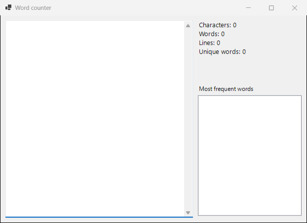
Word Counter
Word counter - live statistics of the text and the most frequent words (uses a .NET Regex and Dictionary)
cd samples/UsingDotNet/applications/WordCounter then ring main.ringSource code
# Word counter - live statistics of the text and the most frequent words (uses a .NET Regex and Dictionary)
load "dotnet.ring"
using {
"System.Text.RegularExpressions"
"System.Collections.Generic"
"System.Linq"
"System.Drawing"
"System.Windows.Forms"
}
oForm = uiForm("Word counter",620,420)
oText = uiMemo(oForm,10,10,380,400)
oText {
WordWrap = True
ScrollBars = "Vertical"
}
oStats = uiLabel(oForm,"",400,10,210,120)
oStats.Font = uiFont("Segoe UI",10,false)
uiLabel(oForm,"Most frequent words",400,140,200,20)
oTop = uiListBox(oForm,400,162,210,248)
oText.setTextChangedEvent("update()")
update()
uiTest(oForm,"selfTest()")
uiRun(oForm)
uiEnd()
# --------------------------------------------------------------------------
# the words of a text (letters and digits, lower case)
func wordsOf cText
oMatches = new Regex("[\p{L}\p{N}']+").Matches(cText)
aWords = []
for oMatch in oMatches.toList()
aWords + lower(oMatch.Value)
next
return aWords
func update
cText = oText.Text
aWords = wordsOf(cText)
nChars = len(cText)
nLines = 0
if cText != ""
nLines = len(str2list(cText))
ok
oStats.Text = "Characters: " + nChars + nl + "Words: " + len(aWords) + nl + "Lines: " + nLines + nl + "Unique words: " + len(uniqueWords(aWords))
oTop.Items.Clear()
aCounts = countWords(aWords)
nShown = 0
for nIndex = len(aCounts) to 1 step -1
if nShown < 10
oTop.Items.Add(aCounts[nIndex][1] + " x" + aCounts[nIndex][2])
nShown++
ok
next
func uniqueWords aWords
return dnQuery(aWords).Distinct().ToList()
# [[word, count], ...] sorted by count: the most frequent word is the last one
func countWords aWords
oCounts = new NumberDictionary()
for cWord in aWords
aGot = oCounts.TryGetValue(cWord)
nOld = 0
if aGot[1]
nOld = aGot[2]
ok
oCounts.SetItem(cWord,nOld + 1)
next
aList = []
for oPair in oCounts.toList()
aList + [oPair.Key,oPair.Value]
next
return sort(aList,2)
func selfTest
oText.Text = "the cat and the hat" + windowsnl() + "The end"
dnAssert("word count",len(wordsOf(oText.Text)),7)
dnAssert("unique words",len(uniqueWords(wordsOf(oText.Text))),5)
dnAssert("stats label",substr(oStats.Text,"Words: 7") > 0,True)
dnAssert("two lines",substr(oStats.Text,"Lines: 2") > 0,True)
aCounts = countWords(wordsOf(oText.Text))
dnAssert("sorted counts: first the 'the'",aCounts[len(aCounts)][1],"the")
dnAssert("the count is 3",aCounts[len(aCounts)][2],3)
dnAssert("top list filled",oTop.Items.Count,5)
oText.Text = ""
dnAssert("empty text",substr(oStats.Text,"Words: 0") > 0,True)
oText.Text = "naïve café 42 times"
dnAssert("unicode letters and digits",len(wordsOf(oText.Text)),4)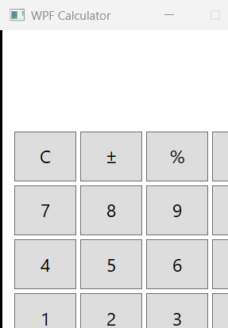
Wpf Calculator
Calculator with a WPF window described in XAML (the calculator logic is the one of the Windows Forms Calculator)
cd samples/UsingDotNet/applications/WpfCalculator then ring main.ringSource code
# Calculator with a WPF window described in XAML (the calculator logic is the one of the Windows Forms Calculator)
load "dotnet.ring"
using {
"System.Windows"
"System.Windows.Controls"
"System.Windows.Controls.Primitives"
"System.Windows.Media"
}
cDisplay = "0"
nAccumulator = 0
cOperator = ""
lFresh = true
oWindow = ""
oScreen = ""
oHistory = ""
cXaml = '<Window xmlns="http://schemas.microsoft.com/winfx/2006/xaml/presentation" xmlns:x="http://schemas.microsoft.com/winfx/2006/xaml" Title="WPF Calculator" Width="300" Height="420" ResizeMode="CanMinimize" WindowStartupLocation="CenterScreen">'
cXaml += '<DockPanel Margin="10"><StackPanel DockPanel.Dock="Top">'
cXaml += '<TextBlock x:Name="history" Height="20" TextAlignment="Right" Foreground="Gray"/>'
cXaml += '<TextBlock x:Name="screen" Height="60" FontSize="36" TextAlignment="Right" Text="0"/></StackPanel>'
cXaml += '<UniformGrid x:Name="keys" Columns="4" Margin="0,10,0,0"/></DockPanel></Window>'
func main
oWindow = wpfXaml(cXaml)
oScreen = wpfFind(oWindow,"screen")
oHistory = wpfFind(oWindow,"history")
oKeys = wpfFind(oWindow,"keys")
for cKey in ["C","±","%","/","7","8","9","*","4","5","6","-","1","2","3","+","0",".","√","="]
oButton = wpfButton(cKey,"press('" + cKey + "')")
oButton {
FontSize = 18
Margin = new Thickness(2,2,2,2)
}
oKeys.Children.Add(oButton)
next
wpfTest(oWindow,"selfTest()")
wpfRun(oWindow)
wpfEnd()
func press cKey
if find(["0","1","2","3","4","5","6","7","8","9"],cKey) > 0
if lFresh
cDisplay = cKey
lFresh = false
but len(cDisplay) < 16
if cDisplay = "0"
cDisplay = cKey
else
cDisplay += cKey
ok
ok
but cKey = "."
if lFresh
cDisplay = "0."
lFresh = false
but not substr(cDisplay,".")
cDisplay += "."
ok
but cKey = "C"
cDisplay = "0"
nAccumulator = 0
cOperator = ""
lFresh = true
oHistory.Text = ""
but cKey = "±"
if cDisplay != "0"
if left(cDisplay,1) = "-"
cDisplay = substr(cDisplay,2)
else
cDisplay = "-" + cDisplay
ok
ok
but cKey = "%"
cDisplay = uiNumberWpf(number(cDisplay) / 100)
lFresh = true
but cKey = "√"
if number(cDisplay) < 0
cDisplay = "Error"
else
cDisplay = uiNumberWpf(sqrt(number(cDisplay)))
ok
lFresh = true
but find(["+","-","*","/"],cKey) > 0
if cOperator != "" and not lFresh
calculate()
ok
nAccumulator = number(cDisplay)
cOperator = cKey
oHistory.Text = cDisplay + " " + cKey
lFresh = true
but cKey = "="
if cOperator != ""
oHistory.Text = uiNumberWpf(nAccumulator) + " " + cOperator + " " + cDisplay + " ="
calculate()
cOperator = ""
ok
ok
oScreen.Text = cDisplay
func calculate
nRight = number(cDisplay)
switch cOperator
on "+"
nResult = nAccumulator + nRight
on "-"
nResult = nAccumulator - nRight
on "*"
nResult = nAccumulator * nRight
on "/"
if nRight = 0
cDisplay = "Cannot divide by zero"
lFresh = true
nAccumulator = 0
cOperator = ""
return
ok
nResult = nAccumulator / nRight
off
cDisplay = uiNumberWpf(nResult)
nAccumulator = nResult
lFresh = true
# a number as text without Ring's fixed decimals
func uiNumberWpf nValue
return dnRequest("call",[dnTypeCached("System.Convert, System.Private.CoreLib"),"ToString",nValue,dnType("System.Globalization.CultureInfo").getProp("InvariantCulture")])
func typeKeys cKeys
for nIndex = 1 to len(cKeys)
press(cKeys[nIndex])
next
func selfTest
typeKeys("12+30=")
dnAssert("12+30",oScreen.Text,"42")
press("C")
typeKeys("9/3=")
dnAssert("9/3",oScreen.Text,"3")
press("C")
typeKeys("0.1+0.2=")
dnAssert("floating point",oScreen.Text,"0.30000000000000004")
press("C")
typeKeys("81")
press("√")
dnAssert("square root",oScreen.Text,"9")
press("C")
typeKeys("5/0=")
dnAssert("division by zero",oScreen.Text,"Cannot divide by zero")
press("C")
# the buttons of the window work
oKeys = wpfFind(oWindow,"keys")
dnAssert("20 buttons",oKeys.Children.Count,20)
oEvent = dnNew("RoutedEventArgs",[ :routedEvent = new WpfButtonBase().ClickEvent ])
oSeven = oKeys.Children.Item(4)
dnAssert("the 5th key is a 7",oKeys.Children.Item(4).Content,"7")
oSeven.RaiseEvent(oEvent)
oSeven.RaiseEvent(oEvent)
dnAssert("two clicks on 7",oScreen.Text,"77")
dnAssert("history",oHistory.Text,"")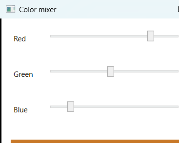
Wpf Color Mixer
Color mixer in WPF: three sliders, a rectangle that shows the color and its #RRGGBB code
cd samples/UsingDotNet/applications/WpfColorMixer then ring main.ringSource code
# Color mixer in WPF: three sliders, a rectangle that shows the color and its #RRGGBB code
load "dotnet.ring"
using {
"System"
"System.IO"
"System.Drawing"
"System.Windows"
"System.Windows.Controls"
"System.Windows.Media"
"System.Windows.Media.Imaging"
"System.Windows.Shapes"
}
oWindow = ""
aSliders = []
aValues = []
oSwatch = ""
oCode = ""
func main
oWindow = wpfWindow("Color mixer",380,300)
oGrid = new Grid()
oGrid.Margin = new Thickness(15,15,15,15)
oWindow.Content = oGrid
for nIndex = 1 to 4
oGrid.RowDefinitions.Add(new RowDefinition())
next
for cName in ["Red","Green","Blue"]
oRow = new StackPanel() {
Orientation = "Horizontal"
Margin = new Thickness(0,5,0,5)
}
oLabel = wpfLabel(cName)
oLabel.Width = 60
oRow.Children.Add(oLabel)
oSlider = new Slider() {
Minimum = 0
Maximum = 255
Width = 220
setValueChangedEvent("mix()")
}
oRow.Children.Add(oSlider)
oValue = wpfLabel("0")
oRow.Children.Add(oValue)
oGrid.Children.Add(oRow)
oGrid.SetRow(oRow,len(aSliders))
aSliders + oSlider
aValues + oValue
next
oSwatch = new WpfRectangle() {
Height = 80
Margin = new Thickness(0,10,0,0)
}
oGrid.Children.Add(oSwatch)
oGrid.SetRow(oSwatch,3)
oCode = wpfLabel("")
oCode.HorizontalAlignment = "Center"
oGrid.Children.Add(oCode)
oGrid.SetRow(oCode,3)
oCode.VerticalAlignment = "Bottom"
aSliders[1].Value = 200
aSliders[2].Value = 120
aSliders[3].Value = 40
wpfTest(oWindow,"selfTest()")
wpfRun(oWindow)
wpfEnd()
func hex2 nValue
cText = upper(hex(floor(nValue)))
if len(cText) < 2
cText = "0" + cText
ok
return cText
func mix
if len(aSliders) < 3 or not isobject(oSwatch)
return
ok
cColor = "#" + hex2(aSliders[1].Value) + hex2(aSliders[2].Value) + hex2(aSliders[3].Value)
for nIndex = 1 to 3
aValues[nIndex].Content = "" + floor(aSliders[nIndex].Value)
next
oBrush = wpfBrush(cColor)
oSwatch.Fill = oBrush
oCode.Content = cColor
func selfTest
aSliders[1].Value = 255
aSliders[2].Value = 0
aSliders[3].Value = 0
dnAssert("red code",oCode.Content,"#FF0000")
dnAssert("value label",aValues[1].Content,"255")
aSliders[1].Value = 0
aSliders[2].Value = 128
aSliders[3].Value = 255
dnAssert("mixed code",oCode.Content,"#0080FF")
dnAssert("the swatch brush",oSwatch.Fill.Color.ToString(),"#FF0080FF")
dnAssert("the swatch is rendered with the color",wpfPixel(oSwatch,100,80,50,40),"ff0080ff")